Всесоюзный
научно-исследовательский институт водоснабжения, канализации, гидротехнических
сооружений и инженерной гидрогеологии
(ВНИИ ВОДГЕО) Госстроя СССР
Справочное пособие к СНиП
Серия основана в 1989 году
ПРОЕКТИРОВАНИЕ СООРУЖЕНИЙ ДЛЯ ЗАБОРА ПОВЕРХНОСТНЫХ ВОД
Москва Стройиздат 1990
Разработано к СНиП 2.04.02-84
«Водоснабжение. Наружные сети и сооружения». Рассмотрены общие вопросы
использования поверхностных вод для водоснабжения. Изложены основные положения
по оценке местных условий забора воды, выбора места расположения, типа,
конструктивной схемы водоприемника и элементов водозаборных сооружений.
Для проектировщиков, изыскателей и эксплуатационного
персонала, работающих в области водоснабжения.
Надежность забора воды заданного расхода и качества,
как свидетельствует опыт эксплуатации водозаборных сооружений, зависит в первую
очередь от местных природных условий избранного участка водотока или водоема, а
также от возможности их последующего нарушения. Местные условия на прилегающих
участках избранного водотока или водоема обычно индивидуальны. Они формируются
совокупностью сложных взаимно обусловленных топографических, геологических,
метеорологических, гидрологических, гидроморфологических, гидротермических,
гидробиологических и других факторов и процессов. В первых трех разделах
Пособия излагаются основные положения по использованию поверхностных
источников, методика расчета местных условий забора воды и другие сведения,
необходимые в качестве исходного материала для проектирования.
В недалеком прошлом считали, что условия забора воды
из водоемов более благоприятны, чем из водотоков (рек). Водозаборные сооружения
на водоемах проектировались и строились обычно по аналогии с речными. В
расчетах проектов дополнительно учитывались только элементы волн, ожидаемая
переработка берега и прибрежного склона, колебания уровня воды и величины
придонных орбитальных скоростей. Исходя из условий волнового воздействия водозаборные
сооружения размещали преимущественно на укрытых от интенсивного волнения
акваториях - в бухтах, заливах, за выступающими в водоем берегами и т. п. Такой
подход является причиной захвата в водоприемные устройства воды с чрезмерно
повышенным содержанием наносов, водорослей, мусора, шугольда, их завала
продуктами переработки берегов и прибрежных склонов и периодических прекращений
ее забора, что приводит к переустройству и даже к повторному строительству
водозаборных сооружений.
Обобщение опыта эксплуатации водозаборных сооружений
на водоемах с одновременной постановкой поисковых лабораторных исследований
показало, что условия забора воды из водотоков и водоемов принципиально
различны. В отличие от водотоков в прибрежной зоне водоемов одновременно с волнением
появляются сосредоточенные вдольбереговые, инерционные, градиентные,
плотностные и другие разновидности течений. Вследствие взаимодействия с
сопутствующими факторами и процессами эти течения обычно транспортируют массы
воды с чрезмерно повышенным содержанием наносов, водорослей, мусора, а в
предледоставные периоды еще и переохлажденные, что и явилось причиной
упомянутых последствий.
Факторы и процессы, определяющие условия забора воды в
прибрежных зонах водоемов, изложены в разд. 3 Пособия.
Водоприемное устройство (водоприемник) является одним
из основных и наиболее ответственных элементов водозаборного сооружения. Выбор
места расположения, типа и конструктивной схемы водоприемника в каждом конкретном
случае должен определяться в первую очередь местными условиями источника. Для
решения этих вопросов в разд. 4.
Пособия приведены несколько наиболее перспективных схем водоприемников с
методиками их расчета, классификация, категории надежности забора воды и
требования, предъявляемые к водозаборным сооружениям.
Рекомендации по выбору места расположения, типов,
конструктивных схем и методик расчета водозаборных сооружений на реках изложены
в разд. 5 Пособия.
В разд. 6 изложены принципиально новые положения по выбору
места расположения, типа и компоновки элементов водозаборного сооружения. В их
основу положен принцип изыскания мероприятий по исключению проникания
сосредоточенных течений прибойной зоны к месту размещения водоприемников и
нарушения бытового режима прибрежной зоны водоема в районе водозаборного
сооружения на период его эксплуатации. Такой подход позволил резко сократить
стоимость строительных работ, повысить надежность забора воды и улучшить ее
качество.
Вопросам организации забора воды водозаборными
сооружениями из водотока с недостаточным стоком посвящен разд. 7.
В разд. 8 изложен комплекс мероприятий, связанных с
организацией рыбозащиты и очистки забираемой в водозаборное сооружение воды от
мусора.
В Пособии отражен современный научно-технический
уровень использования поверхностных вод для целей водоснабжения. В нем учтены
разработанные в последние годы методы оценки природных условий поверхностных
источников, наиболее прогрессивных конструктивных схем водоприемников,
наносозащитных и рыбозащитных устройств, выбора места расположения, типа и
компоновки конструктивных элементов водозаборных сооружений, а также учтен опыт
их проектирования и эксплуатации на водотоках и водоемах.
Водозаборные сооружения (водозабор) - комплекс гидротехнических сооружений,
обеспечивающих забор воды из источника, ее предварительную очистку и подачу
водопотребителям с требуемыми расходом и напором.
Водоприемник
(водоприемное устройство) - сооружение, с помощью которого осуществляются забор
воды из водотока или водоема и ее предварительная очистка от мусора, рыбы и т.
п.
Забор воды -
процесс отбора воды из источника водоснабжения.
Глубинный водоотбор - процесс отбора воды из нижних слоев источника
водоснабжения.
Источник водоснабжения - водоток или водоем, используемый для водоснабжения.
Место водоотбора - участок источника водоснабжения, в пределах которого забираемая
водоприемником вода оказывает влияние на перемещение наносов, мусора, шугольда,
планктона, а также на направление течений, возбуждаемых другими факторами.
Местные условия источника водоснабжения - совокупность топографических, геологических,
метеорологических, гидрологических, гидроморфологических, гидротермических,
гидробиологических и других факторов избранного или заданного участка
источника. Поскольку упомянутые факторы взаимосвязаны, то местные условия
обычно индивидуальны для каждого избранного участка источника водоснабжения.
Плотностная стратификация - изменение плотности воды по глубине водотока или
водоема. Она может возникнуть за счет перепада температур или солености воды
между поверхностным и придонным слоями, а также за счет поступления масс воды с
повышенным содержанием наносов.
Двухслойная температурная стратификация - расслоение
воды на два слоя с разностью температур между ними.
Селективный водоотбор - послойный забор воды из источника за счет разности ее
плотности в придонном и поверхностном слоях.
Критическое положение поверхности раздела - предельное положение поверхности раздела, при котором
в водоприемник не забирается вода из верхнего слоя.
Большой (крупный) водоем - водоем, в котором высота волн в пределах прибрежной
зоны h ³ 0,75 м. При
меньших высотах волн в прибрежных зонах обычно развивается водная
растительность, отсутствуют вдольбереговые течения, миграция наносов и др.
Глубоководный водоем (глубоководная зона) - участок водоема, в пределах которого глубина
воды H ³ 0,5 lгл.
Средний гидродинамический уровень воды - условная линия, проведенная таким образом, что
суммарные площади, отсекаемые профилем волны выше и ниже этой линии, равны
между собой. При волнении эта линия вследствие появления ветроволнового или
волнового нагона смещается в сторону наветренного берега.
Ветроволновое течение - смещение масс воды от действия ветра и волнения.
Компенсационное течение - отток придонных слоев воды, обусловленный перекосом уровня воды, вызванного
ветроволновым, дрейфовым или другими разновидностями течений.
Дрейфовое течение - частный случай ветроволнового течения при резком ослаблении или полном
исчезновении ветра.
Волновое течение - смещение масс воды вследствие асимметрии орбитального движения частиц
жидкости при волнении.
Транзитное течение - смещение масс воды по всей длине водоема, связанное с их втеканием и
одновременным вытеканием из него.
Сточное течение - течение, вызванное втеканием или вытеканием масс воды из водоема, а
также их оттоком от наветренного берега с прекращением волнения.
Плотностное течение - послойное смещение масс воды, вызванное наличием
разности ее плотности по глубине или градиента давления, обусловленного
температурой, соленостью или мутностью.
Вдольбереговое течение - смещение масс воды вдоль берега, вызванное и
поддерживаемое энергией разрушающихся косоподходящих к берегу волн или масс
воды, сбрасываемых в прибойную зону.
Разрывное течение - периодическое смещение масс воды по всей глубине прибрежной зоны
водоема, вызванное неравномерностью ветроволнового нагона, течений и волнения.
Градиентное течение - смещение масс воды за счет градиента давления или
перепада ее уровня, возникающего от действия косоподходящих волн и
сосредоточенных течений.
Инерционное течение - любая из разновидностей течений, вышедшая за пределы
зоны действия возбуждающих факторов и продолжающая дальнейшее движение только
за счет сил инерции.
Прибойная зона -
прибрежная полоса водоема, в пределах которой происходит разрушение волн.
Пособие разработано ВНИИ ВОДГЕО - доктор технических
наук, проф. А. С. Образовский (разд. 5), А. Н. Ляпин (разд. 2), кандидаты технических наук А. А. Смирнов -
руководитель темы (разд. 1, 2, 3, 4, 6), А. М. Мотинов (разд. 4, 5, 8), А. П.
Нетюхайло (разд. 3, 6), А. В Шахов (разд. 7), А. И.
Мадзалевский (разд. 1, 5), и. А. Серов (разд. 4), Д. И. Алтунин (разд. 3), Т. В. Колесникова (разд. 5, 8); канд.
биолог, наук А. М. Пахоруков (разд. 8), инженеры В. Г. Жилин (разд. 7), Т. С. Карпенко
(разд. 1, 5), А. Н. Стрижкин (разд. 4) при участии
Союзводоканалпроекта - инженеры М. А. Лозовский, Т. В. Маслова, В. В. Титков.
1. Общие
вопросы использования поверхностных вод для водоснабжения
1.1. В
Пособии отражены следующие вопросы:
оценка местных условий отбора воды в районе
намечаемого размещения водозаборных сооружений;
выбор места расположения, типа и компоновки
конструктивных элементов водозабора в соответствии с местными условиями
водотока или водоема;
изыскание мероприятий, позволяющих исключить или до
минимума свести нарушение бытового режима водотока или водоема в процессе
строительства и эксплуатации водозабора;
расчет основных факторов, определяющих местные условия
водотока или водоема, конструктивных элементов водоприемников и водозаборов,
селективного водоотбора в стратифицированном потоке и др.;
изыскание мероприятий по ослаблению заносимости
водоприемников, захвата в них воды с повышенным содержанием водной
растительности, планктона, шугольда и др., появившихся в процессе эксплуатации
водозабора.
1.2.
Рассмотрены вопросы строительства и эксплуатации водозаборных сооружений
промышленного, хозяйственно-питьевого, теплоэнергетического и
сельскохозяйственного назначения на водотоках и водоемах.
1.3. Опыт
эксплуатации и лабораторных исследований водозаборных сооружений
свидетельствует, что имеющие место затруднения в их работе связаны с завалом
водоприемных устройств наносами, захватом в них воды с повышенным содержанием
водной растительности, мусора и планктона, местным нарушением стратификации
воды и др. В Пособии большое место отведено вопросам, связанным с оценкой
местных условий забора воды на избранном участке источника и возможных
последствий при их нарушении, так как затруднения в работе водозаборных
сооружений обусловлены преимущественно недооценкой в проектах местных условий
источника или последующим нарушением в процессе строительства и эксплуатации.
1.4. К
поверхностным водам относятся воды водотоков (рек, каналов, ручьев) и водоемов
(морей, озер, водохранилищ, прудов).
1.5.
Поверхностные воды используются в народном хозяйстве для
хозяйственно-питьевого, производственного и теплоэнергетического водоснабжения,
орошения, обводнения и гидроэнергетических целей, а также удовлетворения других
государственных и общественных надобностей.
1.6. Основы
водного законодательства устанавливают общий порядок водопользования, охрану
вод, государственный учет и планирование их использования.
Для проектных организаций обязательными являются
требования СНиП 2.04.02-84 и других
нормативных документов в зависимости от назначения водозаборного сооружения и
источника водоснабжения.
1.7. Отбор
воды с помощью водозаборов является согласно Водному законодательству СССР
специальным водопользованием. В соответствии с этим при рассмотрении вопросов
использования поверхностных вод для целей водоснабжения требуется согласование
условий специального водопользования и получение разрешений на него.
1.8. Класс
гидротехнических сооружений следует принимать в соответствии со СНиП
2.06.01-86 «Гидротехнические сооружения. Основные положения
проектирования».
1.9. Выбор
источника водоснабжения осуществляется на основе геодезических, геологических,
гидрогеологических, гидрологических, гидротермических, ихтиологических,
гидрохимических, гидробиологических инженерных изысканий, санитарных и других
исследований, а также технико-экономических расчетов.
1.10. В
качестве источника водоснабжения могут быть использованы поверхностные воды
водотоков и водоемов.
1.11. Источник водоснабжения должен удовлетворять следующим
требованиям:
обеспечивать отбор воды необходимого количества с
учетом роста водопотребления на перспективу;
обеспечивать бесперебойное снабжение водой
потребителей;
иметь воду такого качества, которое в наибольшей
степени отвечает нуждам потребителей или позволяет достичь его путем
экономически оправданной очистки;
обладать объемами, позволяющими производить забор воды
из него без нарушения сложившейся экологической системы;
обеспечить возможность подачи воды потребителю с
наименьшей затратой средств.
1.12. Выбор
источника водоснабжения по нескольким вариантам должен производиться на
основании тщательного изучения и анализа перспективного использования водных
ресурсов района, в котором он расположен.
1.13. При
оценке использования водных ресурсов с учетом требований п. 1.11 следует учитывать:
расходный режим, водохозяйственный баланс и
устойчивость ложа, поймы или берегов с прогнозом на 15-20 лет;
требования к качеству воды, предъявляемые
потребителями;
качественную характеристику воды в источнике с
прогнозом возможного ее изменения с учетом поступления сточных вод;
качественные и количественные характеристики мутности,
водной растительности, планктона, биообрастателей и сора, их режимы и
перемещение донных отложений;
наличие вечномерзлых грунтов, возможность промерзания
и пересыхание источника, наличие снежных лавин и селевых явлений, а также
других стихийных явлений в водосборном бассейне источника;
осенне-зимний режим источника и шуголедовые явления в
источнике;
температуру воды по периодам года и ее стратификацию;
характерные особенности весеннего вскрытия источника,
половодья и прохождения паводков;
требования органов по регулированию использования и
охране вод, санитарного надзора, охраны рыбных запасов и др.;
возможность организации зон санитарной охраны при
необходимости забора воды на хозяйственно-питьевые нужды;
технико-экономическую оценку условий комплексного
использования вод различных источников рассматриваемого района.
1.14. При
оценке достаточности водных ресурсов источника следует учитывать обеспечение
гарантированного расхода воды после ее забора.
1.15. В
случае недостаточности водных ресурсов источника следует предусматривать
регулирование естественного стока воды в пределах одного года (сезонное регулирование)
или многолетнее регулирование, а также возможность переброски воды из других
более многоводных источников.
1.16. Во
всех системах водоснабжения необходимо предусматривать мероприятия для
предотвращения механического, биологического и минералогического загрязнений
воды, отбираемой водоприемниками, при последующем ее транспортировании по
каналам и водоводам.
1.17. В
случае, если ожидаются шуголедовые явления, в источнике водоснабжения
необходимо предусматривать электрообогрев решеток, подвод к водоприемникам
теплой воды или сжатого воздуха, импульсную промывку в сочетании с обратной,
покрытие стержней сороудерживающих решеток гидрофобным материалом и др.
1.18. При
отборе воды из источников, имеющих рыбохозяйственное значение, следует
предусматривать рыбозащитные устройства.
1.19. В
водозаборах с самотечными или сифонными водоводами их должно быть не менее
двух.
1.20. В
зависимости от местных условий забора воды необходимо изыскивать такое место
расположения, тип и компоновку конструктивных элементов водозаборного
сооружения, при которых будет сведено до минимума нарушение бытового режима
источника водоснабжения.
Наилучшим проектным решением является такое, при
котором не нарушается бытовой режим источника водоснабжения в процессе
эксплуатации водозабора.
1.21. В
тяжелых или очень тяжелых местных условиях отбора воды из источника допускается
использование дублирующих водоприемных устройств, размещаемых в различных
местных или природных условиях забора воды, а при их большой удаленности- двух
водозаборных сооружений.
1.22. Состав
и объем изысканий для проектирования водозаборов устанавливаются нормативными
документами. В процессе изысканий необходимо получить сведения для составления
прогноза возможных изменений окружающей природной среды в районе строительства.
1.23.
Техническое задание и программа составляются на весь комплекс инженерных
изысканий, при этом должны максимально использоваться материалы ранее
выполненных изыскательских работ и другие имеющиеся данные о природных условиях
заданного района.
1.24.
Гидрологические изыскания выполняют в четыре этапа:
I -
для выявления перспективных источников водоснабжения;
II - на перспективных участках источников
водоснабжения;
III -
на выбранных участках источников водоснабжения для разработки ТЭО (ТЭР);
IV - на выбранном участке источника водоснабжения для
разработки проекта.
Минимальная продолжительность стационарных
гидрологических наблюдений, осуществляемых на II и III этапах, должна быть не
менее двух лет.
Состав гидрологических наблюдений в зависимости от
этапа работ различается только степенью детальности проработки вопросов.
1.25.
Гидрологические изыскания на I этапе осуществляются для выявления перспективных
источников водоснабжения на основе изучения и сравнения гидрологических условий
пунктов (районов) размещения водозаборных сооружений в рассматриваемом районе с
использованием картографических, фондовых и архивных материалов.
При необходимости могут быть проведены рекогносцировочные
обследования, включающие единичные замеры и пробы.
На I этапе выявляют:
характер режима водотока или водоема (изменение
расходов и соответствующих уровней воды);
максимальные и минимальные уровни воды за многолетний
период;
шуголедовые условия;
распределение температур воды по глубине;
возможность пересыхания или промерзания реки и их
продолжительность;
химический состав и мутность воды;
наличие источников загрязнения в районе изысканий и
выше него;
тип руслового процесса или ожидаемую устойчивость
берегов на водоемах;
нарушение естественного режима источника в результате
хозяйственной деятельности человека;
участки для постановки дальнейших гидрологических
изысканий;
конкурентоспособные пункты по гидрологическим
условиям,
а также выдают сравнительные характеристики
рассмотренных источников водоснабжения и уточняется программа работ на II
этапе.
По I этапу - в составе отчетных материалов (записки)
представляется обзорная схема расположения водотоков и водоемов в М 1:25000 -
1:100000, на которой показаны перспективные источники водоснабжения и участки
размещения водозаборных сооружений на них.
1.26.
Гидрологические изыскания на II этапе, осуществляют на перспективных участках
источников водоснабжения для выбранных пунктов строительства водозаборных
сооружений на основе изучения полевыми методами гидрологических условий этих
участков с организацией стационарных наблюдений.
На этом этапе в отчетных материалах (очерках)
обеспечивают выдачу комплекса гидрологических характеристик водных объектов и
исходных данных, позволяющих сравнивать их и осуществлять выбор места
строительства водозабора по гидрологическим условиям, а также уточнить
программу работ III этапа.
В период наблюдений измеряют:
уровни и температуру воды 2 раза в сутки (в 8 и 20 ч);
расход воды 30-100 раз в год;
расход взвешенных наносов не менее 24, донных - 8-10
раз в год;
толщину льда 1 раз в 5 дней;
расход льда и шуги 5-10 раз в осенний и весенний
периоды, а также наблюдают за образованием шуги, внутриводного и поверхностного
льда ежедневно до устойчивого ледостава.
Отбор проб для химического анализа воды производится
не менее 8 раз, а для бактериологического - не менее 4 раз в год с освещением
всех фаз гидрологического режима водотока.
Для установления типа и интенсивности руслового
процесса следует выполнять не менее двух съемок в год в течение ряда лет.
При наблюдениях на водоемах предусматриваются
измерения:
уровней и температуры воды в намечаемых створах
водозаборов на двух-четырех вертикалях;
элементов ветровых волн и характер их трансформации;
интенсивности течений, возбуждаемых волнением в
прибрежной зоне;
расхода взвешенных и донных наносов в прибрежной зоне
при различной интенсивности волнения;
переработки берегов и прибрежных склонов после
наиболее интенсивных штормов (не менее 3-4 съемок в течение ряда лет);
толщины льда (2-3 измерения), его торошения, навалов
на берег, структуры по разрезам его физических свойств (в течение двух-трех
периодов устойчивого ледостава).
Отбор проб для химического анализа воды производится
не менее 8 раз, а для бактериологического - не менее 4 раз в год с освещением
всех фаз гидрологического режима водоема.
1.27. По
материалам выполненных гидрологических изысканий составляется технический
отчет, в котором освещаются упомянутые характеристики объектов, делается
заключение о сформировавшихся русловых процессах, дается сравнительная оценка
гидрологических условий рассматриваемых участков, рекомендации по размещению
водозаборных сооружений и необходимости проведения дальнейших изысканий.
Заключение о типе руслового процесса и прогноз
переформирования русла и поймы или берега и прибрежного склона на участке
водозабора составляются на основании анализа многолетних материалов
топографических и гидрометрических съемок. В случае отсутствия таких материалов
прогноз русловых деформаций или переработки берега и прибрежного склона
составляется в соответствии с установленным типом руслового процесса на основе
гидроморфологического анализа по имеющимся методикам.
Прогноз русловых и пойменных деформаций или
переработки берега и прибрежного склона позволяет обосновать выбор места
расположения, тип и компоновку элементов водозаборных сооружений (схему,
плановую и вертикальную посадки) и наметить мероприятия, обеспечивающие
нормальную работу их в процессе эксплуатации.
Минимальный объем топографических и гидрометрических
данных, необходимых для обоснованного заключения о типе руслового или
берегового процессов и образовавшихся в ходе его развития специфических форм
поперечного сечения русла или профиля прибрежной зоны, зависит от плановой
конфигурации водотока или водоема.
На небольших водотоках со сравнительно прямолинейным
руслом, которым сопутствуют обычно ленточно-грядовый, осередковый или
побочневый типы руслового процесса, съемку реки необходимо проводить на участке
длиной 20-30 ширин русла по обе стороны от намечаемого створа водозабора с
интервалом между промерными поперечниками, равным двум-трем средним глубинам
потока при ленточно-грядовом и осередковом и одно-двухкратной ширине русла при
побочневом типе руслового процесса.
1.28. В
водотоках с извилистым руслом, для которых характерно существование
ограниченного, свободного или незавершенного меандрирования, съемку производят
по длине, включающей две-три излучины реки выше и ниже водозабора с интервалом
между поперечниками, равным одному-двум ширинам русла. Промерные поперечники за
пределами русла доводят до отметок, на 1 м превышающих уровень высоких вод. В
случае пойменной многорукавности изыскания проводятся исходя из наличия тех
русловых процессов, которые формируются в протоках.
На водоемах с относительно прямолинейной конфигурацией
берега и прибрежного склона в пределах 1000-1500 м по одну и другую сторону от
намечаемого створа водозабора съемку прибрежной зоны можно ограничить 500 м в
обе стороны от его створа.
В случаях значительной изрезанности берега и
прибрежного склона, выходящих за пределы прибойной зоны (мысы, бухты, заливы,
инженерные сооружения и др.), съемку, как и гидрологические измерения,
необходимо расширять за пределы выступающих в водоем препятствий.
1.29.
Масштабы геодезической съемки участка реки, на котором предполагается
строительство водозабора, назначаются в пределах 1 : 2000 - 1 : 500, а высота
сечения рельефа - от 2 до 0,5 м. В особых случаях, например при интенсивной
застройке участка намечаемого расположения водозабора, эти величины могут
изменяться с внесением соответствующих обоснований в программу изысканий.
Для сокращения объема полевых работ и времени
изысканий рекомендуется применять аэрофотосъемку. Масштабы аэрофотоснимков для
рек шириной до 300 м назначаются 1 : 5000 - 1 : 15 000, для крупных рек - до 1
: 20 000.
1.30. Гидрологическими изысканиями на III
этапе обеспечиваются детальное изучение гидрологических условий для определения
перспективных площадок размещения водозаборных сооружений в пределах выбранного
участка строительства, проведение стационарных, при необходимости, специальных
исследований. На основе анализа материалов изысканий и сравнения характеристик
гидрологических условий намеченных площадок в отчетных материалах выдается
уточненная оценка гидрологических условий выбранных участков размещения
водозаборных сооружений. На этом этапе уточняется также программа работ IV
этапа.
1.31. На IV
этапе производятся необходимая детализация и уточнение гидрологических
характеристик на основе продолжающихся стационарных наблюдений на избранном
участке размещения водозаборных сооружений.
1.32.
Характеристики, необходимые для выбора места размещения водозаборных
сооружений, должны основываться на данных гидрологических наблюдений
Госкомгидромета и других ведомств, а также гидрологических изысканий,
проведенных на источниках водоснабжения в районе размещения водозабора.
1.33.
Объективную оценку условий забора воды из избранного источника можно получить
путем обследования и анализа опыта эксплуатации выше и ниже расположенных
водозаборных сооружений. Они обычно позволяют раскрыть всю совокупность
факторов, особенно трудно уловимых гидротермических, гидробиологических и
гидроморфологических процессов, а также ихтиологических условий, что позволит
повысить качество проектирования.
1.34.
Отчетные материалы (записки, очерки) по составу и объему должны содержать
необходимые для выбора места размещения водозаборного сооружения расчетные
данные и другие материалы, включая заключение, в соответствии с нормативными
требованиями.
Состав инженерно-геодезических и
инженерно-геологических изысканий и исследований в данном Пособии не
рассматривается
2. Условия
забора воды из водотоков (рек). Характеристика гидрологического режима
2.1. В
гидрологическом отношении каждая река в выбранном створе характеризуется
следующими данными, используемыми при проектировании водозаборов:
изменением расхода воды в течение года (гидрографом
реки);
графиком связи расходов и уровней воды (кривая Q
= f(H));
графиком уровней воды в данном створе;
графиком связи уровней в различных створах;
продолжительностью стояния уровней воды;
водностью реки и твердым стоком.
2.2.
Изменение уровня воды в течение года вместе с гидрографом отражает особенности
питания реки. В зависимости от снегового, дождевого, ледникового, озерного,
подземного питания различают гидрографы только с одним весенним пиком подъема
уровня, со многими пиками в зависимости от выпадения дождевых ливней, с одним
продолжительным летним подъемом уровня воды, соответствующим таянию ледников, и
с практически одинаковым уровнем при питании реки из озер.
В настоящее время в связи с гидротехническим
строительством бытовые формы гидрографов оказываются на ряде рек измененными в
результате многолетнего регулирования стока.
2.3. Графики
связи расходов и уровней воды, кривые связи H = f(Q),
являются важнейшими показателями водности и уровенного режима реки. Однако при
использовании этих графиков необходимо учитывать их различие для открытого и
закрытого льдом русла, различать фазы подъема и спада уровней, учитывать
возможность зашугованности и деформации русла. Так, при проходе половодной или
паводочной волны расход воды на подъеме оказывается большим, а на спаде меньшим
при одной и той же отметке уровня воды. Кривые H = f(Q)
имеют при этом петлеобразный вид.
2.4. Графики
высоких и низких уровней воды в данном створе с показанием отметок ледостава и
ледохода, зажорных и других уровней являются полезными, особенно если на них
указаны основные отметки дна русла, верха и низа окон проектируемого
водозабора, отметки верховой стенки и отражателя самопромывающегося ковша (рис. 1). Такие графики определяют вертикальные
габариты водозаборов и наглядно демонстрируют все возможные осложнения при их
будущей эксплуатации.
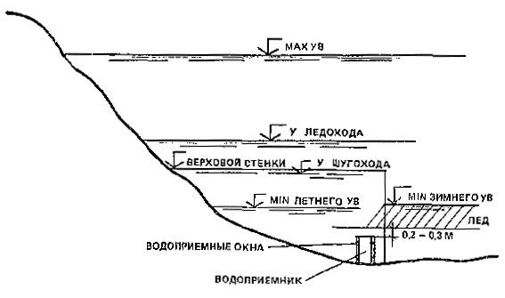
Рис. 1. Характеристика уровня воды в створе водозабора
2.5. Графики
связи уровней между различными водомерными постами часто используются для
нахождения уровня воды в промежуточном створе. Наиболее надежными такие графики
связи оказываются только для периода открытого потока в устойчивом русле.
2.6. Большое
значение имеют кривые повторяемости и кривые продолжительности уровней воды,
которые позволяют определять число дней, в течение которых уровни не опускаются
ниже данной отметки, и сколько дней в году наблюдаются эти уровни.
2.7.
Водность реки характеризуется максимальным и минимальным расходами воды. Для
целей водоснабжения расчетными являются минимальные расходы Qmin
различной обеспеченности.
2.8. В
русловом процессе реки выделяют обратимые и необратимые деформации. К первым
относятся повторяющиеся изменения русла при прохождении по нему песчаных гряд,
размывы плесовых ложбин и отложения наносов на перекатах в половодье, а в
межень - деформации противоположного знака, сползание излучин или их разворот в
плане.
К необратимым деформациям относятся очень медленно
происходящие (вековые) изменения, трудно преодолеваемые рекой природные
факторы, а также изменений, связанные с возводимыми в реке инженерными
сооружениями.
2.9.
Выделяют пять основных типов руслового процесса (макроформ). При этом не
исключается возможность смешанных типов руслового процесса (рис. 2).
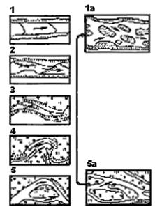
Рис. 2. Типы руслового процесса
1 -
ленточно-грядовый; 1a - русловая
многорукавность; 2 - побочневой; 3 - ограниченное меандрирование; 4 -
свободное меандрирование; 5 - незавершенное меандрирование; 5а -
пойменная многорукавность
2.10. При
ленточно-грядовом типе руслового процесса деформация русла происходит в
результате поступательного движения больших ленточных гряд с сезонным
изменением их высоты по всей ширине русла (рис.
3). В условиях низкой межени движение ленточных гряд может
приостанавливаться. Обнажающиеся при этом вершины гряд образуют одиночные
осередки. Гребни гряд отстоят одни от других на расстоянии примерно четырех -
восьми ширин русла. Русло реки в плане имеет незначительную и неупорядоченную
извилистость. Плановые деформации не характерны. Пойма отсутствует или является
унаследованной от других типов. Этот тип руслового процесса обычно наблюдается
в верховьях рек в слаборазвитых излучинах
с начальной стадией меандрирования, в протоках, в спрямляющих излучинах и в
каналах (см. рис. 3). Он может быть
и при других типах руслового процесса.
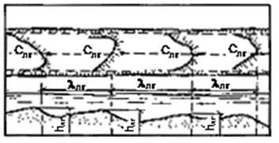
Рис. 3. Ленточно-грядовый тип руслового процесса
lлг - шаг
ленточной гряды; h'лг – высота
ленточной гряды
2.11. При
побочневом типе руслового процесса ленточные гряды перекашиваются в плане,
причем направление перекоса смежных гряд противоположно (см. рис. 2). В межень прибереговые части этих мезоформ обсыхают,
образуя песчаные отмели (побочни), располагающиеся по длине реки в шахматном
порядке. Затопленный гребень гряды образует перекат. Снизу к гребню нередко
примыкает коса, образующая затон. Пойма не характерна (рис. 4).
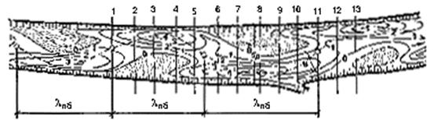
Рис. 4. Побочневой тип руслового процесса
lпб - шаг
побочия; Bбp - ширина русла; В -
ширина меженного русла; 1-13 - поперечные створы
Деформации русла сводятся при этом типе руслового
процесса к сползанию в половодье перекошенных в плане ленточных гряд. Плановые
деформации берегов наблюдаются на участках подвальев гряд, но не получают большого
развития.
2.12. Для
ограниченного меандрирования характерно наличие неразмываемых берегов реки. В
реке появляются извилистость выходящего на пойму паводочного потока и
чередование отрывов течения от берегов. В местах отрыва возникает слабое
течение или появляются застойные зоны, где оседают взвешенные наносы. В
результате образуются отдельные небольшие пойменные массивы, привязанные к
излучинам реки. Плановые деформации выражаются в сползании вниз по течению
излучин и огибаемых ими пойменных массивов без существенного изменения их
плановых очертаний и продольного профиля дна (см. рис. 2).
Вертикальные деформации сопровождаются снижением
отметок перекатов в межень и их восстановлением в первую половину половодья. В
плесе деформации имеют обратный ход, а именно: размыв в половодье и намыв в
межень (рис. 5).
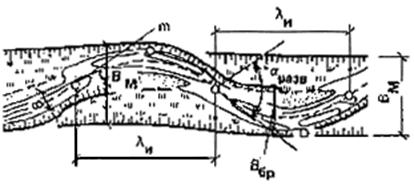
Рис. 5. Ограниченное меандрирование
lи - шаг излучины;
aразв -
угол разворота; Вбр - ширина русла; ВМ -
ширина пояса меандрирования; В - ширина меженного русла; т -
участок подмываемого берега
2.13. Для
свободного меандрирования характерен замкнутый цикл развития излучин. Каждый
цикл начинается с искривления русла и формирования излучины. При этом в начале
цикла излучины обычно сползают (см. рис. 2).
При этом, в отличие от ограниченного меандрирования, углы разворота постепенно
увеличиваются. При дальнейшем увеличении угла разворота сползание сменяется
разворотом излучины или ее вытягиванием. При больших углах разворота начинается
раздвоение плесов и излучина увеличивает асимметрию своих плановых очертаний,
приобретая одновременно форму петли. Цикл развития излучины завершается
промывом перешейка петли русла. Поток переходит в спрямленное русло, а старое,
главное русло, превращается в старицу. После прорыва перешейка цикл развития
излучины повторяется (рис. 6).
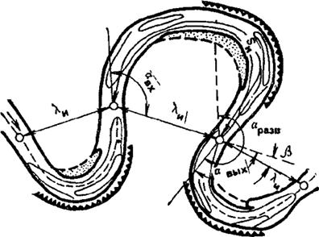
Рис. 6. Свободное меандрирование
lи - шаг
излучины; Sи - длина
излучины; aразв -
угол разворота; aвх - угол
входа; aвых - угол
выхода; b - угол сопряжения излучины
2.14. При
незавершенном меандрировании русло реки развивается по схеме свободного
меандрирования, но цикл деформаций прерывается в результате образования
спрямляющего потока. Последний создается до достижения излучиной формы петли
обычно при резком несовпадении динамических осей потока в половодье и в межень.
Тип процесса распознается по наличию на меандрирующем участке двух русел:
первичного русла и спрямляющего протока (см. рис. 2).
2.15.
Пойменная многорукавность возникает в поймах, затапливаемых на большую глубину
или сложенных различными по крупности отложениями. Спрямления русел охватывают
не только отдельные излучины, но часто и серию излучин, образуя длинные
пойменные протоки и большие пойменные острова (см. рис. 2).
В протоках могут существовать различные типы руслового
процесса. При анализе материалов по пойменной многорукавности требуется
фрагментирование всех протоков, т. е. выделение тех типов процесса, которые в
них обнаруживаются.
2.16. При
русловой многорукавности меандрирующие реки в отличие от ленточно-грядового
типа руслового процесса не используют для транспорта наносов имеющегося
продольного уклона реки. В случаях же, когда реки оказываются перегруженными
наносами и предельный продольный уклон оказывается для них недоиспользованным,
русло заметно мелеет и развивается в ширину. При этом транспортирующая
способность потока увеличивается, а само русло становится неустойчивым.
Возникающие осередки делят русло на ряд коротких рукавов, часто изменяющих свое
плановое положение (см. рис. 2 и 1, а).
2.17. Мелкие
песчаные гряды (микроформы) обнаруживаются во всех типах руслового процесса,
однако распределение гряд по дну реки крайне неравномерно. Например, на
ленточных грядах размеры гряд уменьшаются в направлении к их гребню, а
наибольших размеров достигают в местах сопряжения склонов средних форм с
плесовыми лощинами. В подвальях мезоформ микроформы выражены слабо. В плесах,
особенно у вогнутых берегов излучины, микроформы часто отсутствуют. Движение
микроформ осуществляется во все фазы водного режима, а их параметры подвержены
сезонным колебаниям.
2.18. Оценка
переформирования речного русла и поймы производится расчетом и прогнозом
русловых деформаций, основанных на структурных представлениях об изменении
плановых и высотных (глубинных) очертаний русла, происходящих за счет
перемещения русловых образований трех типов: микроформ, мезоформ и макроформ.
Оценка переформирований может производиться также на основании сопоставления
картографических материалов или данных эхолотирования.
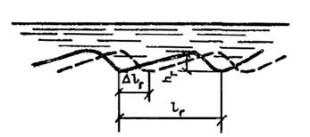
Рис. 7. Песчаные гряды (микроформы) в последовательные
отрезки времени
hг - высота гряды; lг - длина гряды; Dlг -
смещение гряды за время Dt
Высота микроформ (гряд) установившегося профиля (рис. 7) может определяться по формуле
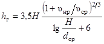
, (1)
где
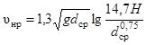
, (2)
или
при Н>1 м по формуле
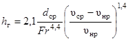
, (3)
где
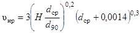
. (4)
При отсутствии входящих в приведенные зависимости
данных высота гряд может быть приближенно оценена соотношением:
при H < 1 м hг = 0,25H; (5)
при H > 1 м hг = 0,2 + 0,1H. (6)
Ориентировочно максимальную высоту гряд h'г в
половодье можно определять по формуле
h'г = 2,5hг (7)
где
hг - высота гряд в межень, измеренная перед половодьем или
спустя месяц после него.
2.19. Длина
гряд установившегося профиля может определяться по формуле
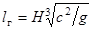
(8)
или
для приближенных расчетов по формуле
lг = 4,2H. (9)
В условиях половодья максимальная длина гряд может
быть рассчитана по приближенной зависимости
l'г = 2,5lг, (10)
где
lг - длина гряд в межень, измеренная до половодья или
спустя месяц после него.
2.20. Скорость
смещения микроформ, м/с, следует определять по формуле
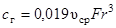
, (11)
а
период смещения - по зависимости
tг = lг/сг, (12)
где
lг и сг
- рассчитываются по формулам (8), (9) и (11).
2.21. Расход
донных наносов в объемном выражении qдн, м2/c, рассчитывается по формуле
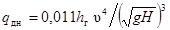
. (13)
2.22. При
отсутствии подробных и разновременных топографических съемок русла высоту hлг и длину lлг ленточных гряд на данном
участке реки можно определять по приближенным соотношениям:
hлг = 0,2Hпл; (14)
lлг = (4 -
8)Вбр, (15)
где
Hпл -
глубина в плесе (между грядами) при уровне воды в пойменных бровках.
2.23.
Скорость движения ленточной гряды при расходе воды, соответствующем уровню
пойменных бровок, м/с, определяют по формуле
слг = lлгqдн/Fгр, (16)
где
Fгр -
площадь продольного сечения гряды, равная
Fгр = aлгhлгlлг, (17)
где
aлг = 0,6 -
коэффициент формы гряды; qдн -
удельный расход донных наносов, равный
qдн = 0,00453(uср/uнр)dср(uср - uнр)(Н/dср)0,33. (18)
При определении удельного расхода донных наносов по формуле (13), когда известна высота
микроформ hг,
скорость движения ленточной гряды определяется по формуле
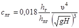
, (19)
а
период смещения - по зависимости
tлг = lлг/слг. (20)
2.24. Высота
и длина побочня определяются по формуле
hпб = 0,3Нпл, (21)
а
при наличии сведений о расходах воды -
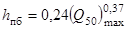
, (22)
где
(Q50)max - максимальный расход 50 % обеспеченности, м3/с;
lпб = 0,02/IНпл, (23)
где
I - средний уклон потока на участке большого протяжения
(8-10 мезоформ) или
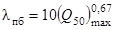
. (24)
Скорость и период смещения побочня могут определяться
по формулам (16), (19), (20).
Величину глубинных деформаций Dzдн следует рассчитывать по приближенной формуле
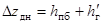
, (25)
где
h'г и hпб -
находятся по формулам (7), (21) или (22).
2.25. Для
определения глубинных деформаций при наличии разновременных съемок выбирается
съемка, соответствующая максимальной водности, и на некоторой длине участка
реки разбивается ряд поперечников. Профили по каждому поперечному створу
совмещаются на одном графике (рис. 8).
Огибающая профилей ограничивает область максимальных глубинных деформаций.
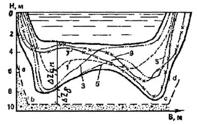
Рис. 8. Деформации русла при побочневом типе руслового
процесса
1, 3, 5, 7, 9
-совмещенные поперечные профили, снимаемые с плана (рис. 4);
а, b, с, d- предельный контур размыва
Величина глубинных деформаций на любом расстоянии от
берега определяется с учетом высоты микроформ по формуле
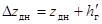
, (26)
где
zдн -
величина колебания отметок дна на любом расстоянии от берега.
При особо ответственных водозаборах и при разнородном
составе донных отложений в формулу (26)
следует вводить запас DZб, равный разности отметок нижней огибающей границы
совмещенных профилей и верхней огибающей границы базального слоя.
2.26. При
побочневом типе руслового процесса ширина береговой полосы, периодически
разрушаемой и восстанавливаемой при движении побочней, определяется по
приближенной формуле
DВбр = 0,1Вбр, (27)
где
Вбр - ширина русла в бровках.
При наличии разновременных съемок за величину DВбр следует принимать ее максимальное значение,
определяемое по совмещенным планам русла.
2.27. Для
всех разновидностей меандрирования, кроме ограниченного, следует оценивать
глубинные деформации и перемещения русла в плане.
2.28. При
ограниченном меандрировании глубинные деформации в зависимости от исходного
материала могут определяться несколькими способами.
При наличии материалов разновременных съемок -
аналогично изложенному выше. При этом поперечные профили должны проходить через
русло и через пойменный массив и наноситься нормально к линии, проходящей по
середине пояса меандрирования. Совмещаться на одном графике профили должны по
вертикальной оси, соответствующей середине пояса меандрирования.
Величина глубинных деформаций русла должна
определяться по формуле (26).
При полном отсутствии материала следует использовать
реки-аналоги. Аналог должен быть подобен изучаемому участку реки по следующим
признакам: типу руслового процесса, степени развитости излучины, уклону дна
долины, ширине меженного русла и пояса руслоформирования, расходу воды и
продолжительности среднемноголетнего половодья, крупности донных отложений. На
участке аналога должны отсутствовать искусственные условия, ограничивающие
свободное развитие данного типа русла.
Расчет плановых деформаций русла при ограниченном
меандрировании сводится к определению скорости сползания излучин си
и времени переработки пойменного массива tпм в пределах пояса меандрирования.
Время tпм определяется по
формуле
tпм = lи/сн. (28)
2.29. При
свободном меандрировании глубинные деформации должны определяться следующим
образом:
прогноз отметок в любом поперечном створе по мере
развития излучины можно составить, используя глубины в аналогичных створах на
других излучинах рассматриваемого участка реки, находящихся в разных стадиях
развития;
сезонные деформации дна русла должны определяться на
основе совмещения как продольных, так и поперечных профилей, измеренных в
половодье и в межень;
при наличии в плесах и на перекатных участках излучины
ленточных гряд глубинные деформации должны определяться с их учетом;
на участках перекатов и пляжа излучины в расчет общей
величины глубинных деформаций должна включаться высота гряд в половодье,
определяемая по формуле (7);
при отсутствии необходимых данных следует
воспользоваться материалами по реке-аналогу.
2.30.
Прогноз плановых деформаций у вогнутых берегов свободно меандрирующего русла
может производиться за период Т лет и при наличии разновременных съемок
определяется по формуле
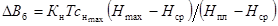
, (29)
где
Кн - коэффициент, учитывающий изменение скорости
плановых деформаций излучины в зависимости от стадии ее развития и определяемый
в функции от угла ворота aразв по
данным табл. 1.
Таблица 1
|
aразв
|
50
|
100
|
120
|
140-160
|
180
|
200
|
250
|
|
Кн
|
0,1
|
0,5
|
0,8
|
1
|
0,8
|
0,5
|
0,1
|
-
наибольшая в пределах данной излучины скорость смещения бровки вогнутого
берега, м/год; Нmax, Нпл - наибольшие глубины
русла в расчетном створе и в пределах всей излучины; Нср -
средняя глубина на гребнях двух смежных перекатов, ограничивающих излучину и
расположенных в местах перегиба средней линии излучины (см рис. 9).
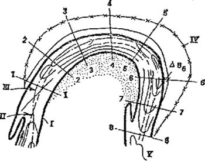
Рис. 9. Плановые деформации при свободном
меандрировании
I -
существующая береговая линия; II - осевая линия; III - линия
наибольших глубин; IV - расчетное положение подмываемого берега; V - изобаты; 1-8
- расчетные поперечные профили
При пользовании формулой
(29) расчетные интервалы времени не следует принимать больше пяти лет, а
общее время прогноза - больше 20 лет.
При отсутствии разновременных съемок следует
приближенно принимать, что среднее плановое смещение бровки вогнутого берега
излучин в год составляет 5 % ширины русла между пойменными бровками.
2.31. При
незавершенном меандрировании русловые деформации должны рассчитываться для основного
русла и для спрямляющего протока.
Расчет планового смещения бровки вогнутого берега
основного русла до момента перехода в спрямляющий проток большей части расхода
воды должен производиться по формуле
(29);
спрямляющий проток на ранней стадии формирования имеет
слабокриволинейное русло побочневого типа, и его деформации должны учитываться
в соответствии с вышеприведенными указаниями;
после перехода в спрямляющий проток большей части
расхода воды основного русла плановое смещение береговой линии протока за Т
лет определяют по формуле
DВб = 0,2Тсбр, (30)
где
сбр - скорость смещения бровки вогнутого берега излучины
основного русла.
2.32. Анализ
и прогноз условий работы водозаборов требует учета структурных особенностей
течения и прежде всего распределения осредненных скоростей по глубине потока.
Для русловых потоков наиболее простой и результативной зависимостью на прямом
участке является степенная зависимость
u = uср(1 + К)hk, (31)
где
и и ucp
- местная переменная и средняя по глубине скорости течения; h = z/H - относительная глубина потока; К - параметр
скоростей на вертикали
K = uп/uср - 1, (32)
где
uп -
максимальная поверхностная скорость.
Величина этого параметра для равномерных речных
потоков находится обычно в пределах 0,1<К<0,22.
2.33. Для
неравномерных течений, относящихся к выходу потока из плеса на перекат, из
подвалья на гребень песчаной гряды, а также из ямы размыва за полузапрудой на
равное дно, теоретические пределы изменения параметра К. составляют от 0
до 1 (рис. 10), а практически изменяются
в пределах 0,3-0,9.
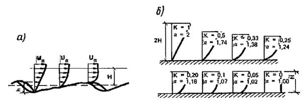
Рис. 10. Изменение гидравлических параметров потока
вдоль гряды
а - изменение
эпюры скоростей;
б - изменение параметров К, коэффициента Кориолиса a и глубин потока
Вместе с параметром К изменяется эпюра
скоростей от близкой к треугольной в плесе и в яме размыва до близкой к
прямоугольной на выходе из плеса на перекат. Вместе со значением К в
неравномерных потоках изменяются также глубины Нг.
Нг = (1 + К)q/uп, (33)
где
q - удельный
расход, uп -
поверхностная скорость. Последняя в русловых потоках с переменным дном обычно
изменяется незначительно. При К = 0 и прямоугольной эпюре скоростей
глубина воды оказывается равной
Нг = q/uп. (34)
При К = 1 и треугольной эпюре скоростей глубина
потока составит
Нг = 2q/uп. (35)
Дополнительно в расчетах размеров русла может быть
найден модульный коэффициент М, зависящий от типа руслового процесса
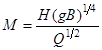
. (36)
При свободном меандрировании М = 1,2-1,3, при
побочневом типе руслового процесса М = 0,9-1, при осередковом типе М
= 0,5.
2.34. Ниже
приводится пример расчета глубин потока на участке р. Пинега у с. Холм, имеющей
небольшую извилистость в плане. По водности и размерам она характеризуется
данными, приведенными в гр. 1-3 табл. 2.
Таблица 2
|
Отметка свободной поверхности, м
|
Ширина по урезу, м
|
Расход воды, м/с
|
Средняя глубина
|
|
полученная с профиля
|
вычисленная по (36)
|
|
1
|
2
|
3
|
4
|
5
|
|
12,6
|
535
|
110
|
0,8
|
1
|
|
13,2
|
550
|
281
|
1,35
|
1,56
|
|
14,6
|
580
|
733
|
2,7
|
2,5
|
|
15,6
|
580
|
1580
|
3,8
|
3,7
|
|
16,6
|
585
|
2660
|
4,8
|
4,7
|
|
17,6
|
590
|
3990
|
5,8
|
5,8
|
Средняя отметка, дна переката составляет 11,8 м,
средние глубины при различных расходах воды приведены в гр. 4, средние глубины,
вычисленные по формуле (36),
приведены в гр. 5.
Принимая, что изменение скоростей соответствует формуле (36) с коэффициентом К
= 0,33 для расчетных глубин в плесе и на перекате, получим значения 1,33Н
и 0,67Н. В частности, при отметке уровня 17,6 и средней глубине, равной
5,8 м для экстремальных глубин, получим значение
Нmin = 1,33 × 5,8 = 7,7 м (с отм. 9,9 м);
Нmax = 0,67 × 5,8 = 3,9 м (с отм. 13,7 м).
Приведенные на рис.
11 линии I и II, отвечающие этим отметкам, показывают, что экстремальные
глубины у берегов в наиболее глубоких местах проходят ниже и выше этих линий.
При дополнительном учете кривизны потока в плане с радиусом кривизны r
необходимо модульный коэффициент М увеличивать пропорционально отношению
В/r. В данном
случае при В/r = 0,33 корректирующий коэффициент может быть принят
равным 1,25. С его учетом экстремальные глубины с отметками 8 и 14,5 близко
отвечают поперечным профилям русла (линии IV и III).
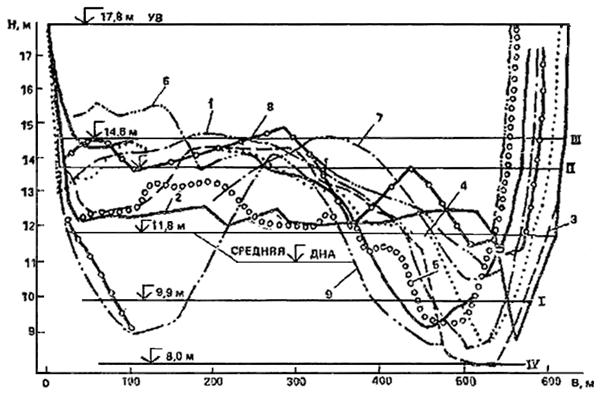
Рис. 11. К расчету глубин речного неравномерного
потока
1-9 -
поперечные сечения русла в различных створах по его длине; I-IV -
линии расчетных глубин
2.35.
Несколько более сложными, но в естественных руслах очень часто повторяющимися
являются неплавноизменяющиеся течения, образующиеся у коротких морфологических
форм, таких, как побочни, осередки, пляжи.
Большая распространенность подобных русловых форм и неплавноизменяющихся течений в естественных водотоках
свидетельствует об очень устойчивой и однообразной кинематике таких течений. Их
многочисленные экспериментальные и натурные исследования приводят к следующей
зависимости продольного изменения скоростей вдоль отдельных линий токов:
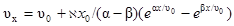
, (37)
где
u0 и ux - средние на данной вертикали скорости в начальном
(перед русловым образованием) и в расчетном створах; х и х0
- длина, отсчитываемая от начального створа, и характерная длина, равная 2/3
наибольшей ширины данного морфологического образования; - коэффициент, имеющий
размерность 1/с2 и определяемый в зависимости от времени прохождения
потоком расстояния по зависимости
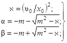
(38)
где
m - рассеивающий коэффициент неплавноизменяющегося
течения.
Коэффициент т в русловых потоках принимает
значения от 1,1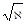
до 2 в зависимости от шероховатости русел, угла
сужения и раствора линий токов.
По формуле
(37) средние по сечению скорости от начального створа до створа с
наибольшей шириной морфологического образования (на рис. 15,а от створа I до створа II) увеличиваются, а затем
к его ухвостью (к створу III) уменьшаются. Расчетная ширина потока (при Н0
= const) в соответствии с преобразованным уравнением
неразрывности
Вх = В0 (u0/uх) (39)
сперва
уменьшается, а затем увеличивается, определяя собой плановые границы руслового
морфологического образования.
2.36.
Расчеты по формуле (37) можно
заменить графическим приемом (рис. 12),
используя график Du/Du0 = F(x/x0).
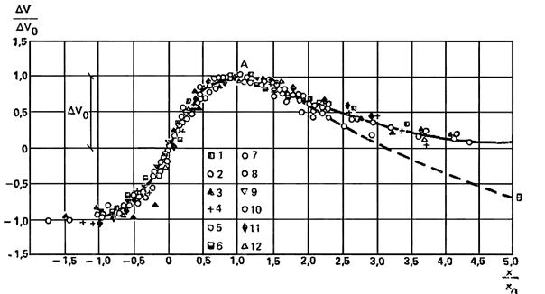
Рис. 12. Безразмерный график продольного изменения
добавочных скоростей в неплавноизменяющихся течениях
1-12 -
экспериментальные точки различных авторов
При заданном значении подходной скорости u0 и
относительного стеснения русла в плане (d/B)
оказываются известными исходные безразмерные значения х/x0 иDu/Du0, отложенные на осях абсцисс и ординат этого графика.
Снимая с него все остальные значения, можем находить скорость в любом створе
потока, а по (39) - и его ширину,
т.е. можем построить очертание руслового образования в плане.
Это очертание можно находить сокращенным по длине с
округленным головным участком, используя только верхние над линией 0-0 ординаты и сплошную линию, или полным, с
остроконечным участком, используя полные ординаты (над линией 1) и
пунктирную линию АВ.
2.37.
Получающиеся по зависимостям (38 и 39) прямоугольные поперечные сечения
потока во втором приближении уточняются по формуле
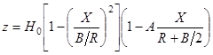
, (40)
где
Х и z - абсцисса и ордината профиля русла; Н0
и В - глубина и ширина русла; R - радиус кривизны крайней линии тока.
Для фиксированных створов у головы полузапруды и в
сжатом сечении значения R определяются по рис. 13 в зависимости от отношения d/B и от
рассеивающего множителя т.
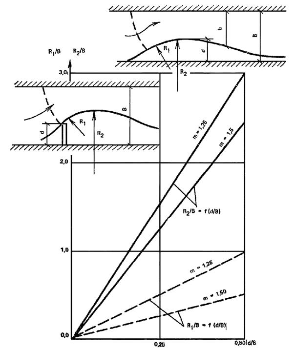
Рис. 13. Зависимость радиусов кривизны крайней линии
тока от относительной ширины d/B и от коэффициента рассеивания m
Применение расчетных формул (37) и (39)
предполагает известные из натурных съемок основные размеры морфологических
образований - их длину (или шаг повторения по длине русла) и максимальное
стеснение в плане. При отсутствии этих данных шаг повторения образований,
например побочней, находится по приближенной формуле
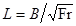
. (41)
Пределы применимости в зависимости от типа руслового
процесса указаны на рис. 14.
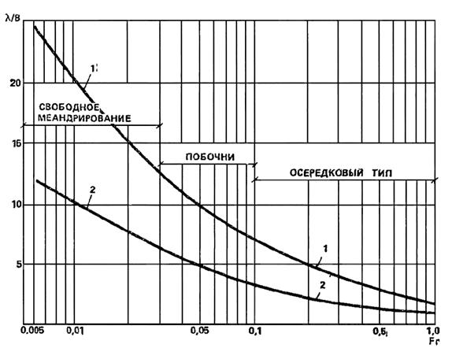
Рис. 14. Пределы изменения относительной длины
макроформ в зависимости от числа Фруда потока и возможной раздвоенности потока
внутренними морфологическими образованиями (осередками)
1 - при
компактном потоке; 2 - при наличии одного ряда осередков
Стеснение русла d/B принимается то, которое
преобладает на данном участке реки, например в пределах 1/4 - 1/3 ширины потока
в бровках русла.
2.38. На рис. 15 приводится пример расчета плановых
очертаний речного побочня с округленным и
остроконечным головным участком, а также поперечных сечений русла. Исходные
данные для расчета: ширина реки 40 м, средняя глубина на участке 1 м. Подходная
скорость течения 0,66 м/с. Размеры побочня в плане вычислены по формулам (37)
и (39). Поперечные сечения вычислены по формуле (40).
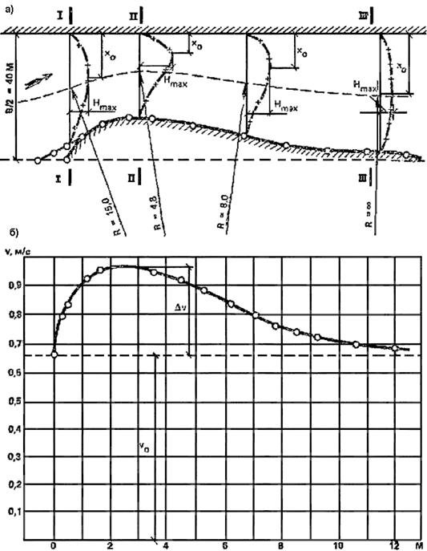
Рис. 15. К расчету планового очертания побочня и
поперечных сечений русла
а - план
побочня; б - расчетный график изменения осредненных скоростей,
вычисленных по уравнению (37); х0
- абсцисса максимальной глубины
2.39. Поток
на изгибе русла представляет собой сложное трехмерное течение, значительно
различающееся в жестком и в размываемом русле. В жестком русле благодаря
неравномерности распределения
центробежных сил по глубине потока, пропорциональных квадрату местной скорости,
возникает поперечная циркуляция. Поверхностные линии токов, направляясь к
вогнутому берегу, имеют меньшую кривизну, чем кривизна поворота русла. Донные,
более крутые, линии токов, направленные к выпуклому берегу, совместно с
поверхностными создают винтовое течение.
В зависимости от средней скорости и радиуса кривизны
формируется перекос свободной поверхности с разностью уровней у берегов
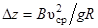
. (42)
2.40. В
излучинах рек необходимо учитывать эффект отрыва течения от выпуклого берега,
способствующего выпадению в зонах отрыва влекомых наносов и образованию здесь
побочной и пляжей. Возникновение отрыва в прямых руслах искривляет поток и
способствует возникновению побочневого типа руслового процесса (рис. 16).
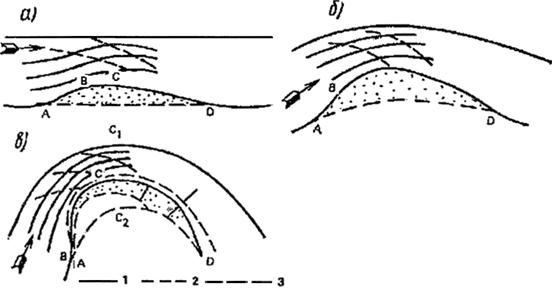
Рис. 16. Постепенное искривление руслового потока в
плане, начиная со схемы обтекания побочня (a) и
заканчивая течением на излучине с отрывом от выпуклого берега (б), (в);
1, 2 - поверхностные
и донные линии токов; 3 - первоначальная ширина русла
Использование допущения о линейности изменения
градиентов гидромеханического давления и уклонов свободной поверхности вдоль искривленных
в плане линий токов позволяет теоретически описать поток на закруглении реки с
отрывом от выпуклого берега (рис. 17).
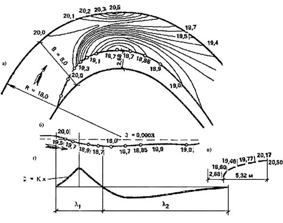
Рис. 17. Пример расчета плана течений и гипсометрии
потока на закруглении
а - план; б,
в - продольный и поперечный разрезы; г - уклоны свободной
поверхности у вогнутого берега
2.41. При
обильных наносах поток на повороте имеет другую структуру, существенно
отличающуюся от поворота вокруг оси. Выходя на поворот донные наносы движутся
поступательно, формируя большую ленточную гряду, стабилизируя прямолинейную ось
потока и заполняя собой основное сечение потока на повороте русла. Свободной от
этих наносов остается только та часть области поворота, где основной поток воды
после набегания на вогнутый берег опускается на дно и, следуя вдоль подвалия
гряды, создает донное винтовое течение, вдоль гребня образованной песчаной
гряды (рис. 18). По этой гидравлической
схеме формируется большинство потоков на повороте естественных русел, и неучет
возможности почти полного занесения наносами всей области поворота с
остановлением в качестве «живого сечения» только небольшой затененной части у
вогнутого берега приводит иногда к тяжелым последствиям при эксплуатации
размещаемых на повороте водозаборов. Примером такого неудачного осуществления
проекта водозабора является крупная насосная станция на р. Оби в районе г.
Барнаула, питающаяся в настоящее время из узкой затонской части реки,
искусственно поддерживаемой землечерпанием.
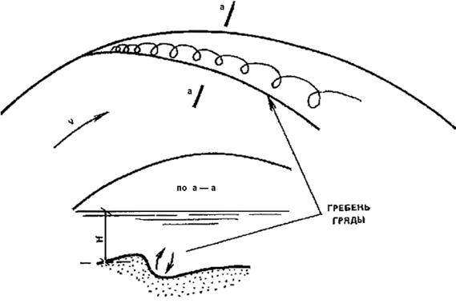
Рис. 18. Структура руслового потока на повороте русла
при обильных донных наносах
2.42. У
многих инженерных сооружений (у полузапруд и дамб ковша) наблюдается
гидравлическая схема стеснения потока в плане. По А. С. Образовскому она
связана с образованием остановившейся волны перемещения, которая разграничивает
зону подпора (влево от сечения I-I, рис. 19),
зону наибольшего сжатия (в пределах сечения III-III)
и разделяющую их зону (в районе сечения II-II), дающую представление о невозмущенном,
но стесненном потоке со скоростью u0 в створе II-II.
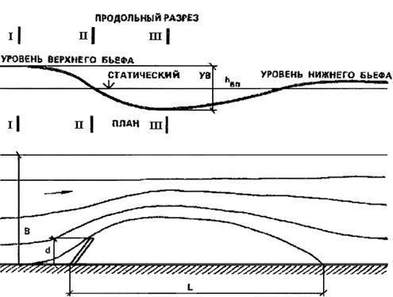
Рис. 19. Остановившаяся волна перемещения (вп) по А.
С. Образовскому
Отвечающие зонам подпора и сжатия средние по вертикали
скорости uп, uс принимаются
равными:
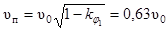
; (43)
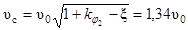
; (44)
где
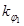
= 0,6,
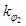
=
0,95, x = 0,15.
Скорость u0 в сечении II-II связана с бытовой скоростью uа (в
пределах стеснения В) выражением
u0 = ua n/(n - 1), (45)
где
n = B/d характеризует
отношение величины прибрежного стеснения участка реки шириной B
к выступающей преграде d.
В расчетах при большой ширине реки значение п
принимается равным (5-6) в жестком и (3-4) в размываемом русле. Считается, что
за этими пределами влияние стесняющего потока сооружения и остановившейся волны
мало и им можно пренебречь.
2.43. Длина
спада волны, равная длине ограниченного им водоворота (по Образовскому)
принимается равной (5-6)d. По Рахманову - длина водоворота зависит от глубины
потока и от шероховатости русла. На рис. 20
приводятся графики зависимости L/d
= f (В/Н) при различных коэффициентах Шези С.
Согласно опытным данным и теоретическим решениям, длина спада волны перемещения
(длина водоворота) зависит от числа Фруда. Для отношения n
= 4, Fr = 10-3-10-4, В/Н = 10
(жесткое гладкое русло)
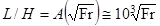
. (46)
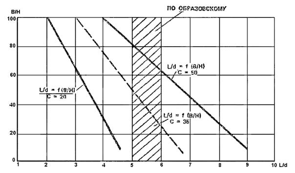
Рис 20. Относительная длина волны перемещения L/d
в зависимости от относительной ширины русла В/Н и коэффициента Шези С
2.44.
Скорость возвратного течения в контурах водоворота принимается в пределах
uоб = (0,15 - 0,35) uс, (47)
а
в центре водоворота она принимает нулевое значение.
2.45. Высота
остановившейся волны для гладкого русла принимается по Образовскому равной
двойному скоростному напору
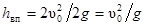
. (48)
По теоретическому решению она дополнительно зависит от
рассеивания энергии при неплавноизменяющемся течении
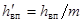
, (49)
где
m - коэффициент
рассеивания в уравнении неплавноизменяющегося движения жидкости. При
относительно гладком русле с коэффициентом Шези С = 50 и m
= 1; при шероховатом русле при С = 35 m = 1,2; при
С = 20 m = 1,3.
2.46.
Местные деформации речного дна у различных гидротехнических сооружений, у
затопленных речных водоприемников, у незатопленных насосных станций, у устоев и
бычков моста, у различных отклоняющих поток стенок имеют одну и ту же
особенность - размыв дна при подходе к ним и в створе оконечности стенок и
отложение вымытого грунта за сооружением. Повышенная размывающая способность
потока перед сооружением вызвана, во-первых, образованием местного подпора
уровня воды, трансформирующимся в винтовое, часто нестационарное, течение,
во-вторых, тем, что донные токи винта всегда относят наносы в сторону от
основного направления течения и тем самым создают условия для местного углубления
дна. Как известно, в русловом потоке соблюдается принцип замещаемости вымытых и
унесенных потоком твердых частиц поступающими наносами с верхних створов. При
одном и том же количестве тех и других деформаций русла не происходит. Если же
поступление наносов с верхних створов уменьшается или поступающие наносы
удаляются винтовым течением в сторону, то возникают благоприятные условия для
понижения дна, в частности для местного размыва у сооружений.
Поэтому экспериментаторы и проектировщики при желании иметь
местные углубления русла стремятся найти такие очертания основных сооружений
или устроить перед ними открылки, буны или системы из последовательно
расположенных низких и высоких стенок, чтобы, создавая местный подпор уровня, с
наибольшим эффектом отклонить донные течения в сторону. Когда этого местного
углубления оказывается недостаточно по протяженности, прибегают к устройству
повторных открылков. Те и другие используют имеющуюся кинетическую энергию
потока. Если при небольшой скорости течения кинетическая энергия потока
недостаточна, прибегают к искусственному ее увеличению, подавая воду для
промыва через систему уложенных по дну труб с внешними изогнутыми насадками.
2.47. Одним
из эффективных способов создания местного углубления является устройство
затопленных V-образных порогов.
Течение за порогом приобретает сложный
пространственно-винтовой характер с элементами нестационарности. Подходя к V-образному
порогу, поток претерпевает заметное изменение. Его поверхностные линии тока
изгибаются в сторону порога, а глубинные линии тока, проходящие на уровне его
гребня, подходят к косому порогу почти нормально. Этим поток приобретает
начальную закрутку, которая за порогом заметно усиливается и приобретает
характер винтового движения. Его донные линии тока устремляются вбок, в сторону
оконечности порога, вымывая частицы грунта из района осевой линии MN
и переоткладывая их в сторону, в образующуюся за порогом продольную косу (рис. 21).
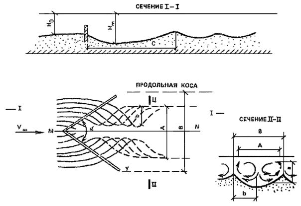
Рис. 21. Общий вид линий токов у затопленной V-образной
преграды
Генерируемый донным порогом винт имеет поперечные
составляющие скоростей (по Потапову), равные:
u = um sin (py/b) cos (pz/а); (50)
w = wm cos (py/b)
sin (pz/а), (51)
где
а и b -
поперечные размеры винта.
Максимальные значения um и wm близки к четверти продольной составляющей скорости на
подходе к порогу u¥.
Из теории винтовых течений известно, что наибольшую
интенсивность они приобретают в том случае, когда их поперечные размеры (высота
а и ширина b) равны между собой, т.е. когда их внешние образующие
вписываются в сечение, имеющее форму квадрата.
Из приведенного в табл.
3 соотношения между а и b в зависимости от угла a видно, что a = (60-75°).
Таблица 3
|
a
|
В = 2 b
|
h = a
|
Отношение
|
Примечание
|
|
B/d
|
b/а
|
|
45
|
3,1
|
1
|
1,55
|
|
Среднее отношение b/а = 1,1
|
|
60
|
3,9
|
1
|
1,95
|
|
75
|
4,4
|
0,9
|
2,2
|
|
90
|
5
|
1
|
2,5
|
|
120
|
6,1
|
1
|
3,05
|
1,52
|
|
Приведенными данными по интенсивности винтов
определяется высота выступа порогов над дном, обычно принимаемая равной 1/3
глубины воды при среднем многолетнем минимальном уровне в реке.
2.48.
Проведенные во ВНИИ ВОДГЕО опыты (1985 г.) по назначению оптимального
центрального угла при его изменении от 45° до 120° показали:
ширина ямы размыва коррелирует с раствором
центрального угла и длиной порогов L и составляет
B
= 2,4L sin a/2; (52)
глубина ямы размыва hm
при всех углах остается одинаковой и составляет l,5h0;
длина ямы размыва в пределах от порога до бытовой
глубины русла равна:
C
= 2,5b cos a/2. (53)
2.49.
Нестационарность течения за V-образным порогом заметно усиливает его
размывающую способность и часто определяет его геометрические соотношения. По
периодическим взмывным течениям, достигающим свободной поверхности, можно
судить о повторяющихся срывах потока с гребня донного порога и о частоте этих
срывов. Можно предположить, что эти срывы сопровождаются мгновенными сжатиями
потока в вертикальной плоскости с образованием в сжатом сечении повышенных
скоростей uс. Если
принять, как обычно, эпюру скоростей подходного равномерного потока
изменяющейся по вертикали по степенному закону (31), то на уровне гребня потока получим скорость,
меньшую поверхностной и даже меньшую средней по глубине uср. Однако
при обтекании порога и возникновении за ним процесса нестационарного
гидравлического сжатия мгновенная скорость увеличивается и может даже приблизиться
к поверхностной скорости uп. Их
соотношение определяется высотой возвышающегося над дном порога и в каждом
случае может находиться аналитически.
2.50.
Деформации дна V-образным порогом имеют ограниченную длину, часто
недостаточную для обеспечения фронта размыва у водоприемников большой
протяженности. В этом случае прибегают к установке струенаправляющих открылков
(рис. 22).
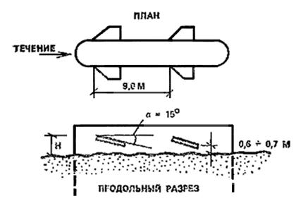
Рис. 22. Схема установки наносозащитных открылков на
водоприемнике
Струенаправляющие открылки представляют собой
трапецеидальные щиты размером 1,5´4 м,
установленные по обеим сторонам водоприемника под углом 15° к горизонтальной
плоскости. Удаление донных наносов от водоприемного фронта достигается за счет
появления за ними индуцированных скоростей, направленных у дна в сторону от
боковой грани водоприемника. Экспериментально установлено, что при транзитных
скоростях потока более 1 м/с струенаправляющие открылки позволяют создать
устойчивую промоину вдоль водоприемного фронта, удаляя наносы в сторону от
водоприемных окон на расстояние большее, чем ширина открылков.
При длине водоприемника до 12-15 м рекомендуется
устанавливать только два передних открылка, расположенных на расстоянии 3 м от
лобовой грани водоприемника. Открылки устанавливаются по обоим бортам даже в
случае одностороннего водоотбора. При длине водоприемника от 15 до 30 м
необходимо устанавливать вторую пару открылков (см. рис. 22). Задняя кромка открылка располагается на уровне
нижней границы окон на расстоянии 0,5-0,8 м от дна.
С целью защиты от подмыва дно вокруг водоприемника на
расстоянии не менее 2 м от его бортов закрепляется щебнем крупностью не менее 100-150
мм.
2.51.
Боковой отвод воды является одним из самых распространенных прикладных
фрагментов в системах водозабора и в настоящее время считается относительно
изученным. В то же время он включает в себя сложные элементы, такие, как
поворот части потока, отрыв от обтекаемого внутреннего угла, неплавная
изменяемость течения в отводе с резким нарушением гидростатического
распределения давления по сечениям, значительное изменение свободной
поверхности, возникновение в процессе отвода поперечной циркуляции.
Каждый из перечисленных элементов течения может
являться самостоятельным предметом изучения, все же вместе они создают сложный
пространственный поток, требующий при практическом использовании ряда
упрощений. К ним относятся иногда применяющееся отождествление течения в отводе
со входом воды на водослив с широким порогом, неучет условий неплавной
изменяемости потока и изменения кривизны свободной поверхности одновременно в
плане и в профиле, отождествление поступления наносов в отвод с величиной
захвата донных струй из основного русла, неучет элементов возникающего
винтового течения. При такой стилизации потока многие особенности течения на
входе в отвод не учитываются.
В настоящее время установлено, что захват боковым
отводом донных наносов связан не столько с общим поворотом потока в отвод,
сколько с отрывом его от входного угла и образованием за ним области с
пониженной свободной поверхностью и дефицитом давления. Изучение последнего
требует применения методов, разработанных для неплавноизменяющихся течений и
прежде всего определения их основных размеров.
2.52. При
боковом отводе воды происходит отрыв потока в самом отводе и в основном русле
ниже отвода (рис. 23). Несмотря на
различие внешних причин отрыва (обтекание входной кромки в первом случае и
внезапный отъем жидкости во втором) оба отрыва имеют общую черту: возмущение
гидродинамических факторов турбулентного потока. К ним относятся
гидродинамические давления, в частности изменение значений 1/r дР/дх,
имеющих размерность ускорения в м/с2, и неплавное (в гидравлическом
понимании) изменение уклонов дz/дs свободной поверхности, в частности значений gi, также имеющих размерность в
м/с2. Опускание и подъем свободной
поверхности будем, следуя А. С. Образовскому, считать как проявление
остановившейся волны перемещения. При этом прохождение через эту остановившуюся
волну потока жидкости может рассматриваться как возмущение свободной
поверхности, имеющее длину волны l1, период 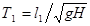
и частоту , где - скорость
распространения волны на мелководье.
Рис. 23. Боковой отвод воды с образованием зон отрыва в
отводе и в основном русле
Возмущение гидромеханического давления может рассматриваться
как обычное низкочастотное возмущение турбулентного состояния потока, имеющее
длину волны l2, период и частоту, где  - скорость
распространения крупномасштабных турбулентных образований в открытом потоке,
близкая к средней скорости потока uср. Значение l2 принимается равным b12pH.
- скорость
распространения крупномасштабных турбулентных образований в открытом потоке,
близкая к средней скорости потока uср. Значение l2 принимается равным b12pH.
Из равенства указанных частот получим выражение для
относительной длины волны перемещения, l0/H в зоне отрыва, вычисленное при b1 = 0,37,
. (54)
В табл. 4
приведено сравнение расчетных а опытных, значений l/Н в отрывном течении за входной кромкой отвода.
Таблица 4
|
|
|
Отношение l0/Н
|
|
по расчету
|
по опытным данным
|
|
0,1
|
10
|
24
|
23,9
|
|
0,15
|
6,67
|
16,01
|
15,8
|
|
0,2
|
5
|
12
|
10,2
|
|
0,4
|
2,5
|
6
|
6,2
|
|
0,6
|
1,67
|
4,01
|
4,15
|
|
0,8
|
1,25
|
3
|
3,75
|
Принятая динамическая схема взаимодействия возмущений
от двух динамических, факторов может быть использована и для определения
максимального поперечного размера отрыва G из
уравнения
(55)
в
зависимости от глубины Н, где h1 близко к 0,45, и из уравнения
(56)
в
зависимости от ширины В, где h2 = 0,05.
В табл. 5
приведено сравнение расчетных и опытных значений (55) в отрывном течении в створе наибольшего сжатия
потока.
Таблица 5
|
|
|
Отношение (G/Н)max
|
|
по расчету
|
по опытным данным
|
|
0,12
|
8,4
|
3,8
|
4,08
|
|
0,2
|
5
|
2,25
|
2,05
|
|
0,3
|
3,3
|
1,5
|
1,41
|
|
0,4
|
2,5
|
1,1
|
1,18
|
|
0,7
|
1,42
|
0,65
|
0,7
|
2.53.
Рассмотрение потока в отводе как изменяющегося в плане плоского
неплавноизменяющегося течения допускает расчет его по уравнениям (37), (39) и построение по точкам внешней границы,
совпадающей с очертанием водоворота.
При этом начало отсчета координаты х и ширины
потока b принимается в точке 0 низового входного угла в отвод,
в котором имеет место исходная начальная скорость u0. По мере сжатия потока эта скорость увеличивается на
величину u1, а затем на
такое же значение уменьшается. В створе максимального значения скорости ширина
потока минимальна. Глубина в отводе Н0 считается заданной и в
первом приближении принимается средней по сечению с уточнением после построения
гипсометрии свободной поверхности потока. Значение коэффициента Кb определяется расходами воды в отводе и характеристиками транзитного
потока - скоростью и сжатым сечением, назначаемыми на основании вышеприведенных
расчетов.
2.54. В табл. 6
приводится пример расчета отрыва потока применительно к следующим исходным
данным. Ширина отвода b0 0,7 м, глубина 0,11 м; расход воды в отводе Q
= 0,172 м3/с; коэффициент = 0,44. Скорость в начале отвода u0 = 0,225
м/с; коэффициент водозабора Kв = 0,31,
расстояние x0 = 0,3 м.
При этих данных ширина максимального отрыва получена равной 0,283 м, что
составляет 40,4 % полной ширины потока.
Таблица 6
|
№ п.п.
|
x
|
S x
|
u
|
u0 + u
|
Значения b, м
|
|
по расчету
|
по опыту
|
|
1
|
0
|
0
|
0
|
0
|
0
|
0
|
|
2
|
0,024
|
0,024
|
0,012
|
0,237
|
0,08
|
0,1
|
|
3
|
0,05
|
0,074
|
0,023
|
0,248
|
0,136
|
0,145
|
|
4
|
0,077
|
0,151
|
0,032
|
0,257
|
0,173
|
0,185
|
|
5
|
0,106
|
0,267
|
0,264
|
0,262
|
0,202
|
0,19
|
|
6
|
0,166
|
0,423
|
0,051
|
0,276
|
0,241
|
0,23
|
|
7
|
0,288
|
0,711
|
0,063
|
0,288
|
0,277
|
0,26
|
|
8
|
0,435
|
1,146
|
0,065
|
0,29
|
0,283
|
0,275
|
|
9
|
0,723
|
1,869
|
0,061
|
0,289
|
0,155
|
-
|
|
10
|
0,837
|
2,706
|
0,054
|
0,279
|
0,136
|
-
|
|
11
|
1,375
|
4,051
|
0,044
|
0,269
|
0,115
|
-
|
2.55.
Приведенный в п. 2.54 расчет и построение
плоского транзитного неплавноизменяющегося потока в отводе не отражают
наблюдающийся в опытах пространственный характер течения. Его можно получить,
если дополнительно наложить на полученный поток винтовое течение с поперечными
составляющими скоростей, определяемыми по зависимостям (50) и (51).
В них а и b - высота винтового течения, равная глубине потока, и
ширина, равная b0, ux -
продольная составляющая скорость потока. В данном случае ей отвечает переменная
по длине скорость неплавноизменяющегося течения, равная по предыдущему u0 + ux.
Неизвестными в уравнениях (50) и (51)
являются максимальные составляющие скоростей um и wm,
в том числе в начальном створе потока. В каждом отдельном случае они
определяются характером рассматриваемого течения. В данном случае они
максимальны в начальном створе, далее по длине потока уменьшаются по
гиперболической закономерности.
На рис. 23
приводится построение поверхностных (пунктир) и донных линий токов, выполненное
в предположении, что значение um в начальном створе равно 0,3 u0.
2.56. Для
учета двойной кривизны в плане и в профиле свободной поверхности потока в зоне
отвода применяется система уравнений Высоцкого, позволяющая при ряде
обоснованных упрощений охватить все пространственное течение в целом. Она
позволяет рассчитать гипсометрию свободной поверхности, выявляя превышение
уровня воды над статической плоскостью в зоне отвода и попутно кривизу линий
токов в каждой точке потока.
Разность уровней на концах поперечника при небольшой
его длине можно приближенно оценивать по уравнению
, (57)
в
которое входят радиусы кривизны: в плане R и в
профиле r и скорость потока ux. Оба радиуса можно находить аналитически раздельно в
плане и профиле, рассматривая движение как неплавноизменяющееся с применением
графической зависимости (см. рис. 13).
Пример расчета
Исходные данные: скорость потока u0 = 0,5
м/с, ширина отвода b0 = 0,7 м;
глубина H0 = 0,11
м; =
2,011/с2.
Определив по графикам рис.
13 минимальный радиус кривизны, отвечающий крайней линии тока застойной
зоны равным R = 0,3 м, по известной зависимости
(58)
находим
другие радиусы кривизны через промежутки Dy, в нашем случае равные:
,
где
п - число участков.
Радиусы кривизны в плане и профиле равны:
R1 = 0,3 м; R2 = 0,58 м; R3 = 1,34 м; R4 = 16,38 м; r1 =3,9 м; r2 = 5,8 м; r3 = 13,4 м; r4 = 163,8 м.
Затем по зависимости (57) определяем значения Dz для каждого створа
Dz1 = 0,0052 м.
Dz2 = 0,0035м; Dz3 = 0,0015 м; Dz4 = 0,00012 м.
Просуммировав значения перепадов по всему створу,
получим SDzi
= 0,0103 м.
2.57.
Величина захвата поверхностных и донных струй из основного русла при заданной
интенсивности поперечной циркуляции (при поперечных составляющих скоростей um и wm
в зависимости от исходной скорости потока, например при um = 0,3 u0)
находится графоаналитическим построением линий токов (рис. 24).
Рис. 24. К построению поверхностной и донной линий
токов до отвода
Для предварительной оценки ширины захвата донных и
поверхностных струй можно пользоваться формулами Образовского и Шаумяна:
Sд = (1,65Kв
+ 0,04)B; (59)
Sп = 1,15(Kв + 0,35)B. (60)
где
В - ширина основного русла; Кв - отношение
расходов воды в отводе и основном русле.
2.58.
Надежность забора воды водозаборными сооружениями, как свидетельствует опыт их
эксплуатации, определяется в первую очередь совокупностью топографических,
геологических, гидрологических,
гидроморфологических, гидротермических и других факторов и процессов или
местных условий избранного участка водотока.
2.59.
Взаимодействие упомянутых факторов и процессов способствует неодновременности,
неоднородности и нестационарности русловых процессов - образования ледостава,
распределения наносов, шугольда, мусора и молоди рыб по глубине и по длине
водотока.
2.60.
Местные условия избранного участка водотока могут изменяться вследствие:
последующей деформации ложа и берегов водотока или его
меандрирования;
неоправданного или необоснованного размещения и
компоновки конструктивных элементов водозабора в зоне затопления;
изъятия или свала в водоток твердого стока в процессе
дноуглубительных работ;
строительства прочих инженерных сооружений (мостовых
переходов, портов, лесотоварных бирж и т.д.) в значительной удаленности от
створа водозабора;
сброса в водоток более теплой или загрязненной воды на
вышерасположенном участке, а также других факторов.
2.61.
Условия забора воды из водотоков определяются в зависимости от устойчивости
ложа и берегов или русловых процессов, шуголедовых режимов, засоренности
источника и других показателей, приведенных в табл.
7.
Таблица 7
|
Условия забора воды
|
Условия забора воды из водотоков
|
|
мутность, устойчивость берегов и ложа
|
шуга и лед
|
другие факторы
|
|
Легкие
|
Мутность
£ 500 мг/л. Ложе и берега устойчивые
|
Отсутствие
внутриводного ледообразования. Ледостав толщиной 0,8 м умеренной мощности,
устойчивый
|
Отсутствие
обрастателей, водорослей, малое количество загрязнений и сора
|
|
Средние
|
Мутность
£ 1500 мг/л (средние за паводок). Русло и берега
устойчивые с сезонными деформациями ±0,3 м
|
Наличие
внутриводного ледообразования, прекращающегося с установлением ледостава
обычно без шугозаполнения русла и образования шугозажоров. Ледостав
устойчивый мощностью 1,2 м, формирующийся с полыньями
|
Наличие
сора, водорослей, обрастателей и загрязнений в количествах, не вызывающих
помехи в работе водозабора. Лесосплав молевой и плотами. Судоходство
|
|
Тяжелые
|
Мутность
£ 5000 мг/л. Русло подвижное с переформированием
берегов и ложа, вызывающим изменение отметок до 1-2 м
|
Неоднократно
формирующийся ледяной покров с шугоходами и шугозаполнением русла при
ледоставе до 60-70 % сечения водотока. В отдельные годы с образованием
шугозажоров в предледоставные периоды и ледяных заторов весной. Участки
нижнего бьефа ГЭС в зоне неустойчивого ледяного покрова
|
То
же, но в количествах, затрудняющих работу водозабора и сооружений водопровода
|
|
Очень тяжелые
|
Мутность
>
5000 мг/л. Русло неустойчивое, систематически или случайно изменяющее свою
форму. Наличие или вероятность оползневых явлений
|
Формирование
ледяного покрова только при шугозажорах, вызывающих подпор; транзит шуги под
ледяным покровом в течение большей части зимы. Возможность наледей и
перемерзания русла. Ледоход с заторами и большими навалами льда на берега
|
То же
|
Примечание. Общая характеристика условий забора воды
определяется по наиболее тяжелому виду затруднений.
3. Условия
забора воды из водоемов
3.1.
Водоемам, особенно водохранилищам, в отличие от водотоков свойственны следующие
особенности:
своеобразное колебание уровня воды в течение суток,
сезона и года, часто изменяющееся в пределах нескольких метров;
периодическое наличие волнения на поверхности воды;
сложное сочетание стоковых с ветроволновыми,
вдольбереговыми, компенсационными, градиентными и другими течениями,
возбуждаемыми волнением;
своеобразная динамика прибрежных зон,
характеризующаяся интенсивной переработкой берега и прибрежного склона на одних
участках и аккумуляцией продуктов этой переработки на других;
вдольбереговая и поперечная миграция наносов, обусловленная
местными особенностями избранного участка водоема;
возможность интенсивного заиления избранного участка
водоема, особенно в устьях водотоков, бухтах или заливах, примыкающих к берегам
и прибрежным склонам, сложенных из несвязных грунтов;
нестационарное качество воды по мутности, температуре,
минерализации, содержанию планктона, мусора, кислорода и др.;
появление в прибрежных зонах интенсивных
сосредоточенных вдольбереговых, градиентных, инерционных и других течений,
транспортирующих массы воды с большим содержанием наносов, планктона, мусора;
местное переохлаждение воды в предледоставные периоды;
возможность перемещения вдольбереговыми течениями на
значительные расстояния повышенных концентраций сточных вод с выше- и
нижерасположенных участков водоема;
нестационарное по времени направление и величины
скоростей стоковых, а также других разновидностей течений, возбуждаемых ветром
и волнением;
наличие стратификации воды, обусловленной
непостоянством по глубине температур, солености и мутности;
возможность образования над водоприемником вихревого
водоворота-воронки, способствующего интенсивному захвату в него поверхностных
слоев воды;
чрезмерно повышенное содержание в воде, на отдельных
участках наветренного берега планктона, мусора и отмершей водной
растительности;
более интенсивное развитие биообрастателей (дрейсены,
мидии и др.);
возможность интенсивного зарастания водоема
растительностью на участках прибрежных склонов на озерах и водохранилищах, укрытых от волн высотой h
³ 0,75 м, а также морей на глубине до 11 м независимо
от параметров волн;
периодические сгонные и нагонные явления или спад и
подъем уровня воды, величины которых определяются местными топографическими,
метеорологическими и гидрологическими особенностями избранного участка водоема.
3.2.
Гидрологические, гидроморфологические, гидротермические, гидробиологические и
прочие процессы, развивающиеся в водоемах, существенно отличаются от
аналогичных процессов в условиях водотоков. В большинстве случаев они индивидуальны,
поскольку обусловлены в первую очередь местными топографическими,
метеорологическими, геологическими и другими особенностями избранного участка
водоема.
3.3. На
поверхности водоема от действия ветра образуется нерегулярное трехмерное
(ветровое) волнение.
Средние высоты , период , а также коэффициент
распределения Ki, волны в точке расчета на подходе к прибрежному
склону определяют по СНиП
2.06.04-82.*
3.4.
Ветровое волнение, образованное в пределах глубоководной или мелководной зон,
по мере перемещения на убывающих глубинах стабилизируется или перестраивается в
нерегулярное двухмерное волнение. Процесс перестроения сопровождается
относительным уменьшением высот и длин волн малой обеспеченности при
одновременном увеличении высот и длин волн большой обеспеченности.
3.5. Высоты
ветровых волн заданной обеспеченности в пределах плавно убывающих глубин 0,5lгл ³ Н ³ Нкр
прибрежного склона определяют по формуле
. (61)
При несложной конфигурации прибрежного склона в
зависимости от угла подхода луча волнения Kтр определяют по графику рис. 25, ключ 3, при этом Кр = 1.
Рис. 25. График для определения коэффициентов Kтр и Kl
Величину обобщенного коэффициента Kп в зависимости от
заложения прибрежного склона определяют по графику рис. 26, ключ 1.
Рис. 26. График для определения коэффициента Kп
3.6. При
волнообразовании в условиях ограниченных глубин среднюю высоту волны определяют по
графику рис. 25, ключ 1 и по
формуле
. (62)
3.7. Среднюю или заданной обеспеченности длину волны без
учета ее крутизны или высоты в условиях глубокой воды при известном периоде определяют по
формуле
или . (63)
3.8. Период и длину двухмерной волны заданной
обеспеченности по расчетным элементам в системе определяют с помощью графика (рис. 27).
Рис. 27. Функции распределения периодов и длин волн на
глубокой воде
3.9. Среднюю
или заданной обеспеченности длину волны с учетом ее высоты в условиях глубокой
воды определяют по формуле
, (64)
где
.
3.10. В
условиях ограниченной глубины Нкр £ Н £ 0,5li
среднюю или заданной обеспеченности длину волны в зависимости от пологости
прибрежного склона определяют по графику рис.
28, ключ 2.
Рис 28. График взаимосвязи
a
- ; 1
- песчаный склон; 2 - гравийный m = 5-20; 3
- гравийный m = 30-50; б - графики для определения
предельных высот волн на заданной глубине и критических глубин Hкр; в - график для
определения коэффициента Кm
3.11. Высоту
волны заданной обеспеченности к моменту разрушения определяют по графику рис. 28, а, ключ 1.
3.12. Предельно возможную высоту волны hпр на заданной глубине Н
и периоде ti в зависимости от заложения прибрежного склона определяют по параметру графика рис. 28, б, ключ 1.
3.13. Критическую глубину Нкр, на которой
начинается разрушение волны заданной обеспеченности на склонах с m ³ 5, определяют
с помощью графика рис. 28, б.
При этом в зависимости от пологости склона в соответствии с пп. 3.7 и 3.8
определяют высоты волн в трех-четырех точках в месте ожидаемого начала ее
разрушения. Полученные результаты
накладывают на график рис. 28, б,
ключ 2 и осредняют кривой. По точке пересечения этой кривой с кривой, характеризующей
пологость склона, определяют величину (ключ 3). С этой величиной входят в
график (рис. 28, а, ключ 1)
и определяют местное увеличение высоты волны к моменту разрушения hкр:hгл. С полученной величиной входят в
график (рис. 28, б, ключ 4)
и определяют искомую величину .
3.14. На
прибрежных склонах с т > 17 волны открытого водоема по мере
перемещения к берегу могут иметь несколько последовательных разрушений (рис. 29). После прекращения первого
разрушения появляются новые волны несколько меньшей высоты, которые на
некоторой глубине Hкр(2)
вновь разрушаются и т.д. Количество и интенсивность последовательных разрушений
волн зависят от заложения прибрежного склона на подходе к месту разрушения.
Рис. 29. Общая схема трансформации волн hт = 302 м, = 4 с на
прибрежном склоне с m = 30, течений, возбуждаемых ветром и волнением,
направления перемещения полувзвешенных наносов
1 -
направление и величины скоростей ветроволнового и компенсационного течений при
ветре W = 20 м/с (фронтальный подход); 2 - то же
ветроволнового течения при косом подходе a = 45°; 3 - эпюры скоростей волнового течения в месте начала
разрушения волн, рассчитанные по формуле
(77); 4 - то же компенсационного течения, по формуле (78); 5 - положение среднего
гидростатического уровня при волнении; 6 - траектории полувзвешенных
наносов; 7 - траектории орбитального движения жидкости
3.15. Расчет
высот волн заданной обеспеченности с начала их первого разрушения на прибрежных
склонах выполняется по характеристикам двухмерных нерегулярных волн,
эквивалентных исходным трехмерным волнам в условиях глубокой воды.
Высоту эквивалентной волны заданной обеспеченности в
условиях глубокой воды определяют с помощью графика (см. рис. 28, б, ключ 4) в соответствии с пп. 3.12 или 3.13 по найденной величине и формуле
(65)
3.16. Высоты
волн заданной обеспеченности, образованные после прекращения первого и
последующих разрушений, определяют по формулам
h1(i%) = Kmhгл(i%); h2(i%)
= Kmh(1)гл(i%) и т. д. (66)
При постоянном уклоне прибрежного склона
,
где
h1(i%); h2(i%) и т. д. -
высоты волн заданной обеспеченности, образованные после прекращения первого,
второго и последующих разрушений волн той же обеспеченности; hгл(2)(i%); hгл(3)(i%) и т. д. - высоты волн заданной обеспеченности,
образованные после прекращения первого и последующих разрушений и приведенные с
помощью графика (см. рис. 25, ключ 1)
и формулы (62) к условиям глубокой
воды.
3.17.
Величину коэффициента Km и количество последовательных разрушений определяют с
помощью графика (см. рис. 28, в,
ключ 1).
3.18.
Глубину воды в месте прекращения первого и последующих (за исключением
последнего) разрушений волн заданной обеспеченности определяют по формуле
, (67)
где
n = 1, 2, 3 и т. д. - порядковый номер критических
глубин и высот волн заданной обеспеченности; b -
коэффициент уклона волновой поверхности в процессе разрушения волн, величину
которого определяют по формуле
b = 0,033m + 0,74. (68)
3.19. На
прибрежных склонах с m ³ 10
глубину воды под ложбиной в месте начала разрушения волны определяют по формуле
. (69)
3.20. Высоты
волн заданной обеспеченности в процессе одного или последнего разрушения на
прибрежном склоне определяют по формуле
hn(i%) = hкр(n)i% H/Hкр(n)i%. (70)
3.21.
Средние высоты ветровых волн к моменту первого разрушения `hкр имеют обычно 15-20 %-ную
обеспеченность.
3.22.
Превышение гребня двухмерной волны hгр над средним гидродинамическим уровнем воды
определяется по графику (рис. 30).
Рис 30. График вертикальной асимметрии профиля волны
Для трехмерных волн (на подходе к первому разрушению)
полученные величины hгр/h
могут увеличиваться до 10 %.
3.23.
Горизонтальную асимметрию Kl = lгр/lл или
отношение длины гребня двухмерной волны к длине ложбины по среднему
гидродинамическому уровню воды в точке расчета в зависимости от заложения
прибрежного склона для волн 15-20 % обеспеченности в первом приближении можно
определить по графику (рис. 31, ключ 1).
Рис. 31. График для определения коэффициентов Кl или длин гребня lгр волн с lгл : hгл = 10
3.24.
Глубину понижения уровня воды в месте начала разрушения волн определяют по
формуле
. (71)
3.25. Высоту
подъема уровня или волнового нагона (см. рис.
29) над гидродинамическим уровнем воды при одном разрушении волн на склонах
m £ 17 определяют
по формуле
, (72)
где
-
коэффициент, зависящий от заложения прибрежного склона, величину которого
определяют по графику (рис. 32, ключ 1),
для ветровых воли hкр
принимают 15 % обеспеченности.
Рис. 32. График для определения коэффициентов и
При многократном разрушении волн высоту подъема уровня
после каждого последующего разрушения определяют по формуле
и т. д. (73)
3.26. Высоту
волны на урезе воды hу по
среднему ветроволновому нагонному уровню определяют по графику (рис. 33, ключ 1).
Рис.
33. График для определения высот волн на урезе с учетом нагонного уровня воды
3.27. Высоту
наката волн над суммарным ветроволновым нагоном на склонах m ³ 5 определяют по формуле
, (74)
где
Kш - определяют по СНиП
2.06.04-82*; - коэффициент, зависящий от
пологости склона, величину которого определяют по графику (см. рис. 32, ключ 2).
3.28.
Требуется рассчитать трансформацию элементов ветровых волн 1 %- и 15 %-ной
обеспеченности при угле подхода главного луча a = 30° к
относительно прямолинейному прибрежному склону с m = 30.
Расчетная скорость ветра w = 25
м/с, средняя глубина воды H
= 12 м, конфигурация берегов водоема
сложная (рис. 34).
Рис. 34. График изменения высот волн 1 и 15 % обеспеченности
по примерам расчета и построения расчетной схемы волнения
Из точки расчета D0 (рис. 34)
проводят главный и вспомогательные лучи, с помощью которых по СНиП
2.06.04-82* определяют `h = 1,41 м и `t = 4,4б с. По рис. 1, Прил. 1 убеждаемся, что при Н
= 0,0615 средняя высота волны `h = `hгл. Там же
по графику (рис. 2) определяют или h1% = 1,41 × 2,2 = 3,1 м.
Высоты волн на относительно прямолинейном склоне в
точках расчета с глубинами H
= 7,5; 5 и 2,5 м определяют по формуле (61). Для первой точки H
= 7,5 м находят отношение и с графика (рис. 25, ключ 3) снимают Kтр = 0,95 и (см. рис.
26, ключ 1) Kп = 0,99,
при этом Kр = 1.
Подставляя найденные величины в формулу
(61), получаем h1% = 0,95 × 0,99 × 3,1 = 2,9 м. Аналогично
на глубинах H = 5 м h1% = 2,52 м; H = 2,5 м h1% = 2,14 м.
Критическую высоту и глубину к моменту первого
разрушения ветровых волн определяют с помощью построения кривой трансформации
высот волн на графике (см. рис. 28). Для
этого на график наносят точки с абсциссами , и и соответствующими ординатами , и (см. рис. 28, ключ 2). По точкам проводят
осредняющую кривую. Абсцисса Нкр: = 0,015 и ордината точки,
образованной пересечением построенной и характеризующей пологость склона
кривых, позволяют получить ожидаемые величины Нкр(1) = 2,94 м
и hкр(1) =
2,23 м.
Высоту двухмерной волны эквивалентной исходной
трехмерной определяют по графику рис. 25
абсциссой (ключ
3) через коэффициент трансформации и отношение h1%гл = 2,23 : 0,9=2,48 м.
По графику рис. 28, ключ 4
определяется первая критическая глубина Нкр(1) = 9,81 × 19,8 × 0,018 = 3,5 м.
Глубина воды под ложбиной по формуле
(69) =
0,8 × 3,5 = 2,8 м.
Высоту волны, образованной после прекращения первого
разрушения, определяют по формуле (66)
или h1%(1) = Kmhгл = 0,43 × 2,48= =1,07 м, где Km
определяют по графику (рис. 28, в,
ключ 1).
Глубину воды в месте прекращения первого разрушения
определяют по формуле (67),
подставляя в нее величины Km = 0,43 и b = 0,033 × 30 + 0,74 = 1,74.
Высоты волн к моменту разрушения при или l : hгл = 29,6
определяют по графику (см. рис. 28, ключ
/) hкр(2) = hкp : hгл = 1,18
или hкр(2) =
1,07 × 1,18 = 1,26 м.
Глубину воды, на которой начинается второе разрушение
волны ординатой = l,26 : 9,81 × 4,462 = 0,00632, определяют через абсциссу
Hкр : = 0,0082 или Hкр = 0,0082 × 9,81 × 4,462 = 1,62 м по графику
рис. 28, ключ 4.
Высоты волн в процессе последнего разрушения на склоне
определяют по формуле (70) , по которой
на глубине H = 1,5 м - = l,16 м; Н =
1 - =
0,77 и и //=0,5- h =0,39 м. Результаты выполненных расчетов
представлены на графике (см. рис. 34).
Аналогичные расчеты могут быть выполнены и для волн
другой обеспеченности по их высотам и длинам. Расчет для волны 15 %-ной
обеспеченности представлен на рис. 34.
3.29.
Водоемам, в отличие от водотоков, свойственно многообразие течений не
стационарных во времени, по направлению, глубине и величинам скоростей.
3.30.
Течения в водоеме можно классифицировать по двум признакам - по происхождению и
по действующим силам.
Течения по происхождению подразделяют на первичные
и вторичные. К первичным, или исходным, относят обычно ветроволновое,
транзитное, стоковое и плотностное течения. Величины скоростей и наносотранспортирующая
способность транзитного, стокового и плотностного течений обычно незначительны.
3.31.
Основным исходным или первичным является ветроволновое течение. Его
интенсивность, зона действия на глубинах H ³ Hкр определяются скоростью
ветра и элементами волн, а также их углом подхода к прибрежному склону
избранного участка водоема.
3.32. При
фронтальном подходе ветра и волн к относительно прямолинейному прибрежному
склону в поверхностных слоях воды наблюдается ветроволновое, а при донных -
компенсационное течение обратного направления (см. рис. 29). При этом ветроволновое течение обычно находится
на глубинах Н £ 0,2 `l, а
компенсационное .
3.33.
Скорость ветроволнового течения на поверхности воды при ветре w £ 20 м/с можно
определить по формуле
u = 0,02w. (75)
3.34.
Распределение скоростей ветроволнового и компенсационного течений на избранной
вертикали с глубинами H ³ Hкр
рекомендуется рассчитывать по методике А. В. Караушева (см. рис. 29).
Переход поверхностных слоев воды в придонные или
ветроволнового течения в компенсационное происходит преимущественно в прибойных
зонах.
3.35. На
подходе к месту разрушения волн скорости ветроволнового и компенсационного
течений увеличиваются. К моменту разрушения волн скорость ветроволнового
течения в поверхностном слое u, м/с, приближается или равна
скорости их перемещения, величину которой можно определить по формуле
. (76)
3.36.
Распределение скоростей волнового течения по глубине в месте начала разрушения
волн, подходящих по нормали к берегу, при прохождении их гребней можно
определить по формуле
, (77)
где h = z/(Hкр + hкр);
z - глубина
воды, отсчитываемая от поверхности склона.
3.37. При
прохождении ложбин волн в месте начала их разрушения прослеживается
компенсационное течение, распределение скоростей которого можно определить по
формуле
, (78)
где
.
Величины и распределение скоростей волнового и
компенсационного течений по заданным элементам волн на подходе к месту начала
их разрушения приведены на рис. 29.
3.38. В
зонах разрушения волн или в прибойных зонах орбитальное движение частиц
жидкости отсутствует. При прохождении гребней воли массы воды на всю глубину
волновым течением смещаются в сторону луча волнения, а при прохождении ложбин -
компенсационным течением смещаются в обратном направлении.
3.39. На
пологих прибрежных склонах m ³ 17 после
прекращения первого и последующих разрушений волн восстанавливается орбитальное
перемещение частиц воды, ветроволное и компенсационное течения.
3.40.
Величину орбитальной придонной скорости на прибрежном склоне в зоне действия
неразрушающихся волн определяют по формуле
, (79),
где
n - коэффициент, принимаемый в зависимости от
относительной пологости волн на табл. 8.
Таблица 8
|
|
8
|
10
|
15
|
20
|
|
n
|
0,6
|
0,7
|
0,75
|
0,8
|
С учетом пологости прибрежного склона и критических
глубин величину придонной орбитальной скорости можно определить по графику (рис. 35).
Рис. 35. График для расчета придонных орбитальных
скоростей волн lгл : hгл = 10
3.41. В
большинстве случаев волны открытого водоема подходят под косым углом к
избранному участку берега или прибрежного склона. В этих случаях вследствие
отсутствия или слабого проявления волнового нагона компенсационные течения на
подходе к прибойным зонам обычно не прослеживаются. Пример расчета величин этих
скоростей см. на рис. 29.
3.42. В
прибойных зонах наряду с волновыми и компенсационными появляются вдольбереговые
течения. Вдольбереговое течение - это смещение масс воды прибойной зоны вдоль
берега. Оно возбуждается и поддерживается энергией разрушающихся волн или масс
воды, транспортируемых ветроволновым течением и сбрасываемых разрушающимися
гребнями в прибойные зоны.
Величину средней скорости вдольберегового течения при
одном разрушении волн определяют по формуле
, (80)
где
Sв -
обобщенный коэффициент, величину которого определяют по графику (рис. 36).
Рис. 36. График изменения коэффициента Sв
3.43. При
многократном разрушении волн средняя скорость вдольберегового течения в
пределах каждой последующей прибойной зоны определяют по формуле
, (81)
где
-
высоты волн 15 % обеспеченности к моменту данного разрушения и образованных
после его прекращения;
an - угол, образованный между лучом волнения и нормалью к склону к
моменту разрушения.
3.44.
Средняя скорость вдольберегового течения между первой и второй, второй и
третьей и последующими прибойными зонами определяется по формуле
, (82)
где
un и un-1 -
средние скорости вдольберегового течения в пределах предыдущей и последующей
прибойной зоны.
3.45. Ветроволновые
течения как при фронтальном, так и при косом подходе волн, транспортируют в
прибойные зоны массы воды с повышенным содержанием планктона, отмершей
растительности, мусора.
3.46. В
пределах прибойных зон вследствие резкого увеличения скоростей течений,
ослабления водообмена с открытой акваторией водоема и повышенной аэрации вода
дополнительно переохлаждается и увеличивает плотность или мутность за счет
частиц грунта, слагающих поверхность прибрежного склона.
3.47.
Повышенная плотность воды способствует появлению в придонном слое плотностного
течения, которое при фронтальном подходе волн совпадает по направлению с
компенсационным, усиливает последнее, образуя смешанное течение.
3.48. В
местах резкого изгиба берега или прибрежного склона вдольбереговое течение за счет инерционных сил и
повышенной плотности транспортируемых масс воды может выходить из пределов
прибойных зон в открытый водоем (рис. 37,
а, в).
Рис. 37. Схемы возможных картин течений в прибрежной
зоне водоема
1 -
направление луча волнения; 2 - вдольбереговое течение; 3 - инерционное
течение; 4 - плотностное течение; 5 - градиентное течение; 6 -
берег; 7 -изобаты
3.49. Направление
течения, вышедшего из зоны действия возбуждающих сил, названного инерционным,
зависит от топографических особенностей и
глубин воды на подходе к избранному участку водоема, плотности и исходных
скоростей течения, интенсивности, направления волнения и других факторов.
3.50. По
мере увеличения глубин воды и уменьшения скорости инерционного течения
преобладающее влияние на его перемещение оказывает плотность транспортируемых
масс воды. Инерционное течение преобразуется в плотностное, скорость и
направление которого определяются топографией водоема, плотностью потока и
другими факторами.
3.51. В
бухтах, заливах и в местах расположения инженерных сооружений, выступающих в
водоем, наряду с описанными разновидностями течений появляется градиентное
течение (см. рис. 37, б, г).
Оно возникает от перепада давления или уровня воды между прибойной зоной и
открытым водоемом. Этот перепад создается за счет скоростного напора
вдольберегового течения и волнового нагона.
3.52.
Направление перемещения и скорость градиентного течения зависят от топографии
прибрежного склона избранного участка водоема, скоростей и плотности масс воды,
транспортируемых вдольбереговыми течениями, интенсивности и направления
волнения и других факторов. При симметричном контуре прибрежных склонов и
подходе луча волн градиентное течение обычно направлено в открытый водоем вдоль
оси бухты или залива. При других условиях оно может занимать любое плановое
положение.
3.53. После
выхода из пределов прибойной зоны или действия возбуждающих сил градиентное
течение, как и вдольбереговое, преобразуется в инерционное, а затем в
плотностное.
3.54. В
зонах действия сосредоточенных течений, выходящих из пределов прибойных зон,
независимо от глубины водоема будет нарушаться температурная стратификация
воды; в придонных слоях может наблюдаться повышенное содержание планктона,
водной растительности, взвеси, интенсивная аккумуляция наносов, а в предледоставные
периоды - местное переохлаждение воды и образование донного шугольда.
3.55.
Миграция наносов на прибрежных склонах вследствие многообразия и
нестационарности действующих факторов обусловлена различными условиями:
топографическими, гидрологическими, геологическими и др.
Поэтому при расчетах мутности воды, миграции наносов,
переработки берегов и прибрежных склонов в месте намечаемого размещения
водозаборных сооружений по рекомендуемым ниже методикам необходимы инженерные
изыскания, позволяющие вносить в них соответствующие коррективы.
3.56.
Частицы грунта, слагающие берега и прибрежные склоны, в зависимости от их
крупности, величин орбитальных скоростей и интенсивности течений могут
находиться во взвешенном, полувзвешенном, влекомом и неподвижном состояниях.
3.57.
Состояние частиц грунта на поверхности прибрежного склона определяется
следующими факторами:
их средней крупностью, связностью и заложением
прибрежного склона;
величинами и направлением (по отношению к орбитальным)
скоростей течений, возбуждаемых волнением, в прибрежной зоне.
3.58.
Механизм перемещения наносов зависит от их состояния, крупности, угла подхода
луча волнения к прибрежному склону, величин скоростей течений, орбитального
движения жидкости и ряда других факторов.
Наносы, находящиеся во взвешенном состоянии,
независимо от направления и интенсивности волнения, глубин воды и других
факторов транспортируются той или иной разновидностью течения.
3.59. При
подходе луча волнения по нормали к прибойной зоне относительно прямолинейного
прибрежного склона взвешенные наносы транспортируются преимущественно
компенсационными, а затем плотностными течениями в придонном слое в сторону
открытого водоема.
Вследствие предельного увеличения придонных
орбитальных скоростей, а также волновых и компенсационных течений наиболее
интенсивное повышение мутности происходит в зоне разрушения волн (рис. 38).
Рис. 38. Схема изменения мутности на прибрежном
склоне, высоты и длины дамб, ограждающих подводящий канал водозабора
1 и 2 -
мутность воды при высотах волн h » 0,9 и 1,6 м; 3 - длина и высота дамб, размещенных в пределах
прибойной зоны; 4 - длина дамб, ограждающих канал с выходом за пределы
прибойной зоны; 5 - то же, размещения в пределах этой зоны
Одновременно полувзвешенные и влекомые наносы
вследствие асимметрии профиля волн или орбитальных скоростей на подходе к
прибойным зонам перемещаются в сторону берега (см. рис. 29). В зонах разрушения из-за наличия интенсивного
компенсационного течения в придонном слое эти наносы перемешиваются в обратном
направлении. Такой механизм перемещения полувзвешенных и влекомых наносов
способствует образованию подводных валов в условиях стационарных уровней и
элементов волн, а также удержанию наиболее крупных частиц грунта в приурезовой
зоне водоема (см. рис. 38).
3.60. При
косом подходе волн к пологому прибрежному склону вся упомянутая разновидность
наносов из-за совпадения направления их перемещения с ветроволновым течением
более интенсивно перемещается к месту разрушения волн.
В месте разрушения эти наносы вдольбереговыми
течениями перемещаются вдоль берега, а затем, в зависимости от местных условий,
градиентными, инерционными и плотностными течениями - в сторону открытого
водоема.
3.61. При
одинаковой крупности и связности частиц грунта на мутность воды в прибрежной
зоне, а вместе с ней и миграцию наносов большое влияние оказывают пологость
волн и прибрежного склона, интенсивность
их разрушения, относительная глубина - h/H и
другие факторы. С увеличением крутизны прибрежного склона, относительной глубины,
интенсивности разрушения и пологости волн мутность и миграция наносов при одной
и той же их крупности увеличиваются (см. рис.
38).
3.62.
Состояние частиц несвязного грунта на пологом прибрежном склоне от действия
орбитальных придонных скоростей можно определить с помощью рис. 39.
Рис. 39. Начальные волновые скорости трогания и
перемещения частиц грунта на горизонтальном и слабонаклонном дне
1 - кривая
начальных скоростей трогания частиц грунта; 2 - кривая начальных
скоростей поверхностного сплошного перемещения грунта; 3 - кривая
скоростей массового перемещения верхнего слоя грунта
3.63. Среднюю
мутность воды от i-той фракции наносов, слагающих ложе водоема или
прибрежный склон в зонах действия неразрушающихся волн на избранной вертикали,
можно определить с помощью графика (рис. 40)
на глубине Н: , где ri -
содержание i-той фракции наносов (в долях единицы) в грунте ложа
или склона; a - коэффициент, зависящий от величины придонной
орбитальной скорости uд; w -
гидравлическая крупность фракции. Для наносов крупнее 0,01 мм a = 1. При более мелких наносах 0,35 м/с < uд < 0,5
м/с a = 1,5; при uд £ 0,35 м/с a = 2. В расчетах обычно учитывают не более трех наиболее характерных
фракций. Суммарная мутность воды для п фракций определяется по формуле
. (83)
Рис. 40. График для определения средней мутности на
вертикали
Гидравлическую крупность наносов определяют по табл. 9.
Таблица 9
|
Диаметр частиц, мм
|
Гидравлическая крупность частиц при различной
температуре воды, °С
|
|
5
|
10
|
15
|
20
|
|
0,01
|
0,0043
|
0,0049
|
0,0056
|
0,064
|
|
0,015
|
0,0099
|
0,0115
|
0,0132
|
0,0149
|
|
0,02
|
0,017
|
0,0198
|
0,0226
|
0,256
|
|
0,04
|
0,0705
|
0,082
|
0,093
|
0,106
|
|
0,06
|
0,159
|
0,184
|
0,212
|
0,239
|
|
0,08
|
0,282
|
0,324
|
0,377
|
0,424
|
|
0,1
|
0,441
|
0,512
|
0,588
|
0,663
|
|
0,12
|
0,635
|
0,737
|
0,847
|
0,956
|
|
0,15
|
0,99
|
1,13
|
1,325
|
1,49
|
|
0,2
|
1,545
|
1,711
|
1,876
|
2,042
|
|
0,4
|
3,785
|
3,95
|
4,116
|
4,292
|
|
0,6
|
6,025
|
6,191
|
6,356
|
6,522
|
|
0,8
|
8,265
|
8,431
|
8,596
|
8,762
|
|
1
|
10,505
|
10,671
|
10,836
|
11,002
|
|
1,2
|
12,745
|
12,911
|
13,076
|
13,242
|
|
1,5
|
16,105
|
16,221
|
16,436
|
16,602
|
|
2
|
19
|
19
|
19
|
19
|
3.64.
Мутность воды в пределах прибойных зон определяется в первую очередь
относительной глубиной h : H и интенсивностью разрушения волн (см. рис. 38). Для приурезовой зоны, прибрежный склон которой
сложен из мелкозернистых грунтов, она может находиться в пределах
. (84)
В зонах более раннего разрушения
, (85)
где
r0 -
средняя мутность воды на подходе к первому разрушению волн.
3.65.
Распределение мутности на вертикалях прибрежного склона, сложенного
преимущественно из мелкозернистых песков, можно определить с помощью табл. 10.
Таблица 10
|
z/H
|
0
|
0,2
|
0,4
|
0,6
|
0,7
|
0,8
|
0,9
|
0,95
|
|
|
0,54
|
0,56
|
0,68
|
0,9
|
1,13
|
1,43
|
1,97
|
2,52
|
3.66. Ввиду
многообразия факторов, определяющих интенсивность взмучивания воды в прибрежной
зоне, наиболее достоверные сведения о ней можно получить с помощью инженерных
изысканий. Для их обобщения и последующей экстраполяции можно построением
графиков (рис. 41) по замеренным
величинам `r на избранных вертикалях получить эпюры мутности воды по всей ширине
прибрежного склона (см. рис. 38) для
различной интенсивности волнения.
Рис. 41. График возможных изменений средней мутности
воды в зависимости от высот волн заложения прибрежного склона и средней
крупности грунта
1 - натура
бухты Тавахи m = 50 - 200, d = 0,15; 2
- Сахалин, гравийно-галечниковый склон m » 30; 3 - в
местах разрушения волн на склонах m > 50, d
= 0,25; 4 - осреднение величины по зарубежным данным; 5 -
Анапское побережье в зонах действия вновь образованных волн, d
= 0,25
3.67. Расход
наносов, транспортируемый той или иной разновидностью течения в пределах
прибрежной отмели или перед намечаемыми инженерными сооружениями, можно
определить по формуле
, (86)
где
F - площадь
живого сечения зоны действия течения.
3.68. Суммарный
вдольбереговой расход наносов вдоль прибрежного склона Q,
м3/c, ориентировочно можно определить по формуле
. (87)
3.69. Сток
наносов, м3, за время t, сут, приближенно можно
определить по формуле
. (88)
3.70.
Предельную ширину полосы ожидаемой переработки берега при заданном уровне воды
в первом приближении можно определить по формуле
Sп = H2/K + H/mn, (89)
где
Н - глубина размывающего воздействия волн определяется по графику (рис. 42).
Рис. 42. График для определения глубин размывающего
действия волн
K = 20mnm0/(mn -
m0), (90)
где
mn, m0 определяют по табл.
11.
Таблица 11
|
Вид грунта
|
Крупность частиц, мм
|
mn
|
m0
|
Показатель h/d
устойчивости
|
|
Песок:
|
|
|
|
|
|
пылеватый
|
0,01-0,1
|
0,005
|
0,001
|
100
|
|
мелкий
|
0,1-0,25
|
0,03
|
0,005
|
70
|
|
средний
|
0,25-0,5
|
0,07
|
0,01
|
70
|
|
крупный
|
0,5-1
|
0,14
|
0,02
|
70
|
|
Гравий:
|
|
|
|
|
|
мелкий
|
1-2
|
0,19
|
0,03
|
45
|
|
средний
|
2-5
|
0,21
|
0,05
|
45
|
|
крупный
|
5-10
|
0,25
|
0,08
|
25
|
|
Галечник:
|
|
|
|
|
|
мелкий
|
10-20
|
0,3
|
0,1
|
11
|
|
средний
|
20-50
|
0,36
|
0,15
|
6
|
|
крупный
|
50-100
|
0,4
|
0,2
|
4
|
3.71. Время,
в течение которого ожидается предельная переработка берега, можно определить по
формуле
Тп = 2Sп/umах, (91)
где
umax - максимальная
скорость переработки относительно прямолинейного берега, м/год, определяется по
формуле
; (92)
где
- определяется
по графику (рис. 43);
Рис. 43. График umax = f(h, hб) при высоте берега
hб < 2 м
1 - лесс; 2
- песок мелкозернистый; 3 - песок среднезернистый; 4 - суглинок;
5 - глина; 6 - песок крупнозернистый с валунами
К¢ - коэффициент, зависящий от высоты берега над расчетным
уровнем воды, определяют по табл. 12.
Таблица 12
|
Hб - высота берегов
|
< 2
|
2-5
|
5-10
|
10-15
|
|
К¢
|
1
|
0,8
|
0,6
|
0,4
|
3.72. Для
мысов максимальная скорость переработки берега обычно в 1,5-2 раза больше, чем
для относительно прямолинейного берега, или
Sп = (0,75-1) umaxТп. (93)
3.73.
Величину ожидаемой переработки берега за заданное число лет Т можно
определить по формуле
SТ = umaxТ (1-0,5Т/Тп). (94)
3.74.
Изложенная методика расчета не позволяет учесть всей совокупности местных
условий избранного участка водоема. Поэтому при решении ответственных задач
целесообразно изыскивать сведения по отступлению бровки берега на начальном этапе
заполнения водоема с последующей корректировкой расчетных формул или построения
графической взаимосвязи (рис. 44).
Рис. 44. График ожидаемой переработки берега
1 -
расчетный; 2 - по материалам изысканий
3.75.
Водоемам обычно свойственна температурная стратификация воды по глубине. Она
зависит от глубины и проточности водоема,
ветроволновой активности на его поверхности, климатических условий и других
факторов.
3.76.
Плотность воды r в зависимости от ее температуры определяется по табл. 13.
Таблица 13
|
t,
°С
|
r
|
t,
°С
|
r
|
t,
°С
|
r
|
t,
°С
|
r
|
|
0
|
0,99987
|
10
|
0,99975
|
25
|
0,99712
|
60
|
0,98338
|
|
3
|
0,99999
|
12
|
0,99955
|
30
|
0,99576
|
70
|
0,97794
|
|
4
|
1
|
14
|
0,9993
|
35
|
0,99413
|
80
|
0,97194
|
|
5
|
0,99999
|
16
|
0,999
|
40
|
0,99235
|
90
|
0,96556
|
|
6
|
0,99997
|
18
|
0,99865
|
45
|
0,99037
|
100
|
0,95865
|
|
8
|
0,99989
|
20
|
0,99826
|
50
|
0,98820
|
|
|
3.77. При
наличии волнения происходит нарушение температурной стратификации на глубину,
величина которой определяется по формуле
, (95)
где
Нс - толщина слоя ветрового перемешивания; t1 и t2 - температуры воды
поверхностного и придонного слоев; b - коэффициент
объемного расширения воды; `h - высота
ветровой волны; `с - фазовая
скорость волны.
Правую часть уравнения
(95), обозначенную через K0, можно получить с помощью рис. 45.
Рис. 45. График для определения глубины ветрового
перемещения в зависимости от температурной стратификации и параметров ветрового
волнения
В местах выхода сосредоточенных течений прибойной зоны
в открытый водоем температурная стратификация обычно нарушается на всю глубину
воды.
По мере ослабления ветра и волнения температурная
стратификация восстанавливается.
3.78. В
предледоставные периоды в прибрежных зонах вследствие слабого водообмена между
прибойной зоной и открытой акваторией водоема, интенсивной аэрацией потока и
других факторов происходит местное переохлаждение воды. При достижении нулевых
температур воды местное переохлаждение ее в прибойных зонах (рис. 46) в первом приближении следует определять по формуле
, (96)
где
Kp - коэффициент, учитывающий
дополнительную теплоотдачу при разрушении волн (при 5 £ w £ 20 м/с Kр » 0,5); Dl = l0 - l2 - разность между максимальной упругостью водяных паров
при температуре поверхности воды (l0 при t » 0°С равно 6,1 мб) и
абсолютной влажностью воздуха на высоте 2
м над поверхностью воды (Dl обычно
находится в пределах 2-4 мб); - температура воздуха на высоте 2
м; w2 - скорость ветра на высоте 2 м над поверхностью воды; f(Dt) -
функция, учитывающая увеличение интенсивности испарения при положительной
разности температур ветра-воздуха (табл. 14);
Sbкр - суммарная ширина зон
разрушения волн (см. рис. 46); Ср
- удельная теплоемкость воды.
Рис. 46. Схема для расчета местного переохлаждения
воды в прибойных зонах
Таблица 14
|
Dt, °С
|
0
|
1
|
2
|
3
|
5
|
7
|
10
|
|
t
(Dt)
|
0
|
0,15
|
0,3
|
0,43
|
0,66
|
0,85
|
1,09
|
3.79. В условиях водоемов одним из основных элементов
водозабора являются волнозащитные или берегозащитные сооружения.
Конструктивная схема и компоновка берегозащитных
сооружений определяется типом водозабора, ожидаемой переработкой берегов и
прибрежных склонов в месте его размещения, интенсивностью волнения, ледовых
нагрузок и рядом других факторов.
3.80. По
сложившейся традиции берегозащитные сооружения используются при любом типе
водозабора. При этом корни берегозащитных сооружений размещают за пределами
ожидаемой переработки берега, а головы или их лицевую грань обычно выводят за
пределы первого разрушения волн.
3.81. Вынос
или выход волнозащитных сооружений в процессе последующей переработки берега и
прибрежного склона за пределы прибойной зоны независимо от типа водозабора
способствует перехвату вдольбереговых течений и их выходу из пределов прибойной
зоны в открытый водоем.
3.82. После
выхода вдольберегового, а в некоторых случаях и градиентного течения из
пределов прибойной зоны их направление и скорость перемещения определяются
компоновкой и конструктивными элементами волнозащитных сооружений, направлением
и интенсивностью волнения и ветроволновых течений, пологостью прибрежного
склона, мутностью транспортируемых масс воды и рядом других факторов (см. рис. 37).
3.83. На
водозаборах с самотечными или сифонными водоводами и водоприемниками,
вынесенными в открытый водоем (рис. 47),
по мере переработки берега и прибрежного склона, независимо от других факторов,
интенсивность отклонения вдольбереговых, а затем и градиентных течений
волнозащитными сооружениями будет усиливаться. В предельном случае градиентные
течения могут выходить в сторону водоема по нормали к поверхности прибрежного
склона от места примыкания волнозащитных сооружений к берегу. Этими причинами
объясняется имеющее место на ряде водозаборов периодическое увеличение захвата
в водоприемники воды с повышенным содержанием продуктов переработки берегов,
планктона, водной растительности, появление шуголедовых помех в предледоставные
периоды и нарушение температурной стратификации в месте водоотбора.
Рис. 47. Схема возможной картины обтекания
вдольбереговыми и градиентными течениями берегозащитных сооружений водозабора с
самотечными или сифонными водоводами
1 - фронт
гребней волн; 2 - вдольбереговое течение; 3 - волнозащитные
сооружения; 4 - насосная станция; 5 - водоприемники; 6 - берег
3.84. На
водозаборах с береговыми водоприемниками (рис.
48), устраиваемых на устойчивых берегах и прибрежных склонах, при
размещении волнозащитных сооружений, не выходящих за пределы 2Нкр,
вдольбереговые течения обычно обтекают последние непосредственно в месте
водоотбора. В этих случаях, независимо от глубин в месте расположения
водоприемных устройств, в них будут преимущественно
захватываться массы воды, транспортируемые вдольбереговыми течениями в
прибойной зоне.
Рис. 48. Схема возможной картины обтекания
берегозащитных сооружений водозабора берегового типа
1 - фронт
волн; 2 - вдольбереговые течения; 3 - водоприемные окна
водозабора; 4 - насосная станция; 5 - берегозащитные сооружения; 6
- берег
3.85. На
водозаборах с подводящим каналом, огражденным волнозащитными дамбами (рис. 49), вдольбереговые и градиентные течения,
как и в ранее описанных случаях, при косом подходе волн обтекают упомянутые дамбы. В подводящий канал независимо
от длины дамб поступают преимущественно массы воды, транспортируемые
вдольбереговыми течениями в прибойных зонах.
Рис. 49. Схема возможной картины обтекания
вдольбереговыми и градиентными течениями дамб, ограждающих подводящий канал
1 -
ограждающие дамбы; 2 - фронт гребней волн; 3 - вдольбереговое
течение; 4 - насосная станция; 5 - берег
3.86. Почти
аналогичная картина обтекания дамб, ограждающих подводящий канал (рис. 50), наблюдается и при наличии
волнолома.
Рис. 50. Схема возможной картины обтекания
вдольбереговыми и градиентными течениями дамб и волнолома, ограждающих
подводящий канал
1 -
подводящий канал; 2 - ограждающие дамбы; 3 - волнолом; 4 -
фронт гребней волны; 5 - вдольбереговое течение; 6 - предельная
высота наката волн; 7 - насосная станция
3.87. В ряде
случаев, когда вдольбереговая миграция наносов незначительна и не ожидается
аккумуляция наносов между прилегающим прибрежным склоном и ограждающей
волнозащитной дамбой, искривлением ее голов (рис.
51) удается отклонить вдольбереговое и градиентное течения от входа в
подводящий канал.
Рис. 51. Схема возможной картины отклонения вдольбереговых
и градиентных течений ограждающими дамбами
1 -
ограждающие дамбы; 2 - фронт гребней волны; 3 - вдольбереговое
течение; 4 - насосная станция; 5 - берег
3.88. При
косом подходе волн размещение волнозащитных сооружений на глубинах больших Н
> Нкр, как показывают результаты лабораторных
исследований и практика эксплуатации водозаборов, приводит к местному нарушению бытового режима течений
и миграции наносов на избранном участке водоема. При этом с увеличением глубин
воды в месте размещения волнозащитных сооружений интенсивность аккумуляции
наносов на одних участках, а также переработка берега и прибрежного склона на
других возрастают.
3.89. Во
всех случаях наиболее обоснованным инженерным решением следует считать то, при
котором не нарушается или незначительно нарушается сооружениями бытовой режим
избранного участка водоема на период эксплуатации водозабора.
3.90. Эффективного отклонения вдольбереговых и градиентных
течений от места водоотбора инженерными сооружениями удается достичь только при
наличии резкого падения глубины в месте их расположения и незначительной
вдольбереговой миграции наносов.
3.91.
Надежность забора воды заданного расхода и качества определяется в первую
очередь местными условиями избранного участка водоема.
3.92.
Местные условия избранного участка водоема могут изменяться вследствие последующей переработки берегов и
прибрежных склонов, аккумуляции продуктов переработки, строительства инженерных
сооружений в пределах прибрежной зоны, усиления биологической активности и
других факторов.
3.93.
Основными факторами, определяющими условия отбора воды, как показано в пп. 3.79-3.90,
являются сосредоточенные течения, периодически появляющиеся в прибрежных зонах
водоема.
3.94.
Местные условия избранного участка водоема подразделяют на легкие, средние,
тяжелые и очень тяжелые.
Основные характеристики этих условий приведены в табл. 15.
4.
Сооружения для забора поверхностных вод
4.1.
Водозаборы из поверхностных источников различают по:
виду водоисточника - из водотоков (равнинных,
предгорных и горных рек и каналов), из водоемов (морей, озер, водохранилищ и
водохранилищ-охладителей);
назначению - хозяйственно-питьевые, промышленные,
ирригационные, теплоэнергетические и др.
категории обеспеченности подачи воды;
компоновке его основных элементов - совмещенные
(компонуются в одном сооружении) и раздельные (комплекс сооружений);
месту расположения водоприемника - береговые,
русловые, выносные (на водоемах);
типу или схеме водозабора - береговая насосная станция
с самотечными или сифонными водоводами и водоприемниками, вынесенными в
водоисточник (криб), с водопремным ковшом (ковшовые), с открытым или огражденным
подводящим каналом, фильтрующие, инфильтрационные, комбинированные и др.;
способу приема воды в водоприемник - с верхним,
боковым, нижним, лобовым и низовым приемом воды;
условиям приема воды в водоприемник - поверхностный,
глубинный или селективный (послойный) и донный;
положению водоприемника - незатопленный, временно
затопляемый и затопленный;
материалу, из которого изготовляются, водоприемники -
железобетонные, бетонные, металлические, деревянные и др.;
конструктивным особенностям водоприемника - с вихревой
камерой, щелевые, ряжевые, раструбные, трубчатые, зонтичные и др.;
степени воздействия на природные условия водоисточника
- активные и пассивные;
характеру подвижности - стационарные, плавучие и
фуникулерные;
сроку эксплуатации - постоянные и временные.
При необходимости увеличения глубин воды и
регулирования стока устраивают приплотинные водоприемники, которые могут быть
как в теле плотины, так и за пределами его.
4.2.
Водозаборы по обеспеченности подачи воды подразделяют на три категории (табл. 16).
Таблица 16
|
Категория водозаборов
|
Режим подачи воды
|
|
I
|
Допускается
снижение подачи воды на хозяйственно-питьевые нужды не более 30 % и на
производственные нужды до предела, устанавливаемого аварийным графиком;
длительность снижения подачи не свыше трех сут. Перерыв в подаче воды или
снижение подачи ниже указанного предела допускается на время выключения
поврежденных и включения резервных элементов, но не более чем на 10 мин.
|
|
II
|
Снижение
подачи воды допускается в тех же пределах, что и при I категории;
длительность снижения подачи не свыше 15 сут. Перерыв в подаче воды или
снижение подачи ниже указанного предела допускается на время выключения
поврежденных и включения резервных элементов или проведения ремонта, но не
более чем на 6 ч
|
|
III
|
Допускается
снижение подачи воды в тех же пределах, что и при I категории; длительность
снижения подачи не свыше 15 сут. Перерыв или снижение подачи ниже указанного
предела допускается на время проведения ремонта, но не более чем на 24 ч.
|
4.3. Класс
сооружений, устанавливаемый в зависимости от категории обеспеченности подачи
воды, можно определить по табл. 17.
Таблица 17
|
Категория водозабора
|
Класс сооружений, входящих в комплекс водозабора
|
|
основные
|
второстепенные
|
|
I
|
I
|
II
|
|
II
|
II
|
III
|
|
III
|
III
|
IV
|
Примечание.
К основным следует относить сооружения, при частичном разрушении которых
водозабор не обеспечит расчетную подачу воды потребителям (водоприемные
устройства, самотечные и сифонные водоводы, насосные станции); к второстепенным
- сооружения, частичное разрушение которых не приведет к снижению подачи воды
потребителям (запасные водоприемные устройства, ограждающие элементы
водоприемных ковшей, берегоукрепление и др.).
4.4. Класс
водоподъемных и водохранилищных плотин, входящих в состав водозаборного
гидроузла, следует принимать в соответствии со СНиП 1.02.07-87:
для водозаборов I категории - II класс
» » II » -
III »
» » III » -
IV »
4.5. Для
сооружений принимаются соответствующие коэффициенты надежности, учитываемые в
расчетах прочности, устойчивости и т. п. в зависимости от класса.
4.6.
Сооружения, входящие в комплекс водозабора, должны включаться в проект в
зависимости от производительности, категории обеспеченности подачи воды,
гидрологической характеристики водоисточника с учетом максимальных и
минимальных уровней воды (табл. 18), а
также требований органов санитарно-эпидемиологической службы по регулированию
использования и охраны вод, охраны рыбных запасов и водного транспорта;
Таблица 18
|
Категория водозаборов
|
Обеспеченность расчетных уровней воды в
поверхностных источниках, %
|
|
максимальных
|
минимальных
|
|
I
|
1
|
97
|
|
II
|
2
|
95
|
|
III
|
3
|
90
|
4.7. Схема
водозабора и тип водоприемных устройств принимаются в табл. 19 в зависимости от требуемой категории
обеспеченности подачи воды и сложности природных условий ее забора.
Таблица 19
|
Тип водоприемных устройств
|
Категория водозаборных сооружений при природных
условиях забора воды
|
|
легких
|
средних
|
тяжелых
|
|
Схема водозабора
|
|
а
|
б
|
в
|
а
|
б
|
в
|
а
|
б
|
в
|
|
1.
Береговые незатопляемые водоприемники с водоприемными отверстиями, всегда
доступными для обслуживания с необходимыми ограждающими и вспомогательными
сооружениями и устройствами
|
I
|
-
|
-
|
I
|
-
|
-
|
II
|
I
|
I
|
|
2.
Затопленные водоприемники всех типов, удаленные от берега, практически
недоступные в отдельные периоды года
|
I
|
-
|
-
|
II
|
I
|
-
|
III
|
II
|
I
|
|
3.
Нестационарные водоприемные устройства типа:
|
|
|
|
|
|
|
|
|
|
|
плавучего
|
II
|
I
|
-
|
III
|
III
|
II
|
-
|
-
|
-
|
|
фуникулерного
|
III
|
II
|
-
|
-
|
-
|
-
|
-
|
-
|
-
|
Примечания: 1. Таблица составлена для водозаборов,
устраиваемых по трем схемам: схема «а» - в одном створе; схема «б» - то же, но
при нескольких водоприемниках, снабженных средствами борьбы с шугой, наносами и
другими затруднениями забору воды; схема «в» - в двух створах, удаленных на
расстояние, исключающее возможность одновременного перерыва забора воды.
2. В водозаборных сооружениях I и II
категории следует предусматривать секционирование водоприемной части.
4.8.
Повышение категории водозабора с затопленными водоприемниками на единицу
допускается в случаях:
размещения водоприемников в затопляемом,
самопромывающемся водоприемном ковше;
изыскания мероприятий, исключающих проникновение
течений, выходящих из прибойной зоны водоема к месту расположения водоприемных
устройств;
подвода к водоприемным отверстиям теплой воды в
количестве не менее 20 % забираемого расхода и применения специальных
наносозащитных устройств;
обеспечения надежной системы обратной промывки
сороудерживающих решеток, рыбозаградительных устройств водоприемников и
самотечных водоводов.
4.9. Выбор
схемы и компоновки водозаборного сооружения в тяжелых и очень тяжелых местных
условиях следует принимать на основе лабораторных и натурных исследований.
4.10.
Использование пассивных водозаборных сооружений или таких компоновок и
конструктивных элементов, которые не нарушают или сводят до минимума нарушение
бытового режима водоисточника, в ряде случаев позволяет в тяжелых и даже очень
тяжелых условиях забора воды обеспечить их высокую категорию. Так при
интенсивной, переработке берегов, прибрежных склонов и вдольбереговых наносов
вынос насосной станции за пределы ожидаемой переработки (без устройства
берегозащиты) и размещение водоприемников вне зоны действия сосредоточенных
течений, выходящих из прибойных зон, позволяют обеспечить водозабор I
категории.
4.11. В свою
очередь использование активных водозаборных сооружений или таких компоновок и
конструктивных элементов (ковшей, порогов, шпор, дамб, открылков и др.),
которые позволяют улучшить местные условия забора воды (более ранний ледостав,
отброс от места водоотбора в водоисточник масс воды с повышенным содержанием
наносов, сора, шугольда и др.), дает возможность повысить их категорию.
4.12.
Конструкция водозабора должна:
обеспечивать забор из водоисточника расчетного расхода
воды и подачу его потребителю;
защищать систему водоснабжения от попадания в нее
сора, планктона, наносов, ракушки, шугольда и пр.;
обеспечивать защиту молоди рыб от гибели и
травмирования, пропуск проходных рыб к нерестилищам на водоисточниках рыбохозяйственного
назначения;
быть прочной, устойчивой и долговечной.
4.13.
Водоприемные устройства водозабора должны сохранять работоспособность в
условиях возникновения возможных осложнений, вызванных:
снижением глубин или расходов воды в водоисточнике;
образованием в потоке внутриводного льда и шуги,
шугозаполнением русла, а также транспортированием потоком наносов, сора,
карчей, топляков и т. п.;
судоходством, лесосплавом, регулированием стока на
ГЭС;
отбором воды для других целей;
захватом загрязнений водоема;
переформированием русла или побережья водоема;
волнением, вдольбереговыми перемещениями наносов,
нагоном сора и льда;
развитием ракушки, планктона, захватом водорослей;
развитием или деградацией границы вечномерзлых
грунтов, наледеобразованием, заторами, торошением и навалами льда.
4.14.
Входящие в комплекс сооружений водозабора насосные станции должны удовлетворять
требованиям разд. 7 СНиП 2.04.02-84.
4.15.
Эффективность работы водоприемных отверстий, оборудованных сороудерживающими
решетками, фильтрующими кассетами или рыбозащитными сетками, зависит от
скорости втекания воды в них, их расположения относительно направления течения
и поверхности уровня воды в водоисточнике, а также от наличия у отверстии
козырьков, порогов, ребер и других элементов.
4.16.
Наибольшее распространение получили водоприемники, водоприемные отверстия
которых расположены вертикально. Применяют также водоприемники с наклонно и
горизонтально расположенными отверстиями с поступлением воды сверху вниз и в
обратном направлении.
4.17. В
условиях мелководных зон водоемов при заборе через горизонтально расположенные
отверстия с поступлением воды сверху вниз бывает трудно избавляться от
появления воронок и вихрей, захвата переохлажденных в предледоставные периоды
или нагретых и засоренных планктоном поверхностных слоев воды. Забор воды в
вертикально расположенные отверстия, в особенности снабженные горизонтальными
козырьками, лишен этих недостатков и наиболее удобен для селективного
водоотбора, не нарушающего температурную стратификацию воды.
4.18.
Горизонтально расположенные отверстия с поступлением воды снизу вверх усиливают
забор воды из придонных слоев и создают наилучшие условия для удаления
засорений с решеток.
4.19. Для
вертикально расположенных водоприемных отверстий необходимо различать схемы
бокового, низового (против направления течения речного потока), лобового (по
направлению течения речного потока) и промежуточную схему забора воды,
характеризующуюся углом отвода j; эти схемы следует
рассматривать для промываемого и непромываемого порогов водоприемных отверстий.
4.20.
Горизонтально расположенные в речном потоке отверстия могут быть приподнятыми
над дном с поступлением воды или сверху вниз, или снизу вверх и донными, т. е.
с поступлением воды только сверху вниз.
Отверстия для приема воды находятся в разных частях
толщи набегающего потока. Различно ориентированные отверстия по-разному
засоряются плавающим в воде сором, поверхностной и глубинной шугой и донными
наносами. Это важное обстоятельство требует учета при проектировании
водоприемников.
4.21. При
лобовом заборе воды в водоприемники обычно водоприемные отверстия забиваются
сором и глубинной шугой, а при низовом заборе с непромываемым порогом - донными
наносами.
Низовой отбор с промываемым порогом оказывается
наиболее эффективным, так как
обеспечивает наилучшие условия для транзита по руслу шуги и наносов.
Донный забор воды, который применяют при очень малых
глубинах потока, всегда оказывается вынужденным.
4.22.
Наиболее распространен боковой прием воды, при котором могут быть созданы
благоприятные условия для ее забора. Для обеспечения хорошего обтекания
водоприемника необходимо очерчивать его лобовую грань по эллипсу с соотношением
полуосей 1 : (1,5-2) или выполнять ее полигональной, вписывая отдельные прямые
части в тот же эллипс.
4.23. В
схеме бокового забора на равномерность втекания воды в отверстие большое
влияние оказывает конструкция сороудерживающей решетки. Втекание воды в
отверстия оказывается весьма неравномерным в случаях установки в них решеток с
круглыми вертикальными стержнями и горизонтальными стержнями любой формы. Если
вертикальные стержни решетки выполнены из полос, а ширина стержней не меньше
просвета между ними, решетка становится своеобразным струенаправляющим
аппаратом, который создает по всей ширине водоприемного отверстия вполне
равномерное втекание воды.
4.24.
Затопленные водоприемники получили преимущество в практике проектирования, строительства и эксплуатации
водозаборов. Одним из недостатков этих водоприемников является недоступность их
обслуживания при возможной аварийной ситуации в период шуголедовых явлений в
водоисточнике, засорения водоприемных отверстий и аккумуляции наносов в месте
их расположения.
4.25. Верх
водоприемника размещается на отметке не менее 0,2 м ниже минимальной отметки
нижней поверхности льда. В случаях размещения водоприемника в пределах судового
хода его конструктивная схема согласуется с судовой инспекцией.
4.26.
Конструктивное оформление водоприемников должно отвечать гидрологическим и
гидравлическим условиям потока. Водоприемник в водоисточнике должен располагаться
таким образом, чтобы создавались благоприятные условия для селективного
водоотбора, защиты водоприемных окон от наносов, шуги, мусора и рыбной молоди.
4.27.
Водоприемники с вихревой камерой, щелевые, раструбные позволяют обеспечить
равномерность скоростей или удельных расходов по всей длине водоприемного
фронта, резко улучшать условия селективного водоотбора, а в ряде случаев и
обратную промывку сороудерживающих решеток и фильтрующих элементов.
4.28.
Гидравлические расчеты водоприемников выполняют для определения:
гидравлических характеристик режима работы;
размеров водоприемных отверстий, диаметров самотечных
или сифонных водоводов и других конструктивных элементов;
потерь напора в водоприемнике и подводящей системе
водоводов;
наивысшей отметки оси насосов;
степени неравномерности отбора воды.
4.29.
Гидравлические расчеты производят для нормальных и особых условий эксплуатации
водозаборов, в том числе и затопленных водоприемников.
Под нормальными условиями подразумевается
одновременная работа всех секций водозабора, кроме резервных.
При особых условиях эксплуатации одна из двух секций
предполагается выключенной, на водозаборах I категории проходит весь расчетный
расход забираемой воды, а на II и III проходит 70 % по другой секции при
минимально возможном уровне воды в источнике.
4.30.
Размеры элементов водозабора определяют применительно к нормальным условиям
работы, а расчеты потерь напора и наивысшей допустимой отметки оси насосов,
наоборот, выполняют применительно к особым условиям.
4.31.
Размеры водоприемных окон или щелей следует определять по среднему удельному
расходу или скорости втекания воды в водоприемные отверстия (в свету),
сороудерживающие решетки, сетки или в поры фильтров с учетом требований
рыбозащиты.
Допустимые скорости втекания воды в водоприемные окна
без учета требований рыбозащиты следует принимать для средних и тяжелых условий
забора воды соответственно:
в береговые незатопляемые водоприемники - 0,6-0,2 м/с;
в затопляемые водоприемники 0,3-0,1 м/с.
С учетом требований рыбозащиты в водотоках со
скоростями течения свыше 0,4 м/с допустимая скорость втекания 0,25 м/с; менее
0,4-0,1 м/с.
Для очень тяжелых шуголедовых условий скорость
втекания воды в водоприемные окна следует снижать до 0,06 м/с.
4.32.
Площадь водоприемных отверстий Wбр, м2, определяют при одновременной работе
всех секций водозабора (кроме резервных) по формуле
Wбр
= l,25(Qp/u)K, (97)
где
u - скорость втекания в водоприемные отверстия, м/с,
отнесенная к их сечению в свету; 1,25 - коэффициент, учитывающий засорение
отверстий; Qp
- расчетный расход одной секции, м3/с; K - коэффициент, учитывающий стеснения отверстий стержнями
решеток или сеток, принимаемый: для решеток K = (а+с)/а,
сеток - ;
где а - расстояние между стержнями в свету, см; с - толщина
стержней, см.
В водоприемниках с фильтрующими кассетами или фильтром
его следует определять по формуле (97)
при значениях коэффициента K = 1/р, где р - пористость фильтра,
принимаемая для гравийно-щебеночных фильтров 0,3-0,5, пороэластовых 0,25-0,35,
керамзитовых - 0,3-0,45, полиэтиленовых - 0,4-0,5, керамзитобетонных - 0,2-0,4.
4.33.
Водоприемники должны быть защищены от подмыва обтекающим потоком устройством
заглубленного основания и креплением ложа водоисточника вокруг них.
Устойчивость ложа или крепления для равнинных рек
определяют по формуле
, (98)
где
uн -
неразмывающая скорость, м/с; d10 -
наибольший диаметр отложений, м, содержащийся в смеси не более 10 %; -
коэффициент, учитывающий содержание взвеси в потоке.
Эта формула рекомендуется при незначительной
интенсивности турбулентности или при равнинных водотоках.
В условиях водоемов неразмывающие скорости
определяются суммарной величиной орбитального движения жидкости и средних
скоростей течений в придонном слое с помощью графика (см. рис. 39).
Для потоков с повышенной турбулентностью или предгорных
и горных рек допускаемые неразмывающие скорости рекомендуется определять по
формулам:
для ложа, сложенного из несвязных грунтов или
каменного крепления
; (99)
для ложа, сложенного из связных грунтов или
соответствующего крепления
, (100)
где
m - коэффициент, величина которого m =
1 - для чистых потоков и 1,4 - при наличии наносов и коллоидальном состоянии; n
- коэффициент, учитывающий пульсацию
потоков, величина которого определяется по формуле
; (101)
rк - плотность материала или крепления, т/м3;
Ск = 175/1010 - величина усталости прочности на
разрыв материала; K = 0,5-0,75 - коэффициент, учитывающий вероятность
отклонения показателя сцепления от его средней величины.
4.34. Расчет
диаметров водоводов производится по величинам допускаемых скоростей в условиях
нормального режима работы водозабора и выполняется по формуле
, (102)
где
Qp
- расчетный расход одной секции, м3/с; up -
расчетная скорость, м/с.
4.35.
Скорости в самотечных водоводах должны быть проверены на незаиляемость по
формуле
, (103)
где
Kr -
коэффициент, учитывающий содержание наносов; u* » 0,07u.
4.36.
Сифонные водоводы рассчитываются в следующей последовательности:
разность уровней воды в водоисточнике и колодце (рис. 52) - по формуле
H =
hд + Shм, (104)
где
hд - потери
напора по длине; Shм - сумма
местных потерь;
Рис. 52. Схема водозабора с сифонным водоводом
1 -
водоприемник; 2 - сифонный водовод; 3 - береговой водоприемный колодец;
4 - всасывающий водовод; 5 - водовод для зарядки сифона; е-е
- напорная линия; Р-Р - пьезометрическая линия.
величина вакуума в водоводе - по формуле
hвак = Dz
+ (1 + z¢)u2/2g, (105)
где
Dz
- превышение рассматриваемого сечения сифона над уровнем воды в водоисточнике,
питающем сифон; z¢ - коэффициент сопротивления сифона от входа только до
рассматриваемого сечения;
расход воздуха Qв, л/с, выделяющегося из воды в сифонах, - по формуле
Qв = 0,01QрKв, (106)
где
Qp - расчетный расход воды в сифонных линиях, л/с; Kв - коэффициент,
учитывающий выделение воздуха из 100 л воды, принимаемый в зависимости от
величины вакуума в водоводах (табл. 20).
Таблица 20
|
Рвак,
кПа
|
0
|
9,8
|
19,6
|
29,4
|
39,2
|
49
|
58,8
|
68,6
|
78,4
|
88
|
|
Kв
|
1,5
|
1,67
|
1,87
|
2,14
|
2,5
|
3
|
3,75
|
5
|
7,5
|
15
|
где Рвак - атмосферное давление,
кПа.
Наибольшая величина вакуума, которая будет в самом
высоком и удаленном от входа сечении, - по формуле
, (107)
где
-
коэффициент сопротивления сифона до сечения 3-3; ;
максимально допустимый вакуум - по
hвак.max £ hвак.доп. (108)
При назначении допустимого вакуума hвак.доп следует исходить из
минимально возможного атмосферного давления для данной местности и учитывать
пульсацию вакуума. Отклонение атмосферного давления от нормального на
рассматриваемой высоте доходит до 5 % (табл.
21)
Таблица 21
|
Высота
над уровнем моря, м
|
0
|
100
|
200
|
300
|
400
|
500
|
600
|
800
|
1000
|
1500
|
2000
|
|
Атмосферное
давление Рвак, кПа
|
101
|
100
|
99
|
97,5
|
96,5
|
95
|
94
|
92
|
90
|
84,5
|
80
|
Полуразмах пульсации вакуума при работе сифона полным
сечением составляет около 10 % осредненного вакуума, тогда
hвак.доп = (0,86Ра - 0,91P3)/rg, (109)
где
Р3 - давление парообразования.
4.37.
Пропускная способность водоводов в период эксплуатации снижается иногда до 50 %
расчетной и даже ниже. Вследствие коррозии и обрастания водоводов шероховатость
со временем увеличивается.
4.38. Для
всех видов водоприемников производится расчет наивысшей допустимой отметки оси
насоса по формуле
Ñон = Ñнув + hвс - Shf - hu, (110)
где
Ñнув -
отметка наинизшего уровня воды в водоисточнике; hвc
- допустимая высота всасывания насосов, определяемая по каталогу; Shf - сумма всех потерь напора от входа в водоприемник до
насоса; hu -
скоростной напор при входе воды в насос.
Местные потери напора определяют по формуле
. (111)
При этом скорости течения up
определяют по наибольшему расходу в одной из секций водоприемника Qp = mQв, где m
= 0,7-1, up = Qp/(0,785D2).
Коэффициенты местного сопротивления z принимают по справочным данным.
4.39. В
тяжелых или очень тяжелых условиях забора воды, когда возможна закупорка
водоприемных отверстий, целесообразно принять в запас возможное дополнительное
понижение ее уровня в береговом колодце до 1 м.
4.40. В
последние годы в практике проектирования разработаны типовые проекты
водоприемников с вихревыми камерами и производительностью до 5 м3/c в нескольких вариантах исполнения.
4.41. Основным
элементом упомянутых водоприемников является вихревая камера с переменным
расходом вдоль пути, с переменным или постоянным поперечным сечением и
соответственно с постоянной или переменной высотой щели (рис. 53).
Рис. 53. Расчетные схемы водоприемников с вихревыми
камерами
а -
конической; б - телескопической; в - открытой
4.42. Расчет
основных размеров вихревой конической или цилиндрической камеры начинается с
определения ее диаметра и длины. Наибольший диаметр камеры определяют по
формуле
, (112)
где
um принимают несколько меньше расчетной скорости в водоводе.
Диаметр тупикового торца камеры находится либо
заданным углом конусности в пределах 0-5° для конических и пирамидальных камер,
либо из соотношения
d0 ³ 0,6dm. (113)
Длина камеры связана с наибольшим диаметром
l
£ (6 - 10)dm. (114)
4.43.
Полученная длина камеры (водоприемного фронта) из-за ее относительно большой
протяженности, осложняющейся оборудованием водоприемных отверстий
сороудерживающими решетками или другими приспособлениями, разбивается на
отдельные панели с таким расчетом, чтобы водоприемные отверстия приближались по
очертаниям к квадратным.
4.44. В
общем случае средние скорости во входной щели определяют по формуле
uщ = (1,00 - 1,15) um » uс, (115)
а
необходимую площадь щели по формуле
wщ = `hщl
= Qв/u0 = Qв/115um » Qв/uc, (116)
где
uc
- скорость в самотечной трубе.
4.45. По формуле (116) можно получить среднюю
высоту щели по длине всей вихревой камеры. В пирамидальных, конических и
цилиндрических камерах она непостоянна (рис.
54), ее величина уменьшается от заглушенного торца в сторону самотечного
водовода:
пирамидальной с углом конусности b = 5°15¢;
конической b = 4°15¢;
цилиндрической b = 0°;
Рис. 54. Расчетные схемы телескопических вихревых
камер для разных Kw (а - в)
4.46. В
телескопических вихревых камерах при одинаковых исходных параметрах (112) и (116) величина щели постоянной высоты определяется по
формуле
, (117)
что
равнозначно
. (118)
Диаметры остальных звеньев вихревой камеры получают из
условия
, (119)
где
li - длина вышележащего участка щели.
4.47. При
этом во всех случаях, когда щель устраивается прерывистой (например, за счет
установки струенаправляющих диафрагм в местах переходов от одного диаметра к
другому конструктивно и пр.), за ее длину принимается только суммарная длина в
свету.
4.48. При
изложенной схеме расчета основных элементов щелевых вихревых камер потери
напора в них определяют по формуле
, (120)
где
hв - потери напора при входе потока в зарешеточную камеру; zc
- суммарный коэффициент сопротивления щелевых вихревых камер, учитывающий
потери напора на вход в вихревую камеру, по ее длине и на вход в самотечный
водовод.
При оборудовании водоприемных отверстий
сороудерживающими решетками потери принимают обычно hв = 0,03-0,05 м. Для щелевых вихревых камер коэффициент
zc » 4,2. В случаях установки в
водоприемных отверстиях фильтрующих элементов (вместо решеток) hв определяется по пп. 4.91-4.94.
4.49. Для
наиболее равномерной работы водоприемного; фронта открытых вихревых камер (см. рис. 53) изменение их поперечных сечений
должно следовать линейному закону. С этой целью:
назначаются наибольшие продольные скорости в выходном
сечении камеры в пределах um £ 0,75 м/с. Из
этого условия определяются наибольшие поперечные размеры камеры в выходном сечении
bm и hm;
задаются углы наклона (конусности)
стенки и дна камеры в диапазоне bb » bh » 5-7°, при этом все основные размеры камеры задаются
формулами:
, (121)
, (122)
. (123)
4.50.
Поперечные сечения камер по формуле целесообразно приближать к квадратным.
4.61. Полная
длина камеры определяется, как и для щелевых, в пределах
. (124)
4.52.
Коэффициентами суммарного сопротивления в формуле (120) принимается:
при сопряжении открытой вихревой камеры с входом в
самотечную трубу в виде щели - zc = 3;
при сопряжении с помощью раструба и плавного поворота
колена - zc
= 2,5.
4.53. При
назначении размеров водоприемных окон t и l
следует пользоваться формулой
, (125)
где
K - коэффициент равномерности распределения расходов
притока по длине; t - высота
водоприемного отверстия; m » 0,60-0,62; a » 1,1; K принимается от 0 до 2.
4.54. Выбор
конструктивной схемы водоприемника с вихревой камерой определяется местными
условиями избранного или заданного участка водотока или водоема и его
производительностью.
4.55.
Железобетонный водоприемник с односторонним боковым приемом воды при
достаточных глубинах размещается в пределах берегозащитных покрытий и в
водоприемных ковшах (рис. 55).
Рис. 55. Бетонный в стальной оболочке водоприемник с
вихревой камерой и односторонним отбором воды
1 -
водоприемное отверстие с кассетами; 2 - вихревая камера; 3 - бункерная
камера; 4 - самотечный водовод; 5 - постель
4.56.
Железобетонный водоприемник с двухсторонним боковым приемом воды при
достаточных глубинах размещается на открытой акватории водоисточника, а также в
водоприемных ковшах (рис. 56).
Рис. 56. Бетонный в стальной оболочке водоприемник с
вихревыми камерами и двухсторонним отбором воды. Обозначения см. на рис. 55
4.57. При
тяжелых шуголедовых условиях в водотоках, лесосплаве и недостаточных глубинах
используют железобетонные двухсекционные водоприемники общей
производительностью до 3 м3/с (рис.
57).
Рис. 57. Конструктивная схема двухсекционного
водоприемника с открытой вихревой камерой
1 -
водоприемные окна с фильтрующими кассетами; 2 - самотечный водовод; 3
- постель; 4 - раструб; 5 - фланец; 6 - разделительная
стенка; 7 - заглушка; 8 - водоприемная камера
4.58. В
водотоках со средними условиями при недостаточных глубинах используют
металлические водоприемники с верхним приемом воды (рис. 58).
Рис. 58. Конструктивная схема конического
водоприемника с вихревой камерой и верхним приемом воды
1 - сороудерживающая
решетка или фильтрующая кассета; 2 - металлический корпус водоприемника;
3 - вихревая коническая камера; 4 - постель; 5 - патрубок
с диафрагмой
4.59. На
водотоках и водоемах, в зависимости от местных условий избранного или заданного
участка, используют водоприемники с
наклонным внутренним или внешним, верхним и нижним расположением водоприемных
отверстий (рис. 59, 60, 61, 62).
Рис. 59. Водоприемники с вихревыми камерами и
рыбозаградительными фильтрами (а-в)
1 - стальной
или железобетонный корпус; 2 - вихревая камера; 3 - самотечный
водовод; 4 - раздельная диафрагма; 5 - сороудерживающая решетка
или фильтрующая кассета; 6 - сороотражающая решетка; 7 -
воздуховоды перфорированные
Рис. 60. Водоприемник консольного типа с односторонним
приемом воды с помощью вихревой камеры переменного сечения
1 - вихревая
камера; 2 - решетка, удерживающая фильтр; 3 - фильтр; 4 - съемное
перекрытие; 5 - поддерживающая балка; 6 - водоприемная камера
Рис. 61. Водоприемник с вихревой камерой консольного
типа с двухсторонним приемом воды. Обозначения см. на рис. 60
Рис. 62. Схема металлического или ж. б. водоприемника
для водоемов
1 - отверстие;
2 - струенаправляющие лопатки, обеспечивающие вихревое вращательное
движение воды; 3 - съемные панели; 4 - диафрагмы; 5 - фильтрующие
кассеты; 6 - контрфорсы; 7 - самотечный или сифонный водовод; 8
- фланец; 9 - постель и крепление; 10 - опорная плита; 11
- вихревая камера
* Методика расчета щелевых
водоприемников разработана канд. техн. наук М. П. Омельченко.
4.60. В
практике проектирования, строительства и эксплуатации водозаборов тепловых и
атомных электростанций (ТЭС и АЭС) широко используют щелевые водоприемники.
Щелевой водоприемник - самотечный, сифонный или
всасывающий водовод, на начальном участке которого устраиваются щели.
Водоприемники обычно имеют круглое или прямоугольное поперечное сечение. Они
изготовляются из металла, железобетона или древесины.
4.61. В
практике проектирования используют преимущественно две конструктивные схемы
щелевых водоприемников: постоянного сечения с переменной высотой щели по длине
(рис. 63, а) и переменного сечения
по длине с постоянной высотой щели (рис. 63,
б).
Иногда используют также водоприемники постоянного
сечения по длине с постоянной высотой щели (рис.
63, в).
Рис. 63. Конструктивные схемы щелевых водоприемников
а -
водоприемник постоянного сечения с двумя щелями переменной высоты по длине (с открытым
или закрытым торцом); 1 - водоприемные отверстиям (щели); 2 -
перемычки; 3 - постель; б - водоприемник переменного сечения по
длине о двумя щелями постоянного сечения; в - водоприемник постоянного
сечения с двумя щелями постоянного сечения (с закрытым или открытым торцом); г
- расчетная схема щелевого водоприемника
Первые две схемы водоприемников позволяют обеспечить
постоянство заданных или расчетных удельных расходов забираемой воды по длине
водоприемного фронта.
Постоянство скоростей забираемой воды на подходе к
водоприемнику обеспечивается установкой над щелью козырьков (рис. 64 и 65).
Рис. 64. Конструктивная схема круглого щелевого
водоприемника с двухсторонним приемом воды и козырьком
Рис. 65. Конструктивная схема прямоугольного
водоприемника с односторонним приемом воды и козырьком
В зависимости от конструктивной схемы водозабора,
местных условий водоема и требований, предъявляемых к воде, водоприемники
устраивают с одной, двумя или тремя щелями соответственно с односторонним,
двухсторонним и трехсторонним приемом воды (рис.
66).
Рис. 66. Схема водоприемника с двумя щелевыми камерами
1 -
водоприемные окна; 2 - щелевые камеры постоянного сечения с переменной
высотой (шириной) щели по длине, отводящие забираемую воду в противоположном
направлении; 3 - самотечные или сифонные водоводы; 4 - постель; 5
- водоприемные окна с рыбозащитными кассетами
В практике проектирования используют водоприемники с
открытым или закрытым торцом.
4.62. Для
условий селективного забора воды для всех типов щелевых водоприемников за
оптимальную высоту водоприемного отверстия принимают расстояние от постели до
козырька (см. рис. 63, г), а при
отсутствии козырька - начальную (максимальную) высоту щели или входа в
водоприемное отверстие (см. рис. 66).
Оптимальную высоту водоприемного отверстия определяют
по формуле
, (126)
где
h2 -
глубина нижнего слоя, из которого производится водоотбор; hкр - критическая глубина
нижнего слоя.
4.63.
Критическую глубину определяют по формуле
, (127)
где
e = (r2 - r1)/r2.
4.64. Для
практических расчетов оптимальную высоту можно определять по формуле
h0 = K1hкр, (128)
где
K1 - опытный коэффициент, изменяющийся в пределах от 0,75
до 1, примем K1 = 0,8.
4.65.
Оптимальный удельный расход определяют по формуле
(129)
или
(130)
Соответственно оптимальные скорости отбора воды при
известной температурной стратификации
(131)
или
. (132)
4.66. Высоту
щели при постоянном поперечном сечении водовода для водоприемников с п
количеством щелей при открытом торце определяют по формуле
. (133)
Пренебрегая потерями напора на трение по длине и
принимая m1 » m » 0,7; получим
hx = w/A
+ nx, (134)
где
w - площадь сечения водоприемника, м2; А
= Qн/q =
w/hн -
начальная длина щели за счет торцового отверстия, м; Qн - расход, поступающий
через торцовое отверстие, м3/с;
q - удельный
расход, поступающий на единицу длины каждой щели, м2/с; hн - начальная
высота щели, равная h0. При
наличии козырька hн < h0 принимается исходя из
конструктивных соображений; п - количество боковых щелей; х -
расстояние до расчетного сечения.
4.67. Длину
щели определяют по формуле
l = 1/n
(Q/q - A),
(135)
где
Q - суммарный расход водоприемника.
4.68. Для
водоприемников с n количеством
боковых щелей и закрытым торцом на начальном участке не обеспечивается заданный
удельный расход. Длину этого участка определяют по формуле
, (136)
где
hн - высота
щели, которую принимают постоянной на начальном участке. .
4.69.
Удельный расход на начальном участке каждой щели определяют по формуле
, (137)
где
q - заданый
удельный расход за начальным участком щели; е = 2,718 - основание
натурального логарифма; х' - расстояние от начала щели до расчетного
сечения (х изменяется от 0 до lн).
4.70. Суммарный
расход, поступающий на начальном участке щели, определяется по формуле
Qн = 0,632qlн. (138)
4.71. Высоту
щели за пределами начального участка водоприемника определяют по формуле
hx = w/(A1 + пх), (139)
где A1 = 0,632lнn.
4.72. Длину
щели основного участка (с переменной высотой щели) определяют по формуле
l
= (Q/qn) - A1. (140)
4.73.
Щелевые водоприемники переменного сечения по длине с постоянной высотой щели
при открытом и закрытом торце подразделяют на:
прямоугольный водоприемник с постоянной высотой и
переменной шириной;
прямоугольный водоприемник с переменной высотой и
шириной;
водоприемник круглого сечения переменного по длине.
4.74. Для
прямоугольного водоприемника постоянной высоты и переменной ширины с одной
боковой щелью и открытым торцом ее длина до рассматриваемого сечения
определяется по формуле
, (141)
где
b - ширина
водоприемника в расчетном сечении; bн - ширина
щели в начале водоприемника; h - высота
водоприемника; h0 - высота щели;
А = Qн/q
= bнh/h0. (142)
Полную длину щели водоприемника определяют по формуле
l = Q/q - A.
(143)
Расстояние по оси водоприемника от начала щели до
расчетного сечения определяют по формуле
. (144)
Расчет конструктивных элементов водоприемника
целесообразно вести в следующей последовательности:
по заданным удельному расходу, начальной ширине и
высоте водоприемника, а также высоте щели по (143) определяют полную длину щели;
зная общую длину щели из (142) определяют bн в конце щели, затем задаются величиной b в
промежутке между b и bн и
определяют расстояние lх и х
соответственно по (141) и (144);
по нескольким заданным величинам b и
рассчитанным bн и l очерчивают
ширину водоприемника по его длине.
4.75. Для
водоприемников квадратного или круглого поперечного сечения с открытым торцом
длину щели до рассматриваемого сечения определяют соответственно по формуле
(145)
или
, (146).
где
А = Qн/q
= wн/h0.
Для квадратного водоприемника ; для круглого ; r
- радиус в расчетном сечении; rн - начальный радиус водоприемника при х = 0.
Расстояние по оси водоприемника от начала щели до
рассматриваемого сечения определяется по формуле (144). Для круглого водоприемника вместо b и bн подставляют r
и rн.
4.76. При
закрытом торце в приведенных расчетных методиках величину А принимают
равной нулю.
4.77. При
постоянных поперечном сечении водоприемника и высоте щели не обеспечивается
постоянство удельных расходов по его длине.
Расход воды в водоприемнике на расстоянии х от
начала щели при п количестве щелей постоянной высоты определяется по
формуле
. (147)
Удельный расход вдоль каждой щели определяется по
формуле
, (148)
где
.
Коэффициент неравномерности, который равен отношению
расхода или скорости в рассматриваемом
сечении к расходу или скорости в среднем сечении водоприемника, определяют по
формуле
.
(149)
Максимальная величина коэффициента неравномерности
будет в концевой части водоприемника (х = l)
. (150)
Если в некоторых практических случаях можно допустить
неравномерность распределения расхода вдоль щели, то для определения размеров
щели для заданного коэффициента неравномерности можно воспользоваться формулой
. (151)
В последнем уравнении два неизвестных - длина и высота
щели. Задаваясь одной из них, находим другую величину для заданного
коэффициента неравномерности.
4.78. В
практике проектирования, строительства и эксплуатации водозаборов используются
также водоприемники веерного (рис. 67),
раструбного (рис. 68) и бункерного (рис. 69) типов. Эти типы водоприемников
обеспечивают лопаточную равномерность скоростей отбора воды по водоприемному
фронту.
Рис. 67. Водоприемник веерного типа
Рис. 68. Водоприемник раструбного типа
Рис. 69. Спаренный водоприемник бункерного типа
4.79. В
водотоках и водоемах рыбохозяйствениого значения при сложных ледовых и
шуголедовых условиях и их засоренности целесообразно использовать фильтрующие
водоприемники.
4.80. В
практике проектирования, строительства и эксплуатации водозаборов используют пять основных типов
фильтрующих водоприемников.
Первый тип фильтрующего водоприемника - с
горизонтально расположенным фильтром и входом воды сверху вниз. Этот тип
водоприемника используется преимущественно на реках Севера и Сибири в сложных
шуголедовых условиях при малых глубинах воды под мощным ледяным покровом (рис. 70).
Рис. 70. Конструктивные схемы водоприемников при
сложных шуголедовых условиях и чрезмерно малых глубинах воды
а -
водоприемник с конической вихревой камерой или водоводом постоянного сечения с
переменной шириной щели; б - водоприемник с водосборной дреной
постоянного или конического сечения с отверстиями, пропилами или щелями
соответственно с переменным или постоянным шагом или шириной щели; 1 -
слой воды в источнике (водотоке); 2 - фильтрующий материал; 3 - отмостка;
4 - самотечный водовод; 5 - водосборный водовод; 6 -
корпус водоприемника или фильтрующая призма; 7 - поддерживающая решетка;
8 - водоприемная камера
Второй тип - то же, с горизонтальным фильтром с
приемом воды снизу вверх. Он может использоваться как на водотоках, так и на водоемах с достаточными глубинами воды в
условиях ее повышенной засоренности взвешенными наносами, водной
растительностью и сором (рис. 60 и 71).
Рис. 71. Схема водоприемника зонтичного типа с
щелевыми камерами
1 - щелевые
камеры; 2 - перекрытие; 3 - фильтрующие кассеты; 4 -
самотечные или сифонные водоводы и опорные стойки; 5 - опоры; 6 -
крепление
Третий тип-с фильтром, расположенном в вертикальной
плоскости с входом воды по горизонтали. Он может использоваться при достаточных
глубинах воды (см. рис. 56).
Четвертый тип - с дреной или системой дрен, уложенных
на постель и покрытых фильтрующим материалом (рис.
72). Этот тип водоприемника может
использоваться в водоемах за пределами прибойной зоны при незначительной
миграции наносов. Его разновидностью можно считать инфильтрационный
водоприемник, верхняя поверхность которого укладывается на уровне ложа водоема
(рис. 73).
Рис. 72. Конструктивные схемы фильтрующих
водоприемников
а и б
- действующие водозаборы на Черном море и Каховском водохранилище; в и г
- строящиеся водозаборы на Азовском море и Каховском водохранилище
Рис. 73. Схема инфильтрационного водоприемника,
размещенного на устойчивом прибрежном склоне, сложенном из гравийно-галечных
грунтов
1 - с
отверстиями или пропилами по нижней поверхности, обеспечивающими постоянство
удельных расходов по се длине; 2 - обратный фильтр
Пятый тип - подводящий канал, огражденный фильтрующими
дамбами. Может использоваться на водоемах при незначительной вдольбереговой
миграции наносов (рис. 74).
Рис. 74. Фильтрующий водозабор производительностью 10
м/с
а - план
сооружения: 1 - подводящий канал; 2 - насосная станция;
б - ограждающие дамбы: 1 - кладка из бетонных массивов массой 8
т; 2 - наброска из бетонных массивов массой 8 т; 3 - наброска из
камня массой ~300 кг; 4 - наброска из несортированного камня; 5 - кладка
из бетонных массивов массой 4 т; 6 - наброска из бетонных массивов
массой 1т;
4.81.
Фильтрующие водоприемники трех первых типов состоят из следующих основных
элементов: несущего корпуса водоприемника, водоприемного фильтра с
поддерживающими его решетками и водосборного коллектора.
4.82. Корпус
водоприемника должен иметь хорошо обтекаемую потоком форму, исключающую образование
отрывов потока у поверхности фильтра.
4.83.
Водосборный коллектор во всех типах фильтрующих водоприемников должен
обеспечивать постоянство удельных расходов воды по его длине или скоростей воды
на входе в фильтр. Для обеспечения этого условия используют деревянные или
железобетонные галереи, металлические водоводы с постоянным или переменным
сечением по длине, со щелями или отверстиями в стенах.
4.84.
Фильтры для водоприемников первого типа выполняют из двух-трех и более слоев
заполнителя разной крупности. Толщину трехслойного фильтра обычно принимают
0,6-0,75 м, с отдельными слоями 0,2-0,3 м. Фильтр поддерживается снизу
стержневой решеткой.
Фильтр для водоприемников второго и третьего типов
однослойный. В зависимости от крупности заполнителя толщину фильтра принимают
6-10-кратной величины наиболее крупной фракции фильтра. Фильтр второго типа
поддерживается боковыми решетками.
Фильтр может выполняться и в виде кассет из деревянных
брусков и реек, пористого бетона, пороэласта или контейнеров, заполненных
однородным щебнем, гравием, керамзитом, пластмассовыми или резиновыми шарами и
др.
Фильтр для водоприемников четвертого и пятого типов
выполняется как однослойным, так и в два-три слоя. Параметры фильтра
определяются конструктивной схемой водоприемника и местными условиями водоема.
Поверхностный слой фильтра должен противостоять волновой нагрузке.
4.85. В
фильтрующих водоприемниках, размещаемых в шугонос-ных водоисточниках, скорость
фильтрации на входе не должна превышать 0,05 м/с. При такой скорости практически
не наблюдается остаточной кольматации каменно-набросной загрузки фильтра.
4.86. При
крупности загрузки фильтра d £ 80 мм
практически весь органический взвешенный сор задерживается на поверхности
фильтра. При крупности загрузки более 80 мм соро- и шугозадерживающая
способность фильтра снижается. Чем крупнее загрузка фильтра, тем глубже
проникают в него сор и шуга.
4.87.
Засорение фильтра зависит и от скорости потока на его поверхности. Оно редко
снижается при скоростях течения, более чем в пять раз превышающих скорости
втекания в фильтр и значительно увеличивается при подходе потока по нормали к
его поверхности.
4.88. Только
импульсная промывка, создающая волновое давление, обеспечивает равномерное
воздействие потока на фильтр. При незначительных скоростях обтекания фильтра
потоком необходимо увеличивать расход промывной воды. В условиях водоемов
эффективную промывку фильтра можно обеспечить только при наличии волнения
4.89. В
условиях водоемов вследствие вертикальной асимметрии профиля волн и
соответственно орбитальных скоростей горизонтально и наклонно расположенные
поверхности фильтров при верхнем приеме воды обычно декольматируются волновым
потоком.
4.90. В
тяжелых шуголедовых условиях используют подвод теплой воды к фильтрующей
поверхности и электрообогрев металлических стержней, удерживающих фильтр,
обычно служащих затравкой для обледенения. При отсутствии возможности подвода
теплой воды для обогрева фильтра насосы насосной станции следует устанавливать
под залив.
4.91. Коэффициент фильтрации в фильтре, изготовленном из
гравия, гальки или щебня, определяется по формуле
, (152)
где
р - коэффициент пористости для гравия и гальки принимается равным 0,4,
для щебня - 0,5; d - диаметр
фильтрующего материала, см.
Коэффициент фильтрации в фильтре из камня определяется
по формуле
, (153)
где
s =
20-14/d. Для камня округленной формы р = 0,4.
4.92.
Скорость фильтрации воды в фильтре при турбулентном режиме определяется по
формуле
, (154)
где
J -
пьезометрический уклон.
При ламинарном режиме фильтрации - по формуле
. (155)
4.93. Потери
напора в фильтре определяются по формуле
, (156)
где
d - толщина одного слоя фильтра.
4.94. Скорость входа или подхода воды к фильтру должна
определяться местными условиями в водоисточнике и требованиями рыбоохраны.
Скорость подхода воды к фильтру при известной его
пористости и заданной или принятой скорости фильтрации определяется по формуле
. (157)
4.95. Одним
из сдерживающих факторов широкого использования фильтрующих водоприемников на
водоемах является возможность обрастания водоводов и фильтров ракушкой. Между
тем, как свидетельствует опыт эксплуатации водозаборов, обрастания самотечных
водоводов и дрен, даже при весьма повышенной биологической активности
обрастателей, не наблюдается. Предполагают, что такое положение обусловлено
отсутствием или весьма незначительным прониканием питательной среды (планктона)
вследствие весьма малых скоростей фильтрации воды.
4.96.
Водоприемники (не менее двух) разного типа, работающие совместно, заменяя друг
друга (в одних и тех же условиях), либо независимо один от другого (в разные
гидрологические фазы) и входящие в состав одного водозабора, называют комбинированными.
Комбинированные водоприемники позволяют в наилучшей
степени приспособить сооружения к местным условиям избранного створа (особенно
при большом количестве наносов и шуга) и получить вполне надежное и наиболее
экономичное решение.
4.97. Самыми
распространенными являются водозаборы, имеющие русловой и береговой
водоприемники, при этом береговой водоприемник работает только в паводки и
половодья (рис. 75), когда в реке
проходит наибольшее количество наносов, а русловой - только в межень и в
периоды шугохода. На реках с большой амплитудой колебания уровней воды в
последнее время применяют водозаборы с береговыми и ковшовыми водоприемниками.
Рис. 75. Водозабор комбинированного типа
1 - высокий
уровень воды; 2 - высокий уровень воды осенних паводков; 3 -
меженный уровень воды; 4 - самотечный водовод затопленного
водоприемника; 5 - водоприемник, совмещенный с насосной станцией; 6 -
галерея; 7 - павильон для входа; 8 - русловые водоприемники
4.98.
Применяют также комбинированные водоприемники, состоящие из нескольких
фильтрующих (рис. 76, а) и
открытых (рис. 76, б и 77) секций, позволяющие в случае забивки
открытых секций шугольдом переходить на фильтрующий водоотбор.
Рис. 76. Комбинированный водоприемник
1 - засыпка
галечником; 2 - водосборная галерея; 3 - водоприемные окна с
кассетой; 4 - фашинный тюфяк; 5 - постель; 6 - ряжевая
клетка; 7 - фильтрующие отсеки; 8 - раструб, вихревая камера или
водовод с щелью переменного сечения
Рис. 77. Схема комбинированного водоприемника
водозабора ТЭС
а - схема
забора воды в летний период; б - то же в зимний; 1 - открытые
водоприемники; 2 - урез воды; 3 - фильтрующие водоприемники; 4
- колодец переключений; 5 - выпуск теплой воды
4.99. В
водоемах при интенсивных шуголедовых явлениях на открытых водоприемниках в
непосредственной близости от них устанавливают фильтрующие водоприемники,
вынесенные за пределы сосредоточенных течений (рис.
78).
Рис. 78. Схема комбинированного водоприемника в
условиях водоема после реконструкции водозабора
1 -
совмещенная двухсекционная насосная станция; 2 - самотечные водоводы, D » 1200; 3 -
подсоединенные водоводы, D = 1200; 4 - фильтрующая призма; 5 -
дырчатые дренирующие водоводы; 6 - водоприемник бункерного типа с
верхним приемом воды; 7 - каменнонабросное берегозащитиое покрытие; 8 -
банкет
4.100.
Разнообразие местных условий требует разрабатывать и применять различные схемы
комбинированного приема воды.
4.101.
Расчет комбинированных водоприемников зависит от их типа и производится по
ранее приведенным методикам (отдельно каждого водоприемника).
4.102.
Особого расчета на равномерность забора воды требуют фильтрующие секции
насыпного и ряжевого комбинированного водоприемника (см. рис. 76 и 77).
Фильтрующие (ряжевые) секции в нем выполняют из ряжей, рубленных с просветами;
внутри ряжей располагают водосборные коллекторы, соединенные с самотечными
водоводами. Коллекторы можно выполнять коническими, телескопическими,
цилиндрическими или квадратными соответственно с постоянной или переменной
шириной входной щели. Внутренние пазухи ряжей засыпают камнем округлой формы
средним диаметром 15-30 см.
4.103. После
определения возможной высоты и длины фильтрующей секции (при скорости
фильтрации меньше 5 см/с) производят расчет площади водоприемных отверстий,
обеспечивающих равномерный забор воды по всему водоприемному фронту.
4.104. Для
ряжевого водоприемника квадратной или близкой к ней формы при одностороннем
заборе воды изменение давления определяют
по формуле
; (158)
коэффициент
z определяют по графику (рис. 79, а), где h = x/R,
x - расстояние
от начала коллектора до рассматриваемого сечения, R - гидравлический радиус.
Рис. 79. Графики изменения z и m, в
зависимости от степени стеснения входа в коллектор
4.105. Для
прочих коллекторов (круглых, прямоугольных, призматической формы) применяют
формулу
; (159)
4.106.
Площади боковых отверстий коллектора определяют по его отдельным участкам. Чем
меньше длина участка, тем больше будет точность в распределении отверстий. В
практических расчетах длину участка следует принимать не больше 2 м. На каждом
участке определяется средняя величина давления внутри коллектора
, (160)
где
(Рх/r)1 и (Рх/r)2 - давление в коллекторе по концам рассматриваемого
участка.
4.107.
Площадь боковых отверстий на каждом участке определяется по формуле
, (161)
где
Q - боковой
расход воды на рассматриваемом участке коллектора; DН - напор на входе в
коллектор.
Величина DН на входе в коллектор какого-либо участка равна:
DН = Н - Dhср - (Р/rg)ср, (162)
где
Н - высота столба воды от верха коллектора до ее уровня в водоисточнике;
Dhср - потери напора при
фильтрации воды через наброску.
Значение коэффициента расхода для ряжевого
водоприемника определяют по графику (см. рис. 79,
б), а для остальных коллекторов и форм отверстий коэффициент расхода
ориентировочно можно принять равным 0,62.
4.108. Зная
общую площадь отверстий на рассмотренном участке коллектора и размеры одного
отверстия, можно определить их количество, отверстия по поверхности коллектора
на рассматриваемом участке целесообразно размещать равномерно в шахматном
порядке.
4.109.
Деление комбинированного водоприемника на отдельные секции (фильтрующие и
открытые) см. на рис. 77. Подсоединения
водоприемников к береговому колодцу следует производить с учетом конструктивных
особенностей.
Максимальную длину отдельной секции, в случае отвода
воды одним водоводом, следует принимать не более 30 м.
4.110.
Водоприемники, оборудованные сороудерживающими решетками и различными типами
фильтрующих элементов необходимо промывать обратным током воды.
4.111.
Промывку водоприемников можно выполнять с помощью обратного тока воды,
подаваемого из напорного водовода, или импульсного - из вакуум-колонны.
4.112. При
расчете промывки обратным током определяют требуемый расход воды, напор и
скорости в водоприемных отверстиях.
4.113.
Расход воды, подаваемый на обратную промывку водоприемных отверстий,
определяется конструктивными элементами водоприемников, сороудерживающих решеток,
фильтров, их толщиной, крупностью фильтрующего материала, скоростями ее забора
в расчетном режиме работы, пространственной ориентацией водоприемного фронта и
рядом других факторов.
Для ряжевых фильтрующих водоприемников с боковым
приемом воды расход на обратную промывку должен находиться в пределах
Qn =
(l,5 - 2) Qp. (163)
Для консольных фильтров с приемом воды снизу вверх
Qn = 0,75Qp. (164)
Для отверстий, расположенных в вертикальной плоскости
и огражденных сороудерживающими решетками, которые систематически механически
очищаются от сора, но требуют промывки в шугоход
Qn =
Qp. (165)
4.114. Решетки и кассеты, установленные на горизонтальных
отверстиях с приемом воды сверху вниз, требуют для промыва дополнительно
подвода сжатого воздуха в количестве 16-20 л/см2 на водотоках и
20-25 л/см2 - на водоемах.
4.115. В
большинстве случаев воду для обратной промывки подводят из напорных водоводов
при некотором временном ограничении подачи ее в сеть или используют резервные
насосы.
4.116. Для
обеспечения более равномерной промывки обратным током воды необходимо во всех
случаях предусматривать специальные водоподводящие и Струенаправляющие
устройства
в водоприемниках бункерного типа можно установить
конус над отверстием самотечной трубы (рис.
80, а);
в водоприемниках раструбного типа - наклонную
плоскость перед порогом водоприемных отверстий (рис. 80, б);
в водоприемниках со щелью и с вихревыми камерами,
которые имеют непрерывную щель, - наклонную плоскость и струенаправляющие
диафрагмы в щели (рис. 80, в);
в водоприемниках с вихревыми камерами, имеющими
прерывную щель, дополнительно следует вводить поворот струй, обусловливающий
расширение их по ширине отдельных панелей, а в панелях - не менее двух диафрагм
(рис. 80, г);
в фильтрующих водоприемниках необходимо применять
подвод промывных струй под углом (рис. 80,
д).
Рис. 80. Струенаправляющие устройства для обратной
промывки водоприемных отверстий (а-д)
1 -
самотечный водовод; 2 - водоприемные отверстия; 3 - угол подвода
промывных струй к плоскости отверстия (для распределения промывного расхода по
высоте отверстия); 4 - угол поворота струй для распределения их по
ширине панели; 5 - струенаправляющие диафрагмы в щели вихревой камеры
Во всех этих случаях достаточно широкие промывные
струи следует подводить к плоскости отверстия не по нормали, а под углом,
равным или меньшим 45°.
4.117. В
современных водоприемниках площадь водоприемных отверстий в 10 и более раз
превышает площадь сечения самотечных водоводов. Поэтому очистка решеток и
других устройств от сора только промывкой обратным током воды часто оказывается
неэффективной главным образом из-за вытекания промывной воды через незасоренные
части отверстия. Вследствие этого следует применять импульсную промывку, при
которой возбуждается волна давления, воздействующая на всю площадь водоприемного
отверстия. Схема устройств для импульсной промывки представлена на рис. 81, а.
Рис. 81. Схема импульсной промывки водоприемных отверстий
1 - колонна
на самотечном водоводе; 2 - патрубок с затвором для впуска воздуха; 3
- вакуум-насос; 4 - водовод для промывки решеток обратным током
воды; 5 - самотечный водовод; 6 - столб воды. поднятый вакуумом
4.118. При
расчете импульсной промывки исходят из того, что волна колебания массы воды,
заключенной в установленный перед задвижкой колонне, вызывается с помощью срыва
вакуума, который был ранее создан в колонне вакуум-насосами. Основой расчета
импульсной промывки является определение амплитуды колебания масс воды в
колонне.
4.119. Связь
между первой z1 и второй
z2
амплитудами колебаний (рис. 81, б)
определяется уравнением
, (166)
где
z1 -
величина первой амплитуды, задаваемая вакуумом в колонне; z2 - искомая величина второй
амплитуды; q - характеристика сопротивления системы.
q = Lw/Fy, (167)
где
L и w - соответственно
длина и площадь сечения самотечного водовода; F - площадь
сечения вакуум-колонны диаметром D.
y = L/D - l + Sz + 1; (168)
m = 1 + h, (169)
где
h - характеристика дополнительного сопротивления системы,
представляющая собой отношение потерь напора от дополнительных сопротивлений hwg
к потерям, вызываемым основными сопротивлениями.
Для области 0,07 < d/D <
0,16 с достаточной точностью можно считать
h = 1/3 (rв/r) (w/f)2, (170)
где
rв -
плотность воздуха в 1 м3 при нормальном давлении r - плотность воды; f - площадь
сечения отверстия диаметром d для впуска в колонну воздуха.
4.120.
Период колебания масс воды определяют по формуле
. (171)
По опытным данным K =
1,04-1,07. Время снижения уровня воды в колонне до второй амплитуды
T1 = 0,56T. (172)
4.121. В
случаях если площадь сечения колонны F больше площади сечения
самотечного водовода w, то в расчет следует вводить приведенную длину
Lп = L(F/w). (173)
4.122. Для
упрощения расчетов по уравнению (166)
пользуются графиками (рис. 82), по
которым находят:
по выбранным размерам и схеме водоприемника,
самотечных водоводов и вакуум-колонны по (168) - y, по (167) - q; по (170) и (169) - h и m (рис. 82, г);
по принятой величине первоначального подъема z1 устанавливают z1/q;
по графику (рис. 82,
а) отношения z2/q и по q - вторую амплитуду z2;
наибольшую скорость течения в самотечном водоводе (см.
рис. 82, б, в) определяют по
формуле
. (174)
Рис. 82. График импульсной промывки водоприемных
отверстий
а -
расчетный (По М. Д. Чертоусову), б - уровня воды в колонне мосле срыва
вакуума; в - изменения скорости течения в самотечном водоводе; г
- функции h = K(rв/r)(w/f)2
при rв =
0,00114 т/м3 и K = 1/3, сплошные линии - по М. Д. Чертоусову,
пунктирные - по эксперименту
4.123.
Начальную высоту подъема воды в колонне z1 принимают меньшей или равной 5 м. Пространство перед
впускным отверстием воздуха в радиусе R ³ 3D
следует защищать ограждением.
4.124. Для
эффективной импульсной промывки требуется совершенная герметичность всей
водоподводящей системы, расположенной между колонной и водоприемными
отверстиями, сочетать импульсную с обратной промывкой, производить ее в периоды
волновых процессов в условиях водоемов.
4.125.
Следует учитывать, что импульсная промывка недостаточно эффективна для промыва
горизонтальных отверстий, принимающих воду сверху вниз. В этих случаях, как
указано в п. 4.114, к отверстию необходимо
дополнительно подводить сжатый воздух и использовать напорные распределительные
водоводы, позволяющие отбросить скопившийся мусор за пределы зоны водоотбора.
4.126. В
случаях недоучета в проектах или последующего нарушения гидрологических,
гидравлических или гидроморфологических процессов, сопровождающихся уменьшением
глубин или аккумуляцией наносов в месте размещения водоприемных устройств
водозаборов, для поддержания расчетных глубин на периоды прохождения гряд,
побочней и т. п. в водоисточнике можно использовать гидравлические
наносозащитные устройства (ГНУ).
4.127.
Гидравлическое наносозащитное устройство состоит из подводящего от насосной
станции и распределительного напорного водоводов, по длине которого размещаются
насадки, а в торце - сопло (рис. 83).
Рис. 83. Конструктивные схемы насадков и сопел и их
компоновки на распределительных водоводах
а - верхнее
расположение насадков; б - нижнее расположение насадков; в - боковое
расположение насадков; 1 - распределительный водовод; 2 -
насадки; 3 - сопло; 4 - оформление выходных отверстий; 5 -
эпюра скоростей при Н = 3,4 м; dн = 2 мм; Dн = 12,5 мм, lн = 75 мм (по опытным данным)
4.128. При
подаче воды расчетного напора и расхода вдоль распределительного водовода
создается воссоединенная струя, с помощью которой обеспечиваются поддержание
расчетных глубин в месте его размещения и транзит наносов на ниже расположенный
участок водотока или водоема.
4.129.
Компоновка ГНУ по отношению к водоприемнику, ее конструктивные элементы
(количество, диаметры и ориентация насадков), напор и расход подаваемой воды
определяются крупностью наносов, длиной и типом водоприемника, высотой
аккумулирующегося слоя наносов, величинами бытовых скоростей течений на прилегающих
участках водоисточника и другими факторами.
4.130. В
условиях водоемов независимо от типа водоприемника или водозабора при наносах,
состоящих из гальки, гравия и крупнозернистого песка, насадки следует размещать
по нижней поверхности распределительного водовода с устройством под ним
наносотранспортирующего лотка с открытыми торцами (рис. 84). В зависимости от интенсивности и направления
могут устанавливаться один, два и даже три распределительных водовода,
ориентированных в противоположных направлениях.
Рис. 84. Схема компоновки ГНУ с нижним расположением
насадков в условиях интенсивной двухсторонней миграции гальки, гравия и
крупнозернистого песка на входе в огражденный подводящий канал на водоеме
4.131. При
песчаных наносах независимо от всех прочих факторов предпочтительны распределительные водоводы с боковым и верх« ним
расположением насадков (см. рис. 83, а,
в). При этом необходимо иметь в виду, что поскольку ГНУ будет
использоваться преимущественно в периодическом режиме работы и при отсутствии
достаточного контроля, возможны завал распределительного водовода или образование
над ним слоя наносов. Поэтому необходимо изыскать такую компоновку или конструкцию насадков и сопел,
которая должна исключить проникновение наносов в распределительный водовод.
4.132. Для
уменьшения потерь напора потока на отсоединение, трение, сжатие, поворот и т.
д. насадки желательно устанавливать под углом a = 45° к оси распределительного водовода, их диаметр d принимать
в 1,3-1,6 раза больше выходного отверстия dв, придавая входу обтекаемую форму (см. рис. 83).
4.133.
Скорость истечения струи из сопла или насадка определяется по формуле
, (175)
где
m - коэффициент расхода, определяемый формой концевой
части сопла или насадка; Н - расчетный напор воды в распределительном
водоводе, определяемый разностью напоров в распределительном водоводе и
максимально возможным его заглублением под уровень воды в водоисточнике.
Соответственно расход воды
, (176)
4.134. Суммарные
потери напора по длине подводящего водовода зависят от его длины, диаметра,
шероховатости стенок, скорости транспортирования воды, поворотов, наличия
задвижек и других элементов. Потери напора по длине водовода без учета
поворотов, задвижек и т. д. определяется по формуле
, (177)
где
l - коэффициент трения; l - длина
подводящего водовода.
Поскольку длина подводящего водовода обычно измеряется
несколькими сотнями метров, для исключения потерь напора скорость
транспортируемой воды (до насадков) следует принимать в пределах 1,5-2 м/с.
4.135.
Дополнительные потери напора по длине подводящего водовода на местных
сопротивлениях обычно находятся в пределах
Shi
= (0,05- 0,15) hi. (178)
Расчетный напор насосной определяется по формуле
Hн = H + (1,05-1,15) hl
+ h' + hв, (179)
где
h' - потери
напора в распределительном водоводе; hв - высота всасывания насоса.
Струя, выбрасываемая из круглого отверстия сопла или
насадки, в условиях спокойной воды растекается в жидкости в форме усеченного
конуса с углом в вершине a » 39°.
4.136.
Максимальную скорость струи вдоль ее оси, выбрасываемой из сопла или насадки,
определяют по формуле
, (180)
где
l - расстояние
от выходного отверстия до рассматриваемого сечения.
4.137.
Величину средней скорости струи на заданном расстоянии от сопла или насадки
определяют по формуле
. (181)
Величину этой скорости в зависимости от диаметра
выходного отверстия сопла или насадки, скорости истечения струи и расчетного
напора на заданном расстоянии от 0,5 до 1,5 м можно определить с помощью
графика (рис. 85).
Рис. 85. График зависимости `uс = f(H, dв, l)
1 - l
= 0,5 м; 2 - l
= 1 м; 3 - l = 1,5м
4.138.
Отношение максимальной (180) или
средней скорости (181) струи на
расчетном расстоянии l от насадка или сопла к скорости истечения (175) определяют с помощью графика (рис. 86).
Рис. 86. График зависимости функции и от l/dв
4.139. В
нервом приближении размывающая скорость воссоединенной струи рассчитывается по
средней скорости (181) (см. рис. 85) и графику (рис. 87) в зависимости от крупности наносов. При этом
. (182)
Рис. 87. Зависимость неразмывающих средних скоростей
от диаметра частиц и глубины потока
1 - при
глубинах H = 10 м; 2 – Н = 8 м; 3 – H =
5 м; 4 - Н =1 м; 5 – H = 0,5 м
4.140. С
учетом крупности наносов, их неразмывающей скорости , расчетного напора
воды в распределительном водоводе Н по рис.
85 и 86 определяют оптимальное
расстояние между насадками lн и их
выходной диаметр dв.
4.141. При
заданной длине распределительного водовода L, который должен быть равен или больше длины
защищаемого водоприемного фронта или подводящего канала (см. рис. 85), количество насадков определяется по формуле
n = L/lн. (183)
4.142. При
периодическом режиме эксплуатации ГНУ не исключена возможность завала
распределительного водовода наносами. В этих условиях для обеспечения менее
продолжительного самоотмыва или сноса наносов, отложившихся над
распределительным водоводом, первый насадок необходимо изготовлять с удвоенным
выходным сечением по сравнению с остальными.
Высота слоя наносов, отложившихся над
распределительным водоводом в периоды его отключения, не должна превышать для
насадков dв = 0,0125
м - 0,35 м, а для dв = 0,025 м - 0,5 м.
4.143.
Сопло, устанавливаемое в торце распределительного водовода, способствует
увеличению дальности отброса транспортируемых наносов и высоты образующегося за
ним бара. Поэтому диаметр сопла следует увеличивать по сравнению с диаметром
насадков не менее чем в два раза.
4.144. Для
обеспечения напорного режима в распределительном водоводе необходимо выдержать
условие
wв > (n - 1) w + w1 + wc, (184)
где
wв -
площадь сечения распределительного водовода; w - площадь
сечения выходного отверстия насадка; w1 - площадь сечения выходного отверстия первого насадка;
wc
-площадь сечения сопла; п - количество насадков.
С учетом принятых соотношений
wв > (n
+
7) w. (185)
При этом скорости в распределительном водоводе не
должны превышать 1,5 м/с.
Расчетный расход воды в распределительном водоводе
определяется по формуле
Qp = (n +
7) qн. (186)
4.145. При
использовании одиночного распределительного водовода из рассмотренных трех
вариантов компоновки насадков предпочтительно боковое их расположение. Оно
позволит:
ослабить истираемость (износ) насадков и
распределительного водовода транспортируемыми наносами;
обеспечить более надежную защиту распределительного
водовода от попадания в него наносов;
ослабить тормозящее воздействие на сосредоточенную
струю стенок водоприемника, береговой насосной станции и других инженерных
конструкций.
4.146.
Компоновка ГНУ по отношению к водоприемным устройствам в каждом конкретном
случае должна определяться типом водозабора, его конструктивными элементами и
местными условиями водотока или водоема в районе его расположения.
Во всех случаях необходимо изыскивать такие компоновку
или конструктивное решение, при которых транспортируемые ГНУ наносы будут
выбрасываться в пределы примыкающей прибойной зоны (на водоемах, см. рис. 84) или более интенсивных течений (на
реках).
4.147. Для
повышения гарантийности водоотбора в тяжелых или очень тяжелых местных условиях
(наносы, шуголед и др.) в проектах последних лет ГНУ используют и в
самопромывающихся ковшах (рис. 88). Для
обеспечения отвода от водоприемника наносов, скоплений шугольда, мусора или
молоди рыб в прорезь, а затем в русло реки распределительный водовод необходимо
отклонять от плоскости водоприемного фронта (рис.
88). Распределительный водовод, уложенный на консоли, желательно размещать
на уровне или выше нижней грани водоприемных окон (рис. 89).
Рис. 88. Схема компоновки ГНУ в самопромывающемся
ковше
1 -
распределительный водовод; 2 - водоприемник; 3 - отражатель; 4
- верховая стенка; 5 - прорезь; 6 - русло реки и направление
течения
Рис. 89. Схема водоприемника, компоновки ГНУ и
положения русла при прохождений побочня, гряды или осередка, напор Н = 2,4-3,5
м, `d
= 0,22 мм, `u = 0,24-0,37 м/с
1 -
водоприемник; 2 - водоприемные окна с кассетами; 3 -
распределительный водовод; 4 - поддерживающие кронштейны; 5 - положение
ложа реки; 6 - постель
4.148. При
большой высоте гряд, побочней, осередков и др. в месте расположения
водоприемников хороший эффект дает совместное использование ГНУ с
наносорегулирующими шпунтовыми стенками (рис.
90).
Рис. 90. Схема модели водоприемника, компоновки ГНУ,
наносорегулирующих устройств и положения ложа русла при прохождении гряды,
побочня или осередка, напор Н = 2,6-4,8 м, диаметр наносов `d = 0,22 мм
1 -
водоприемник; 2 - водоприемные окна; 3 - ГНУ; 4 - кронштейны;
5 - наносозащитная стенка a = 110°; 6 -
постель; 7 - положение ложа
4.149. Для
исключения забивки насадков вода, подаваемая в распределительные водоводы, должна быть чистой или не
содержать взвесь, которой могут быть забиты выходные отверстия насадка.
4.150. Ввиду
возможности истирания насадков и стенок распределительного водовода наносами
необходимы периодический контроль за их состоянием и изыскание конструктивных
мероприятий по их замене.
5.
Водозаборные сооружения на водотоках
5.1. При
выборе места расположения, типа и конструктивной схемы водозаборных сооружений
следует учитывать:
назначение водозабора и предъявляемые к нему
требования;
наличие в водотоке необходимых глубин, качество воды
должно соответствовать санитарным требованиям;
требования бесперебойности подачи воды потребителю;
гидрологические, топографические, геологические,
гидрогеологические, ихтиологические условия, а также условия суровых
климатических зон;
требования судоходства и органов рыбоохраны;
условия строительства сооружений, последующей
эксплуатации их и перспективы водохозяйственных мероприятий на данном
водоисточнике;
экономическую целесообразность принятых решений.
5.2. При
выборе места расположения водозабора должен составляться и учитываться прогноз:
качества воды в источнике;
руслового процесса;
ихтиологической обстановки;
поведения вечномерзлых грунтов гидротермического
режима.
5.3. При
выборе места водозабора для районов распространения вечномерзлых грунтов
дополнительно необходимо учитывать: степень промерзания водоемов, наличие талых
подрусловых зон грунтов, температуру воды в водоисточнике в зимний период,
влияние оттаивающих грунтов на качество забираемой воды, возможность
расположения водозабора вблизи источника тепла (ТЭЦ, котельных и т. п.),
защищенность от ветра и снегозаносимость площадок для размещения сооружений.
5.4. При
выборе места расположения водозабора необходимо не допускать размещение
водоприемника водозаборов в пределах зон движения судов, плотов, в зоне
отложения донных наносов, в местах зимовья и нереста рыб, на участках
возможного разрушения берега, возникновения шугозажоров, заторов и перемерзания
водотока, а также в местах скопления плавника и водорослей.
Не рекомендуется размещать водоприемники водозаборов
на участках нижнего бьефа ГЭС, непосредственно прилегающих к гидроузлу; в
верховьях водохранилищ, а также на участках, расположенных ниже устьев притоков
рек и в устьях подпертых рек.
Место забора воды для хозяйственно-питьевого
водоснабжения должно приниматься выше по течению водотока выпусков сточных вод,
населенных пунктов, расположенных на берегу кладбищ и скотомогильников, а также
стоянок судов, лесных барж, товарно-транспортных баз и складов, в районах,
обеспечивающих санитарную охрану.
5.5. На
реках с легкими шуголедовыми условиями наиболее благоприятными для размещения
водозаборов являются участки реки с руслом криволинейного очертания в плане.
Водозаборное сооружение в этом случае располагается на вогнутом берегу, в зоне
наибольших глубин русла. При этом необходимо предусматривать мероприятия по
сохранению берегового откоса и его укреплению.
На реках с тяжелыми шуголедовыми условиями водозаборы
целесообразно размещать на сравнительно прямолинейных участках или за
излучинами. При этом следует выбирать устойчивые суженные места русла с
наибольшими глубинами и скоростями течения.
5.6. Выбор
места расположения водозабора и его конструкции непосредственно связан с
уровнями и глубинами на избранном участке реки. Большие глубины являются
фактором, благоприятным для устройства водозабора, так как при этом более
эффективным становятся средства борьбы с наносами, льдом и пр.
Для нормальной работы водозаборных сооружений
необходимо обеспечить заданные глубины на относительно малой части русла,
непосредственно примыкающей к водозабору.
5.7. При
выборе места расположения водозабора следует учитывать тип руслового процесса:
при ленточно-грядовом типе водоприемники следует
устанавливать с таким расчетом, чтобы они одновременно не попадали на гребни
гряд (установка одиночного водоприемника должна быть обоснована в зависимости
от высоты гряд);
при побочневом типе руслового процесса так же, как и
при ленточно-грядовом, место расположения водозабора и створ следует выбирать в
нижней части плеса или у мест выхода в русло коренных пород. Здесь деформации
русла затруднены, и положение речного потока фиксируется выходом
слаборазмываемых пород;
при свободном меандрировании размещение водоприемных
оголовков следует назначать с учетом стадии развития излучины, скорости ее
плановых деформаций и глубины на верхнем и нижнем перекатах. Для размещения
водозабора следует выбирать наиболее разработанные излучины в русле, вогнутые
берега которых деформируются в наименьшей степени;
при незавершенном меандрировании водоприемник может
располагаться как в основном русле, так и в спрямляющем протоке. При выборе
места створа водозабора необходимо учитывать, что основное русло и спрямляющий
проток проходит в своем развитии разные стадии, свойственные разным типам
руслового процесса; ленточно-грядовому, побочневому, ограниченному
меандрированию, свободному меандрированию.
При проектировании водозабора не рекомендуется:
размещать створ водозабора ниже разрабатывающего
протока;
устраивать водозабор в протоке в период активной
разработки в ширину;
располагать водозабор в ухвостье острова;
при русловой многорукавности выбор места расположения
водозабора крайне затруднителен. Створ должен привязываться к имеющимся
теснинам русла или располагаться вблизи гидротехнических сооружений,
фиксирующих плановое положение русла.
5.8.
Основными факторами, влияющими на выбор типа и конструктивной схемы
водозаборных сооружений, являются:
гидрологические характеристики источника водоснабжения
в естественном его состоянии - скорости, расходы, глубины и колебания уровней
воды, наносы, ледовый режим;
топография русла и берегов - плановое очертание,
извилистость русла, высота берегов, удаленность от потребителя;
геология русла и берега в районе водозабора (влияют на
выбор схемы ввиду необходимости выбора основания под сооружения, определения
степени размываемости русла и установления мероприятий для защиты водозабора от
наносов);
система водоснабжения предприятия - прямоточная,
оборотная и пр.;
потребление и качество воды;
категория водозабора по надежности подачи воды;
особенности местных условий строительства сооружений;
требуемый расход воды и намечаемое увеличение
производительности водозабора;
экономические соображения;
ихтиологическая обстановка в месте расположения
водозабора: видовой состав рыб, время нереста и ската рыбной молоди.
5.9.
Наибольшее распространение получили два типа водозабора, которые отличаются
между собой расположением водоприемника относительно берега: береговой и
русловой.
5.10.
Доступность водоприемных отверстий для обслуживания имеет очень большое
значение для бесперебойной подачи воды. Поэтому береговые водоприемники по надежности
подачи воды оценивают одной категорией выше.
Необходимая надежность от завала наносами подходов к
береговому водозабору может быть достигнута выполнением водозабора со смешанным
или комбинированным приемом воды, когда одновременно устраиваются береговой и
русловой водоприемники.
Существенным упрощением технологической схемы является
широко применяемое совмещение колодца и насосной станции в одном сооружении.
Подобное совмещение необходимо в случаях применения насосов с малой высотой
всасывания; значительной амплитудой колебания уровней воды в реке (большей 10
м); повышенных требований к бесперебойности работы насосной станции I подъема,
удовлетворяемых установкой насосов «под залив».
В других условиях может оказаться более приемлемой
раздельная компоновка водозабора.
На реках северо-востока страны, где глубины в зимний
период очень малы, применяют подрусловые водоприемники - инфильтрационные и
фильтрующие. При этом для исключения перемерзания самотечные водоводы в
береговой зоне вечномерзлых грунтов укладывают в утепляемых штольнях.
На водотоках, где осуществляется сплав леса плотами,
русловые затопленные водоприемники делают массивными, с плавными внешними
формами.
При неблагоприятных условиях забора воды, не
поддающихся улучшению в результате проведения приемлемых по стоимости
мероприятий или при специальных требованиях водозаборные сооружения устраивают
либо с водоприемниками двух типов, либо расчлененными на два узла, которые
располагают на разных водотоках или в разных местах и створах. Производительность
каждого из таких водозаборных узлов в зависимости от местных природных условий
и особенностей водопотребителя назначают в пределах 50-100 %-ной полной
производительности водозабора.
5.11.
Влияние величины расхода воды, забираемого из реки, обычно учитывают по
относительному водоотбору, выражаемому в долях минимального расчетного расхода
воды в водотоке. Исходя из опыта считают, что при Qв/Qmin £ 0,25 можно забирать воду
из русла равнинного водотока с помощью самых простых и недорогих сооружений
типа затопленного руслового водоприемника. При 0,25 £ Qв/Qmin £ 0,75 требуются специальные водозахватные или
руслорегулирующие сооружения.
5.12.
Окончательный выбор типа и конструктивной схемы водозаборных сооружений с
повышенными требованиями по надежности подачи воды потребителю должен
обосновываться не только проектными разработками и технико-экономическими
расчетами, но и гидравлическими экспериментальными исследованиями.
5.13.
Устройство водозаборных сооружений с русловыми водоприемниками обусловливается
необходимостью выноса водоприемника в русло водотока на определенное расстояние
от водоприемного колодца и насосной станции.
При русловом водоприемнике технологическая схема
водозабора может быть как раздельной, так и совмещенной (рис. 91).
Рис. 91. Принципиальные схемы речных водозаборов
а -
раздельной компоновки; б - совмещенной компоновки;
1 - оголовок; 2 - самотечный водовод; 3 - сифонный
водовод; 4 - водоприемный берегосетчатый колодец; 5 - задвижки; 6
- колонки управления задвижками; 7 - надземный павильон берегового
водоприемного колодца; 8 - водоприемное отделение берегового колодца; 9
- всасывающее отделение берегового колодца; 10 - разделительная
стенка колодца; 11 - плоская съемная сороудерживающая сетка; 12 -
всасывающий трубопровод; 13 - насосная станция первого подъема; 14 - напорный
водоводы; 15 - камера переключения; 16 - промывочный трубопровод;
17 - вертикальные насосы
Поступление воды от руслового водоприемника в
водоприемный колодец осуществляется по самотечным или сифонным водоводам.
При необходимости обеспечения предварительной грубой
очистки воды после водоприемника перед насосами в водоприемном колодце
размещают водоочистные сетки. Водоприемные колодцы с водоочистными сетками
называют водоприемно-сеточными колодцами.
При применении на водоприемниках в качестве
рыбозащитных мероприятий фильтрующих элементов или устройства водоприемников
фильтрующего типа следует установку водоочистных сеток не предусматривать.
5.14.
Наиболее ответственными элементами в технологической схеме водозаборных
сооружений являются водоприемники.
5.15. При
проектировании водозаборных сооружений с русловыми водоприемниками следует
пользоваться их типовыми проектами.
5.16. При достаточно
крутом береговом откосе водозаборные сооружения устраивают берегового типа с
раздельной (рис. 92) или совмещенной (рис. 93) компоновкой. Водоприемники при
таких водозаборах размещают в береговых откосах с обеспечением постоянного
эксплуатационного обслуживания водоприемных окон в любое время года.
Рис. 92. Водозаборные сооружения берегового раздельного
типа
1 - насосная
станция; 2 - галерея всасывающих водоводов; 3 - водоприемник; 4
- сороудерживающие плоские сетки; 5 - эжектор
Рис. 93. Береговой водозабор совмещенной компоновки
1 -
водоприемное отделение берегового сетчатого колодца; 2 - механизм
подъема промывного устройства рыбозаградительной сетки; 3 - кран-балка; 4
- привод в промывное устройство вращающейся сороудерживающей сетки; 5
- вращающаяся сороудерживающая сетка; 6 - мостовой кран; 7 -
насосная станция первого подъема; 8 - соединительный мостик; 9 -
напорный трубопровод; 10 - насос; 11 - монорельс; 12 -
всасывающий трубопровод; 13 - всасывающее отделение берегового сетчатого
колодца: 14 - перепускной патрубок; 15 - лестница-стремянка с
ограждением; 16 - перфорированная труба для взмучивания осадка; 17 -
зумпф строительный; 18 - всасывающая труба грязевого насоса; 19 - рыбозаградительная
сетка; 20 - каменная наброска крепления дна реки; 21 -
водоприемные окна; 22 - промывное устройство рыбозаградительной сетки
5.17. При
раздельной компоновке насосную станцию первого подъема устраивают отдельно от
берегового водоприемного колодца и подача воды к насосам осуществляется через
всасывающие водоводы.
5.18. Вода
из реки поступает в водоприемные входные окна водоприемника, которые
располагаются в передней стенке водоприемного колодца, как правило, в несколько
ярусов по высоте. Ярусное расположение водоприемных отверстий обеспечивает
отбор воды лучшего качества в зависимости от уровенного режима водотока.
Водоприемные отверстия оборудуют пазовыми
конструкциями, в которые в зависимости от гидрологической и ихтиологической
обстановки на водотоке могут опускаться: сороудерживающие решетки, рыбозащитные
пакеты, решетки-реостаты.
Дополнительно для защиты водоприемных отверстий от
плавающих мусора, щепы, шуги, а также для отвода рыбной молоди из зоны
водоотбора перед водоприемником могут устанавливаться запани различных
конструкций или устраиваться пневмозавесы.
С внутренней стороны водоприемные отверстия оборудуют
укороченными задвижками, клапанами или щитами, позволяющими в любое время
полностью или частично перейти в заборе воды с одного яруса на другой.
Внутри берегового водоприемного колодца находятся
сороудерживающие сетки (плоские съемные или вращающиеся), обеспечивающие более
полную очистку воды от сора и практически разделяющие колодец на два отделения;
водоприемное - перед сеткой и всасывающее - за сеткой.
5.19. Для
предотвращения заиливания колодца взвешенными частицами, поступающими вместе с
водой и выпадающими в осадок вследствие резкого уменьшения скорости движения
воды в колодце, водоприемно-сетчатый колодец должен быть оборудован
илоудаляющими устройствами - эжекторами, всасывающими водоводами грязевых
насосов, специальными приямками, а при больших расходах - взмучивающими
водоводами.
5.20.
Водоприемный колодец делают в основном из железобетона прямоугольным или
круглым в плане в зависимости от места его расположения на берегу и способа
возведения, а в водотоке также овальной формы или состоящим из двух
полуокружностей с прямыми вставками, когда размещение водоприемных отверстий
требует значительной площади.
5.21. Для
обеспечения бесперебойной работы и периодической очистки и ремонта без
прекращения подачи воды водоприемный колодец должен быть разделен продольными
перегородками на несколько (не менее двух) параллельно работающих секций.
5.22.
Размеры, и площадь водоприемных отверстий колодца определяются исходя из
допустимых скоростей по условиям рыбозащиты, защиты от шуголедовых помех и
допустимых сопротивлений.
5.23.
Размеры берегового водоприемного колодца в плане определяются габаритами
водоприемных отверстий и сеток, числом и диаметром всасывающих водоводов.
Размеры водоприемников, совмещенных с насосной станцией, зависят от числа и
типа установленных насосов. Высота водозабора зависит от амплитуды колебания
уровней воды в реке, толщины ледового покрова и грунтовых условий.
5.24.
Водоприемные ковши устраивают для борьбы с шуголедовыми помехами на водотоках,
чаще всего для промышленных водозаборов производительностью обычно не более
20-25 м3/с.
Иногда при соответствующем заглублении дна и
последующих очистках водоприемные ковши могут быть использованы для увеличения
глубины у места приема воды.
5.25.
Бассейны водоприемных ковшей должны покрываться ледяным покровом на два-три дня
раньше речного потока и обладать длиной и скоростями течения, обеспечивающими
всплывание к поверхности всех кристаллов ледяной взвеси, имеющей гидравлическую
крупность wш ³ 0,015-0,02 м/с. Отделение ледяной взвеси должно
обеспечиваться как в области водоворотных или циркуляционных зон, так и в
пределах транзитной струи.
При отводе воды из водотока в ковш не должны
захватываться поверхностные массы шуги. В ковше должны обеспечиваться
достаточно благоприятные условия для транзита шуги по руслу с тем, чтобы
входная часть ковша не оказалась закупоренной шугозажором.
5.26.
Водоприемный ковш необходимо своевременно освобождать от отлагающихся в нем
наносов. Кроме того, следует принимать меры к поддержанию необходимых глубин на
входе в ковш, так как непрерывный и достаточный отвод воды из реки должен
поддерживаться в различные сезоны и годы при любом возможном сочетании
неблагоприятных условий в русле реки.
5.27. В
обычных условиях водоприемный ковш не должен сколько-нибудь значительно
изменять бытовой режим речного потока. Стеснение последнего не должно приводить
к возникновению заторов льда или ухудшению существующего водопользования. Все
изменения бытового режима речного потока должны быть направлены на улучшение
руслового режима у места водозабора и предварительно проверены в лаборатории.
5.28. В
обычных условиях очистка воды от взвешенных наносов должна рассматриваться как
попутная, а иногда и второстепенная задача. Устройство ковшей специально для
отстаивания взвешенных наносов в отдельных случаях целесообразно, но требует
особых обоснований.
5.29.
Использование водоприемного ковша как места стоянки судов, понтонов и устройств
из них вызывает неблагоприятные изменения режима течений и отложения наносов в
ковше, а также приводит к засорению водной поверхности бассейна ковша. Поэтому
использование ковша в указанных выше целях не должно допускаться, если вода из
ковша подается в хозяйственно-питьевой водопровод, и должно ограничиваться во
всех других случаях.
5.30. При
выборе места расположения ковша на шугоносных реках следует выбирать плесы
малой кривизны (R ³ 4-5 В),
а место водозабора назначать в пределах третьей четверти длины плеса (вниз по
течению).
В условиях средних и малых разветвленных рек ковш
необходимо располагать ниже слияния проток или в протоке с обеспеченным
минимальным стоком. На больших реках с интенсивным шугозажорным режимом для
расположения водозабора и ковша могут быть использованы обходные протоки.
5.31. На
шугоносных реках наиболее надежная защита водозабора от шуголедовых помех достигается
в результате применения ковша с низовым входом, частично или полностью
выдвинутым в русло реки (рис. 94, а).
Рис. 94. Типы незатопляемых водоприемных ковшей (а-в)
1 -
наносозащитная шпора верховая; 2 - то же, низовая; 3 - бортовая
струенаправляющая стенка
Водоприемный ковш с низовым входом, полностью или
частично выдвинутый в русло реки, образованный незаливаемой речной дамбой и имеющий
свободный подход воды снизу, обычно применяют в условиях:
шугозажорных рек, характеризующихся постепенно
нарастающими значительными подъемами уровней перед установлением ледостава и
при установлении его;
тяжелого весеннего ледохода, возникающего при относительно
небольших подъемах уровня воды в русле рек;
отсутствия сбросов промышленных стоков ниже места
водозабора на участке берега, не меньше 10-кратной величины выноса внешней
грани ковша в русло.
5.32.
Водоприемный ковш с низовым входом, образованный незаливаемой речной дамбой,
может применяться и на реках, не характеризующихся шугозажорным режимом или
особо тяжелыми условиями весеннего ледохода, если количество наносов,
транспортируемых рекой в половодье, не превышает 0,75 кг/м3. В этих
случаях для борьбы с заносимостью водоприемного ковша взвешенными наносами у
оголовка речной, дамбы может устраиваться заливаемая в половодье верховая
шпора; гребень ее не должен затопляться в периоды хода шуги, а угол между осью
гребня и направлением течения в реке должен составлять около 135° (рис. 94, б).
В тех же условиях, но при необходимости сброса
промышленных стоков ниже ковша на расстояние меньше 8-10-кратной величины
выноса внешней грани речной дамбы в русло, целесообразно применять ковш,
снабженный низовой незаливаемой в половодье дамбой.
В этом случае для борьбы с избыточной заносимостью
ковша взвешенными наносами можно устроить верховую и низовую шпоры, а также
бортовую струенаправляющую стенку у низового борта входа в ковш (рис. 94, в).
5.33. Для
уменьшения стеснения русла реки в периоды паводков и половодий при
недостаточных глубинах у берега в межень и возможности формирования береговых
шугозажоров водоприемный ковш с низовым входом, полностью или частично
выдвинутый в русло реки, может быть образован заливаемой в половодье речной
дамбой, гребень которой не должен затопляться при уровнях воды в реке в периоды
шугохода (рис. 95, а) до 25 %-ной
обеспеченности.
Рис. 95. Типы водоприемных ковшей (а - г)
1 - вербовая
затопляемая в половодья дамба; 2 - низовая незатопляемая дамба; 3 -
регуляторы; 4 - речная незатопляемая дамба; 5 - насосная станция;
6 - радиальные отстойники
5.34. На
реках с ограниченной интенсивностью шуголедовых явлений, русла которых изогнуты
или сложены слабыми и мелкозернистыми грунтами, предпочтительней ковши,
заглубленные в берег, имеющие угол отвода около 135° (рис. 95, б).
5.35.
Использование ковша для предварительного частичного отстаивания взвешенных
наносов целесообразно лишь на реках с большой мутностью воды (³ 2-4 кг/м3) при наличии устройств,
обеспечивающих своевременное удаление отложений.
При значительной мутности воды в реке (> 1 кг/м2)
и наличии специальных требований к предварительному осветлению воды в ковшах,
заглубленных в берег, целесообразно устраивать бортовые стенки, регуляторы на
входе или другие сооружения, снижающие избыточную заносимость ковша.
5.36. При
необходимости поддержания у входа в ковш или на подходе к нему глубин,
превышающих бытовые, особенно в случаях неглубокого залегания кровли коренных
пород, рекомендуются водоприемные ковши с самопромывающимся входом (рис. 95, в), которые могут быть
использованы и как своеобразные выпрямительные сооружения.
5.37. В
отдельных случаях на сильно шугоносных реках, в паводки транспортирующих
чрезвычайно большие количества мелких взвешенных наносов, водоприемный ковш с
низовым входом, выдвинутый в русло реки, может устраиваться только на период
шугохода. В этом случае перед водозабором параллельно берегу и на расстоянии от
него, равном требуемой ширине ковша, необходимо устроить дамбу (или бычок), а в
пролете между дамбой и берегом - регуляторы со щитовыми заграждениями,
устанавливаемыми только на период шугохода и создающими при этом ковш,
выдвинутый в русло реки (рис. 95, г).
5.38. При
выборе схемы водозабора следует иметь в виду, что в периоды минимального стока
относительный водоотбор в ковши из открытого русла может быть в 2-3 раза
больше, чем в водоприемники других типов.
Величина предельного отбора воды в водоприемные ковши
определяется особенностями шуголедовых условий.
В ковш с пониженным дном (на 1-2 м ниже дна реки) с
достаточной гарантией может быть отведен расход, составляющий 50-60 %
минимального среднесуточного расхода воды в открытом русле реки. Но в периоды
шугохода предельную величину отвода в ковш целесообразно принимать в
зависимости от расхода шуги Qш,
транспортируемой потоком, не превышая значений
Qв/q = 1 – 4 (Qш/q), (187)
где
Q - наименьший расход воды в русле реки,
транспортирующий по руслу в период шугохода шугу Qш;.
5.39.
Отметку дна ковша Ñдк
рекомендуется назначать из расчета обеспечения требуемых глубин в нем в периоды
низких уровней воды в реке. В большинстве случаев это требование относится к
минимальным уровням зимней межени (Ñм.з.у), когда в водоприемном ковше устанавливается
расчетная толщина ледяного покрова. Для этого случая отметку дна ковша можно
определить по формуле
Ñдк = Ñм.з.у -
1,33 dл - 0,3 – D
– hп, (188)
где
1,33 - коэффициент увеличения толщины льда в ковше по сравнению с толщиной
льда, формирующегося в русле; dл - расчетная толщина ледяного покрова в русле реки;
0,3 - заглубление верхней кромки водоприемного отверстия высотой D
под нижнюю поверхность льда, hп - высота порога приемных отверстий, назначаемая в
зависимости от высоты слоя отложений наносов в водоприемном ковше в пределах
0,4-1 м.
Определенная по формуле (188) отметка дна ковша в отдельных случаях
может уточняться в соответствии с местными условиями. Она может быть увеличена
(в пределах 1 м), если это увеличение исключает выемки в коренных скальных
породах, залегающих у дна. Ее целесообразно уменьшить при отборе в ковш из русла
более 40 %-ного минимального стока реки, если место водозабора не находится в
пределах глубокого плеса. В этом случае отметки дна ковша могут быть на 1-2 м
ниже отметок дна русла реки.
Понижение уровня дна ковша оказывается необходимым и
при использовании ковша для отстаивания взвешенных наносов. В этом случае
высота поверхности ожидаемых отложений наносов не должна приводить к нарушению
питания ковша при установлении меженных уровней воды в реке.
Ширина водоприемного ковша по дну назначается в
расчете на быстрое установление в нем ледяного покрова при работе ковша в
тяжелой внешней шуголедовой обстановке.
Ширина ковша по дну, удовлетворяющая этому требованию,
может быть определена при обеспечении в водоприемном ковше условной средней
скорости течения uк,
назначаемой в зависимости от скоростей течения на перекатах в русле в период
щугохода uп.
Если водоприемный ковш работает без подвода теплой
воды, условная средняя скорость в ковше uк принимается по табл.
22.
Таблица 22
|
uп, м/с
|
uк, м/с
|
uп, м/с
|
uк, м/с
|
|
0,6
|
0,146
|
1,25
|
0,082
|
|
0,8
|
0,115
|
1,5
|
0,05
|
|
1
|
0,09
|
|
|
Указанные условные средние скорости могут быть
увеличены на 25-50 %, если к водоприемному ковшу будет подведена теплая
отработанная вода.
Ширину ковша по дну определяют по минимальному уровню
воды в период шугохода Ñм.у.ш с
учетом наличия в ковше льда (dл = 0,3-0,5 м) и наносов (слой hн), уменьшающих глубину
живого сечения до величины
hж = Ñм.у.ш - Ñдк - dл - hн.
(189)
При заданном заложении откосов ширину водоприемного
ковша по дну находят по формуле
вд = Qв/(hж uк - m(2/hн + hж).
(190)
Величина Вд при этом принимается не
меньше ширины (5-8 м), необходимой для прохода снаряда, применяемого при
очистке ковша от наносов.
Полную длину водоприемного ковша, заглубленного в
берег, измеряемую по его оси от начального сечения входа до водоприемника,
вычисляют по формуле
L = lв +
lш +
lp, (191)
где
lв - длина входной части ковша, охватываемой водоворотом
на входе и засоряющейся шугой еще в начале шугохода; lш - длина участка ковша, на котором откладываются в
течение шугохода захваченные в ковш шуга и ледяная взвесь; lр - длина рабочей части
ковша, в пределах которой к концу шугохода обеспечивается полное всплывание в
транзитной струе всех скоплений кристаллов льда, имеющих гидравлическую
крупность wш ³ 0,015-0,02
м/с.
По формуле
(191) определяют также длину ковша с низовым входом, полностью или частично
выдвинутым в русло реки, и имеющего низовые ограждающие дамбы. При отсутствии
низовых дамб длина этого ковша может также определяться по формуле (191), но при lв = 0, так как водоворот в этом случае располагается
вне акватории ковша.
Длину входной части lв водоприемного ковша можно приближенно найти по
формуле
lв = (1-1,5)Вв, (192)
где
Вв - ширина входа ковша, измеренная по урезу воды при среднем
уровне воды в период шугохода.
Длину участка отложений шуги в ковше за период
шугохода при малых водоотборах () устанавливают
приближенно на основе наблюдений за работой водоприемных ковшей в натуре. В
зависимости от типа водоприемного ковша и режима его работы lш бывает равной:
5-10 м - для ковша с низовым входом, выдвинутым в
русло реки и не имеющего низовых дамб;
15-20 м - для ковша, заглубленного в берег;
20-35 м - для ковша с верховым входом, полностью или
частично выдвинутым в русло реки.
Для больших водоотборов необходимо приведенные
значения увеличить в 1,25-1,5 раза. При этом к большим водоотборам () относят
расходы:
для ковшей, заглубленных в берег или с низовым входом,
но с низовыми дамбами
; (193)
для ковшей с низовым входом, выдвинутым в русло реки
на величину Вк
; (194)
В формулах
(194), (195) введены
следующие обозначения:
- характерная величина водоотбора, превышение которой
обусловливает возникновение всех известных особенностей режима деления потока; Вв
- ширина входной части ковша, измеренная по урезу среднего горизонта воды при
шугоходе; uа -
средняя скорость течения в прибрежной зоне речного потока, определенная при
среднем уровне шугохода; Н - глубина на входе в ковш; Вк -
ширина водоворота, возникающего ниже ковша, выдвинутого в русло реки,
обычно меньше величины выноса головы рабочей дамбы ковша, измеренная от
формирующейся ниже ковша линии уреза воды при среднем горизонте шугохода.
Длину рабочей части водоприемного ковша lр, в пределах которой
скопления кристаллов льда полностью всплывают к поверхности потока, определяют
по формуле
. (195)
где
Qв - расход воды, забираемой из ковша; wг - гидравлическая крупность наиболее мелких скоплений
кристаллов внутриводного льда, равная 0,015-0,02 м/с.
Начальная ширина транзитной струи в ковше равна:
Bн = Qв/(Huв), (196)
где
Н - глубина на входе в ковш при средних горизонтах в реке в период
шугохода; uв -
скорость входа в ковш.
Если , то uв = (0,4-0,6) ua, если , то uв = (0,6-0,9) ua.
При выборе отметок гребня руководствуются следующим:
отметки гребня ограждающих незаливаемых дамб ковша
принимают на 0,5-1 м большими отметок расчетного максимального горизонта воды в
реке;
отметки гребня верховых заливаемых дамб ковша
принимают равными отметкам уровней шугохода, имеющих обеспеченность 25 %;
отметки гребня низовых дамб ковша всегда назначают
большими отметок гребня верховых заливаемых дамб;
речные заливаемые дамбы ковша, устраиваемые на реках с
относительно низкими горизонтами весеннего ледохода, могут иметь отметки гребня
равными отметкам расчетных максимальных горизонтов ледохода.
Ширину гребня дамб ковшей принимают в пределах 4-5 м,
а ширину берм - 1,5-2 м, если последние не предназначены для прохода автомашин
и экскаваторов.
5.40. Незаливаемые
водоприемные ковши с низовым входом, полностью или частично выдвинутые в русло
реки, в условиях относительно крутых берегов русла имеют ось речной дамбы,
параллельную бровке берега (см. рис. 94).
При этом верховой криволинейной части дамбы придают очертание, близкое к
эллиптическому. За меньшую полуось у в этом случае принимают величину
выноса внешней грани ковша в русло, а большую полуось назначают в пределах
1,5-2 у.
Если в указанных условиях меженное русло у берега
будет иметь малые глубины, то для преодоления полосы мелководья устраивают
русловую прорезь на подходе к водоприемному ковшу. При этом ось прорези
назначают под углом j ³ 135° к направлению течения
в русле.
Когда глубина этой прорези у входа в ковш больше или
равна 2 м, у оголовка речной дамбы ковша целесообразно устраивать верховую
шпору, угол между осью шпоры и направлением течения в реке должен быть не
больше 135°, отметка гребня - примерно равной отметкам уровней при шугоходе
обеспеченностью 25 %, а длина по оси равна пяти - семи высотам шпоры,
отсчитываемым от уровня дна прорези (рис. 96,
а).
Рис. 96. Некоторые случаи расположения ковшей
а - с
подходной русловой прорезью; б - с незатопляемой косой ограждающей
дамбой; в - при отсутствии бортовой стенки; г - при наличии
бортовой стенки; д - с регулятором на входе; 1 - подходная
прорезь; 2 - верховая шпора; 3 - речная дамба; 4 - точка
раздела токов; 5 - бортовая стенка
5.41.
Незаливаемые водоприемные ковши с низовым входом, полностью или частично
выдвинутые в русло реки, в условиях относительно невысоких берегов в отдельных
случаях могут располагаться под углом j = 160-170° к направлению
потока (рис. 96, б). И в этом
случае в зависимости от особенностей местных условий могут устраиваться прорези
на подходе, а также верховые шпоры.
5.42. В
условиях, допускающих отказ от устройства незаливаемых речных дамб, применяют
низовые ковши с заливаемыми в паводки дамбами. Расположение ковша в этом случае
может быть принято аналогичным расположению ковша с незаливаемыми дамбами (рис. 95, а) при условии более значительного
развития в ширину гребня корневой части дамбы.
Если незатопляемая низовая дамба будет иметь малую
величину выноса, то у оголовка ее устраивают низовую затопляемую шпору (рис. 94, в).
5.43. Водоприемные
ковши, заглубленные в берег русла, проектируют с углами отвода j = 135-150°. Эту величину угла отвода следует выдерживать хотя бы на
входе, если ось остальной части ковша почему-либо необходимо задать в другом
направлении. Ширину входа в ковш, заглубленной в берег, принимают на 20-35 %
меньше ширины ковша (рис. 96, б).
5.44. При
необходимости устройства и поддержания подходной прорези у ковша, заглубленного
в берег и расположенного на прямолинейном участке русла, рекомендуется
устраивать верховую заливаемую шпору (рис. 96,
в).
Целесообразно плоскость низового борта входа задавать
таким образом, чтобы транзитная струя уже во входной части получила направление
к оголовку речной дамбы. При этом акватория входного водоворота окажется
наименьшей. Если есть угроза повышенной заносимости ковша взвешенными наносами,
следует устраивать бортовые струенаправляющие стенки, изолирующие область
повышенных давлений и обеспечивающие формирование на входе водоворота малых
размеров (рис. 96, г). Бортовая
стенка изменяет течение нешироких транзитных и контурных струй при ее длине,
равной 2/3 величины полного заложения откоса низовой дамбы или низового борта
входа, считая по уровню воды. Верх ее не должен затопляться в периоды стояния
уровней высоких вод и может быть выполнен ступенчатым для сохранения примерно
одинаковой высоты ее под поверхностью откоса.
В целях уменьшения избыточной заносимости ковша
крупными взвешенными наносами в последние годы применяют верховые затопляемые в
паводок шпоры, располагаемые у оголовков речных дамб.
Шпоры отбрасывают от входа в ковш придонные массы
речного потока, влекущие и донные наносы, и наиболее крупные фракции взвешенных
наносов. Возникающая за шпорой акватория меженного входного водоворота, в
которой задерживаются взвешенные наносы, топляки и т. п., в половодье
промываются самим потоком. Верховые шпоры в таких случаях необходимо примыкать
к конической части оголовка речных дамб, располагая их в соответствии с рис. 96, а.
5.45. На
реках с большой мутностью воды (³ 2 кг/м3)
устраивают входные шлюзы-регуляторы облегченных полусборных конструкций (рис. 96, д). Отверстие такого
шлюза-регулятора имеет площадь, равную 50-65 % площади живого сечения ковша в
период шугохода, а вся остальная часть полного сечения ковша перекрывается
забральной стенкой.
5.46. При
использовании теплой отработавшей воды для повышения надежности работы ковша
место ее выпуска выбирают в соответствии со следующими соображениями:
если ковш работает в области относительно малых
водоотборов () и расположен на реке, характеризующейся
резкими и значительными безрасходными колебаниями уровней при шугоходе, выпуск
теплой воды осуществляется в центр входного водоворота;
если ковш работает в области больших водоотборов (), выпуск
теплой воды устраивается у низового борта входа. В этом случае теплая вода
вводится в начальные сечения транзитной струи и с помощью специальных
приспособлений равномернее распределяется по поперечному сечению;
если ковш устроен на реке, характеризующейся резкими и
значительными колебаниями уровней воды при шугоходе и, кроме того, работает в
области больших водоотборов (), выпуск теплой воды производят в
береговую часть русла реки, выше входа в водоприемный ковш.
5.47.
Безнапорные дамбы водоприемных ковшей рекомендуется проектировать из
материалов, позволяющих устраивать крутые откосы.
Береговая крутизна откосов зависит от свойств грунтов,
слагающих берег. Выходы грунтовых вод должны быть дренированы.
Крепление надводной части откосов внутри ковша
рассчитывается, главным образом, на воздействие атмосферных влияний (ливни). В
большинстве действующих ковшей надводная часть откосов заилена и покрыта густой
травяной, а в некоторых случаях и кустарниковой растительностью.
Внутренние откосы, ковша (надводные и подводные) в
пределах зоны циркуляции на входе требуют креплений облегченного типа.
Подводные крепления внешних откосов дамб и берега в
большинстве случаев могут быть выполнены из каменной наброски крупностью d ³ 0,006, где Н - глубина
над креплением, uа -
максимальная скорость течения в береговой части русла. Такие крепления исправно
работают на действующих ковшах.
При неглубоком залегании коренных пород у всех
интенсивно обтекаемых элементов ковша подводные крепления целесообразно
опускать до кровли этих пород.
Внешние откосы ограждающих дамб, которые могут
подвергаться воздействию высоких шугозажоров или ледяных заторов при их
подвижках, следует выполнять из ряжей или крупных бетонных блоков.
Части дамб, подвергающиеся воздействию льдин при
весеннем ледоходе, должны быть защищены наброской или мощением камня с заливкой
поверхности цементным раствором. Приемлемым покрытием можно считать также крепление
бетонными и железобетонными плитами.
Откосы берега и дамб, вдоль которых будет возникать
параллельно-струйное течение, могут иметь крепление в виде блочных ковров,
железобетонных плит или каменной мостовой, уложенной на слое гравийной или
щебенистой подготовки.
Толщина плит в зависимости от особенностей местных
условий может быть принята в пределах 0,15-0,3 м с обязательным устройством
упора у бермы при переходе к подводной части крепления.
Гребни заливаемых дамб, имеющие отметки выше отметок
весеннего ледохода, могут иметь обычные покрытия указанных выше видов.
Гребни заливаемых дамб и шпор с отметками ниже отметок
уровней при ледоходе должны защищаться блочными коврами и, кроме того,
снабжаться полозьями из рельсов (приблизительно через 1,5 м), обеспечивающими
сохранность и сплошность ковра при надвиге и навалке льдин.
Бортовые струенаправляющие стенки, устраиваемые на
входе в ковш, могут выполняться из массивных или свайно-каркасных, обычно
сборного типа, обшивных конструкций, которые располагают выше уровней зимней
межени.
Входные регуляторы проектируют облегченного типа из
сборных конструкций. Достаточно капитальными могут проектироваться только быки
и устои. Забральная стенка может быть выполнена из консервированной древесины.
5.48.
Расчеты поведения взвешенных наносов в водоприемных ковшах выполняют при
определении: а) гидравлической крупности фракции наносов wг, полностью задерживаемой в ковше; б) мутности,, волы rт,
забираемой из ковша; в) суточного (сезонного или годового) объема отложений
наносов в ковше w, г)
мощности слоя отложений наносов hн на входе в ковш.
Для выполнения расчетов поведения взвешенных наносов в
ковше необходимо иметь:
совмещенный гидрограф твердого и жидкого стоков за год
средней водности;
график мутности воды в реке, выраженной в кг/м3
и измеренной в береговой части русла у места расположения водоприемного ковша;
интегральную кривую гранулометрического состава
взвешенных наносов и донных отложений береговой части русла.
5.49.
Расчету поведения взвешенных наносов в водоприемном ковше предшествует
построение поля скоростей течения в нем.
Достаточно надежное поле скоростей течений можно
получить лабораторным путем, если масштаб модели обеспечивает турбулентный
режим в транзитной струе ковша.
Поле скоростей течения в ковше при отсутствии данных
лабораторных наблюдений может быть приближенно построено по размерам и
положению в плане транзитной струи и окружающих ее водоворотов.
Ширину транзитной струи в начальном сечении входа (рис. 97, а, б) определяют по формуле (196).
Рис. 97. Схема расположения транзитной струи в ковшах
низовом (а) и заглубленном в берег (б),
а также зависимость Р от wт/wm (в)
Ширину транзитной струи в других сечениях определяют
по средним скоростям течения, которые находят по формуле
, (197)
где
х - расстояние данного сечения от начального, м; b - угол бокового расширения транзитной струи, принимаемый равным: - при
одностороннем расширении, возникающем в случаях расположения транзитной струи у
низового борта и образования одного водоворота в ковше; - при двухстороннем
расширении, возникающем при извилистом очертании транзитной струи и
формировании нескольких водоворотов в ковше; 2-3° и более - при искусственном
расширении с помощью шпор, бортовых стенок, сквозных конструкций и т. п.
Расположение транзитной струи и водоворотов в пределах
акватории ковша следует принимать по аналогии с имеющимися данными
лабораторного опыта.
Скоростной режим в первичных и вторичных водоворотах
можно приближенно характеризовать наибольшими значениями прямых и обратных
скоростей, соответствующих точкам по концам малого диаметра водоворота Dм. В месте контакта
водоворота с транзитной струей скорость прямого присоединенного течения может
быть принята равной скорости в транзитной струе uт.
Скорость обратного течения, соответствующая точке на
другом конце малого диаметра водоворота, может быть принята равной uт/2.
Точка нулевой скорости может быть взята на расстоянии Dм/3 от линии контакта
водоворота с транзитной струей.
Расход водообмена между ковшом и речным потоком,
устанавливающийся при режиме водообмена, зависит от угла отвода j и приближенно определяется по формуле
, (198)
где
Н - глубина воды на входе; uа - скорость течения в русле реки; В - ширина
ковша на входе.
Опытное значение f(j) в зависимости от угла отвода j принимается равным:
j°......................................................... 45 60 90 135 150
f(j)....................................................... 6,1 4,9 3,4 2,6 2,6
Гидравлическую крупность wг фракции
взвешенных наносов, полностью задерживаемой в ковше, находят по формуле
, (199)
где
Lф -
расчетная длина выпадения фракции wг.
В обычных условиях эту длину можно принимать равной
длине ковша L и только в случаях повышенной гарантии выпадения
фракции wг следует
принимать Lф = L/l,2.
Мутность воды rв, забираемой из ковша без учета водообмена с
водоворотами, определяют по формуле
, (200)
где
rа -
мутность воды в реке, кг/м3; m -
параметр, характеризующий состав взвешенных наносов речного потока,
безразмерный; т = площадь А/площадь Б (см. рис. 94, в); wг - наименьшая гидравлическая крупность фракции,
полностью задерживаемой в ковше, м/с; wт - гидравлическая крупность фракции, не выпадающей в
транзитной струе, м/с; wт = 0,016 uтL (uтL - скорость в концевом сечении
транзитной струи). С помощью кривой состава взвешенных наносов находят
, (201)
где
-
количество взвешенных наносов, не выпадающих в транзитной струе ковша, взятое в
долях полного начального количества взвеси; wт - наибольшая гидравлическая крупность в составе
взвешенных наносов, транспортируемых данным речным потоком, равная половине
динамической скорости, соответствующей береговой части речного потока
wт = 0,04uа, (202)
где
uа - скорость течения в реке.
Суточный объем отложений взвешенных наносов в
водоприемном ковше находят по формуле
, (203)
где
Qв - расход
воды, забираемой из ковша, м3/с;
rн -
плотность отложений наносов, т/м3; rв - мутность воды, забираемой из ковша, определяемая по
формуле (200); Qоб - расход водообмена
ковша с речным потоком, определяемый по формуле (198).
Значение rн определяют по формуле
rн = 0,88 + 0,66П0,3, (204)
где
П - количество песчаных фракций (d>0,05
мм) в осадке, выраженное в долях массы всего осадка.
Объем отложений за другие отрезки времени (месяц,
сезон, год) находят методом последовательного суммирования.
Среднюю гидравлическую крупность взвешенных наносов,
содержащихся в воде, забираемой из ковша, приближенно находят по формуле
wт = wг/(m + 1), (205)
где
wг -
наименьшая гидравлическая крупность фракции, полностью задерживаемой в ковше и
определяемой по формуле (200); т
- параметр состава взвешенных наносов данного речного потока.
Мощность слоя отложений на входе в ковш hн на реках с малой
мутностью зависит от времени и притока твердого материала.
Суточный объем заиления входа составит
, (206)
где
rн -
плотность отложений; rа -
мутность воды в реке, кг/м3; Qоб - расход водообмена, определяемый по формуле (198); rв - мутность
воды в водовороте, определяемая по формуле
(200).
Приближенно принимают скорость в обратной ветви
водоворота, равной четверти скорости в реке. При площади водоворота
(207)
наибольшая
высота слоя отложений (в центре водоворота) составит
, (208)
а
наименьшая (у низового борта)
, (209)
где
Т - расчетный период, сут; Dм - малый диаметр водоворота, м; - объем отложений за
расчетный период.
На реках с обильной мелкой взвесью отложения в
середине водоворота могут достичь поверхности воды.
5.50. Расчистку
подходов к водоприемному ковшу, а также его входной части следует выполнять
непосредственно перед шугоходом и заканчивать к его началу. Отступления от
этого правила могут быть допущены только на тех реках, где осенние паводки не
наблюдаются.
Водоприемные ковши небольших размеров, засоряемые
песчано-илистыми отложениями, могут очищаться экскаваторами.
При расчете их работы на откосах водоприемного ковша
необходимо предусматривать устройство широких берм (до 4 м), а также съездов на
эти бермы.
Плавучие снаряды черпакового типа вполне эффективно
работают при удалении галечных и песчано-гравийных грунтов. От применения их на
илистых и мелкопесчаных отложениях следует воздерживаться, если очистка ковша
не связана с необходимостью восстановления прорезей в крупнозернистом ложе
реки.
Очистку отложений на подходах к ковшам с низовым,
входом, выдвинутым в русло реки, рекомендуется выполнять по всей зоне обратных
течений и на ширине 15-20 м непосредственно ниже головы речной дамбы.
5.51. При
необходимости организации срочного водоотбора, в сложных гидроморфологических
условиях, - при большой амплитуде колебания уровней воды, сильно неустойчивом
русле, непригодности грунтов для оснований сооружений, могут устраиваться нестационарные
водозаборы.
5.52.
Нестационарные водозаборы подразделяются на следующие типы:
фуникулерные, перемещаемые по рельсовым путям,
проложенным по спланированному береговому склону (рис. 98);
Рис. 98. Водозаборное сооружение фуникулерного типа
1 -
аварийный всасывающий водовод на козлах; 2 - положение насосной станции
при работе с использованием аварийного всасывающего водовода; 3 - положение
насосной станции при работе во время ледохода; 4 - будка для подъемной
лебедки
подвижные, смонтированные на салазках или тележках,
позволяющих в зависимости от положения уровня воды в водотоке перемещать их с
помощью трактора или автомобиля на заранее подготовленные площадки;
плавучие, смонтированные на понтоне и удерживаемые в
створе сооружений с помощью якорей (рис. 99).
Рис. 99. Общая схема плавучего водозаборного
сооружения
1 - понтон; 2
- гибкие напорные водоводы; 3 - береговые опоры; 4 -
соединительный мостик; 5 - трансформаторная подстанция; 6 -
рыбозащитные устройства
5.53. В
состав водозабора фуникулерного типа входят: водоприемное устройство, рельсовые
пути для его перемещения, напорный водовод с патрубками, расположенными через
определенные расстояния, электрифицированная лебедка. Водозабор дублируют из
расчета, что один работает, а второй перемещается при подъеме или понижении
уровня воды в реке.
Водоприемное устройство включает тележку, на которой
смонтирован насос со всасывающим водоводом, обратный клапан и водоприемную
сетку, или рыбозаградитель. На тележке монтируются также вакуум-насосная
установка и павильон облегченной конструкции.
Рельсовый путь укладывают по спланированному и
укрепленному от размыва речным потоком берегу. Напорный водовод укладывают в
земле параллельно рельсовому пути, патрубки располагают в колодце, где
установлены задвижки. Расстояние между патрубками выбирается с условием
удобства присоединения насоса при его перемещении в новое положение с помощью
гибкого водовода.
Лебедка для передвижения водозаборного устройства
располагается на незатопляемых отметках. Здесь же сооружаются и подсобные
помещения.
5.54.
Подвижные водозаборные сооружения устраивают аналогично фуникулерным, они могут
перемещаться как в вертикальном, так и в горизонтальном направлении с
перекладкой напорного водовода.
5.55.
Плавучие водозаборы удобны на реках с обильными наносами, нестационарным ложем
и незначительным ледоходом. На реке с интенсивным ледоходом плавучие
водозаборные сооружения могут применяться при условии расположения в защищенных
акваториях.
5.56. В
состав плавучего водозаборного сооружения входят: пантон, на котором
монтируются насосные агрегаты, рыбозащитные устройства, электротехническое
оборудование, транспортно-подъемные механизмы, гибкие напорные водоводы
(подвижные или наплавные), береговые опоры, соединительный мостик.
Водоприемные отверстия, перекрываемые рыбозащитным
устройством или решетками, устраивают в бортах понтона.
При большой амплитуде колебания уровня воды в реке
применяется многопозиционная установка понтона с устройством причальной
эстакады.
5.57. К
неустойчивым руслам водотоков относятся меженные русла, в которых в
сравнительно небольшие периоды изменяются поперечные сечения и плановое
расположение. При устройстве водозаборов обычно рассматривается устойчивость
русла на отдельных ограниченных участках. На этих участках устойчивость потока
и русла можно обеспечивать местным стеснением русел, выправительными
сооружениями, креплением береговых участков.
5.58.
Устройство водозабора на водотоках с неустойчивыми руслами зависит от величины
водотока, интенсивности и руслоформирующего процесса.
5.59. При
побочневом и ленточно-грядовом типе руслового процесса необходимо выяснить
целесообразность расчленения или дублирования водозабора, который может быть
осуществлен с водоприемниками комбинированного типа.
5.60.
Устройство криба или ковша должно рассматриваться с учетом необходимости
систематических или эпизодических расчисток дна русла на подходах к
водоприемникам.
5.61. Ширину
потока в створе водозабора во многих случаях рекомендуется ограничить путем
некоторого стеснения, создаваемого сооружениями водозабора и креплением
противоположного берега. Подобные мероприятия интенсифицируют движение наносов
в створе водозабора, в результате чего увеличиваются глубины у водоприемника.
5.62. При
надвиге побочня к створу водозабора у его низовой оконечности понадобится
устройство русловой прорези, а позднее - временных наносоуправляющих сооружений
для переброски донных наносов от берега на ухвостье побочня.
В более поздней стадии переформирования русла у
водозабора возможно устройство верховой прорези вдоль берега или отторжение от
него сползающего вниз побочня.
При весьма значительных размерах сползающих по течению
побочней и работах по расчистке подходов к водозабору при малых водоотборах
возможны перенос водоприемных устройств в другие створы реки или применение
водозаборов нестационарного типа.
На малых и средних реках возможно применение
сооружений, регулирующих поток и русло.
5.63. На
водотоках при ограниченном свободном и незавершенном меандрировании следует
руководствоваться при выборе местоположения водозабора рекомендациями,
изложенными в пп. 5.68-5.76.
5.64. Наиболее
неблагоприятным для устройства водозабора является осередковый тип руслового
процесса. Из-за очень быстрой изменчивости русла створом для устройства
постоянного водозабора может быть место стеснения реки мостами и выходами
прочных неразмываемых пород.
5.65. При
устройстве водозаборов I и II категории следует рассмотреть:
возможность создания оборотной системы при
промышленном водоснабжении;
расчленение (или дублирование) водозабора на два узла
с несколькими водоприемниками желательно разного типа;
включение в систему сооружения различных емкостей,
удовлетворяющих потребности в воде в течение 10-100 ч возможного перерыва в
водоподаче. Длительность этого перерыва принимается в зависимости от местных
условий и требований;
проведение соответствующих эксплуатационных
мероприятий: расчистки подходов землесосными установками, борьбы с наносами с
помощью струенаправляющих систем и т. п.
5.66. При
устройстве водозаборов на больших водотоках с неустойчивым руслом, с учетом
требований судоходства, водоприемники размещают за пределами меженного русла в
навигационный период и в состав водозабора включают водоподводящие каналы и
водоприемные ковши, требующие периодических расчисток на подходах к
водоприемникам.
5.67. На
неустойчивых руслах при незначительных шуголедовых явлениях может применяться
водозабор плавучего типа, который используется непрерывно, периодически и как
резерв.
5.68. При проектировании водозаборных сооружений в районах
распространения вечномерзлых грунтов необходимо учитывать особенности природных
условий конкретных районов, где предполагается размещение водозаборов,
особенности мерзлоты и режима прорезающих ее рек.
При этом учитывают следующие положения:
производительность водозаборов в этих районах может
быть от десятков литров до десятков кубических метров в секунду;
при малом недопотреблении водоотбор можно производить
из подмерзлотных или надмерзлотных вод, с устройством подрусловых подпорных
сооружений;
на реках, промерзающих не во все годы и только в
отдельных местах, можно использовать запасы воды;
при водоотборе большой производительности необходимо
иметь более мощные поверхностные источники, которыми могут быть только
непромерзающие водотоки, озера или водохранилища.
5.69. По
условиям забора воды водотоки районов распространения мерзлоты подразделяются
на:
крупные, сохраняющие по всей длине значительный по
сравнению с забираемым подледный сток и большие глубины в межень. Забор воды из
таких рек, как Лена, Енисей, Обь и т. п. возможен в течение всего года
различными способами, возможен в течение всего года различными способами;
средние (неперемерзающие), сохраняющие некоторый
подледный сток в течение всей зимы (однако в отдельные годы, хотя и редко,
возможно перемерзание некоторых их участков). Забор воды из этих рек (Вилюй,
Индигирка, Колыма и др.) возможен без регулирования стока фильтрующими или
инфильтрационными водозаборами при некоторых дополнительных мероприятиях,
обеспечивающих бесперебойность водоснабжения;
малые и средние (перемерзающие), постоянно сохраняющие
талики. Ограниченный забор из них возможен фильтрующими подрусловыми или
комбинированными водозаборами;
малые, перемерзающие вместе с подстилающим аллювием.
Водозабор из них возможен только при регулировании стока.
5.70. Для
водозаборов, расположенных в районах распространения вечномерзлых грунтов,
должны выполняться дополнительные требования, обеспечивающие более надежную
эксплуатацию их. Это: защита самотечных и сифонных водоводов (галерей)
проходящих в толще береговой мерзлоты от промерзания и щугообразования;
предотвращение перемерзания водоприемника зимой, когда
глубины рек незначительны, а расход воды в реке мало превышает водоотбор;
забор воды по возможности с высокими температурами и
без загрязнений, так как очистка и подогрев ее на севере особо сложны;
простота конструкций, способов строительства и
эксплуатации водозаборов при одновременном повышении надежности водоприема.
5.71. B
отдельных случаях, когда возникают опасения промерзания реки и ухода ее в подрусловой поток, следует
рассмотреть вопрос об устройстве
комбинированного водозабора с включением в его состав инфильтрационного
водоприемника, рассчитанного на забор воды из подруслового потока.
5.72. В
рассматриваемом регионе наиболее надежны, экономичны и распространены
инфильтрационные и фильтрующие водоприемники.
5.73.
Подрусловые водоприемники можно подразделить на две группы:
водоприемники, не предусматривающие восстановления
пропускной способности фильтрующих слоев (например, обратной промывкой) в
период эксплуатации (инфильтрационные) (рис.
100);
Рис. 100. Схема инфильтрационного водозабора из русла
1 -
береговой колодец; 2 - погружные насосы; 3 - туннель; 4 - глухие
трубы горизонтальных дрен; 5 - водоприемная часть дрен; 6 - урез
реки; 7 - коренные юрские породы; 8 - песчаные отложения; 9 -
границы деградации мерзлоты
водоприемники, принимающие воду через искусственно
создаваемые фильтры, допускающие возможность промыва их при засорении
(фильтрующие).
Фильтрующие подрусловые сооружения выполняются в виде
дрен, галерей, фильтрующих туннелей, фильтрующих траншей (рис. 101).
Рис. 101. Схемы фильтрующего водоприема (а-в)
1, 2 - дрены
(галереи); 3, 4 - границы соответственно талика, дамбы реки; 5 -
сброс теплой воды (или излишков отбора над потребителем); 6 - насосные
станции; 7 - водовод; 8 - подача воды потребителю; 9 -
острова; 10 - подача горячей воды; 11 - сборная галерея; 12
- водоприемные дрены; 13 - отвод воды на берег; 14 - отсыпка
камнем; 15 - лед; 16 - фильтр; 17 - корпус водоприемника; 18
- поддерживающая решетка; 19 - вихревая камера
5.74.
Наиболее рациональным типом водоприемника являются фильтрующие водоприемники с
горизонтально расположенным фильтром и входом воды сверху вниз. Поверхность
фильтра этих водоприемников устраивают на уровне дна или несколько выше его, с
расположением оси по течению реки или по нормали к нему (рис. 102, в).
Рис. 102. Схемы продольных профилей зарегулированных
рек
I, II, III - участки нижнего бьефа; IV - озерная часть
водохранилища: уровни зависят от режима работы нижнего гидроузла; 1 -
предельные бытовые уровни; 2 - зарегулированные уровни; 3 -
постоянная полынья
5.75. При
водозаборе из малых рек, сохраняющих минимум зимнего стока подо льдом и в
дренирующих таликах, необходимы фильтрующие водоприемники, забирающие и
поверхностный, и подрусловой сток, например траншейные водоприемники.
Фильтрующая обсыпка таких водоприемников должна
допускать восстановление их пропускной способности обратным током воды или
импульсной промывкой.
5.76. Для повышения надежности забора воды целесообразно
устраивать водоприемники по комбинированной схеме (рис. 101, б). В этом случае фильтрующие подрусловые
водоприемники размещают в разных створах и составляют одну общую систему
водозабора. При таком решении доля забираемого стока реки в зимние месяцы может
составлять до 80-90 % ее минимального расхода. Надежность водоприема повышается
при возможности сброса горячей воды или пара к концевым участкам водоприемника.
Для электрообогрева применяется также специальный греющий кабель.
Для улучшения промывки фильтра рекомендуется
устраивать в водоприемниках трубчатые вихревые камеры.
5.77.
Согласно п. 5.84 СНиП 2.04.02-84 не
рекомендуется размещать водоприемники водозаборов на участках нижнего бьефа
ГЭС, прилегающих к гидроузлу, в верховьях водохранилищ, а также на участках,
расположенных ниже устьев притоков водотоков и в устьях подпертых водотоков.
Однако в практике проектирования при определенных технико-экономических
условиях возникает необходимость в размещении водозаборов на этих участках при
соблюдении нижеследующих требований и рекомендаций.
5.78. При
проектировании и строительстве водозаборов в нижних бьефах гидроузлов следует
учитывать гидрологические особенности трех участков нижнего бьефа (см. рис. 102).
Верхний участок I характеризуется наибольшей
амплитудой колебаний уровня воды вследствие регулирования мощности
гидроэлектростанций; изменяющимся гидродинамическим воздействием потока на
крутые береговые склоны, которые может повлечь их переформирование, особенно
при наличии волнения;
Отстаивание воды в водохранилище и сброс в нижний бьеф
осветленной воды увеличивают транспортирующую способность потока в нижнем бьефе
и вызывают размыв ложа реки, особенно в верхней части участка.
Попуски воды из водохранилища зимой могут вызывать
местный ледоход и значительное повышение уровня воды. Они обусловливают также
появление полыньи в ледяном покрове, длина которой в течение зимы меняется в
зависимости от колебания температуры воздуха и размера попуска воды, вследствие
чего следует ожидать появления шуги, внутриводного льда, снежуры и связанных с
ними ледовых осложнений в работе водозаборных сооружений.
Средний участок II характеризуется: меньшей амплитудой
и интенсивностью суточных колебаний уровня воды; меньшими гидродинамическим
воздействием потока на береговые склоны и размывом ложа реки; большими, чем на
1 участке, зимними уровнями воды из-за повышения гидравлических сопротивлений
русла благодаря наличию ледяного покрова; неустойчивым ледовым режимом из-за
возможности продвижения кромки полыньи на этот участок или появления локальных
полыней; возможностью поступления шуги и внутриводного льда с 1 участка реки;
возможностью возникновения зимнего ледохода, навала льда и образования щели
между берегом и ледяным покровом.
Нижний участок III характеризуется: постепенным
практическим исчезновением суточных колебаний уровней воды благодаря
регулирующей способности русла при неустановившемся движении воды, впадению
притоков и подпора от расположенного ниже гидроузла; затуханием недельных
изменений расходов и уровней и ослаблением ледовых явлений по сравнению с этими
явлениями до постройки гидроузла.
Выявление изменения гидрологических условий и их
особенностей должно производиться на основе соответствующих изысканий, а также
гидрологических и водохозяйственных расчетов.
5.79. При
проектировании и строительстве водозаборов на реках в их истоках из озер
следует учитывать дополнительные условия:
в истоках из больших и глубоких озер формируются
большие полыньи и сложные шуголедовые условия. По сравнению с режимом в нижних
бьефах режим истоков отличается отсутствием неустановившихся попусковых
течений, иначе говоря, значительных колебаний уровней воды в пределах суток и
недели;
в истоках некоторых средних озер во время весеннего
половодья могут возникать в реке течения разных направлений. До наполнения
озера до некоторого уровня воды в истоках возникает течение в сторону озера, а
после этого наполнения течение приобретает обычное направление - из озера.
5.80. При
проектировании и строительстве водозабора в нижних бьефах гидроузлов особое
внимание необходимо обратить на гидротермический режим водохранилища и нижнего
бьефа.
Относительно малые водохранилища незначительно влияют
на гидротермический режим нижнего бьефа, в то время как из больших водохранилищ
в нижний бьеф сбрасывается вода с положительной температурой в течение всего
холодного периода года.
Нижние бьефы, не подпертые снизу, характеризуются
неблагоприятным для водозабора режимом на большом протяжении, достигающем 50-80
км и более.
В нижних бьефах каскада ГЭС, которые подперты снизу, неблагоприятные
для водозабора явления развиваются на меньшем участке, однако в этом случае на
этом участке наблюдаются некоторые неблагоприятные гидравлические явления,
например обратная волна. Они вызывают значительные перемещения загрязненных вод
в направлении, противоположном направлению течения в русле.
Наиболее неблагоприятные для водозабора шуголедовые
условия создаются в русле у низовых оконечностей полыней, в области
формирования ледяной кромки ледостава, непрерывно передвигающейся по руслу реки
под действием попусковых волн и термических условий. Поэтому наиболее
неблагоприятными для водозабора оказываются те участки реки, для которых число
перемещений кромки ледостава через створ за весь холодный период года
оказывается наибольшим.
На реках Приуралья и Сибири на откосах берегов и
земляных сооружений при значительных колебаниях уровней могут формироваться
особые наледеобразные скопления льда разных видов.
Эти береговые многослойные наледеобразования при
обрушении на спаде уровней могут перекрывать сечения каналов и водоприемных
ковшей, а также разрушительно воздействовать на все береговые сооружения и
крепления их откосов.
5.81.
Вследствие недостаточной изученности неустановившегося режима в нижних бьефах
гидроузлов и возможности возникновения непредвиденных явлений в русле реки
оказываются необходимыми более детальные изыскательские работы у места
водозабора и, в частности, определение высоты и скорости движения песчаных
волн.
В исследованиях должны предусматриваться работы по
выявлению особенностей режима попусковых волн и их влияния на перемещение
загрязнения, в частности, специальное взятие проб воды по сечению реки вблизи
очагов загрязнений в период подъема и спада попусковой волны.
5.82. При
выборе типа и основных размеров водозабора должно учитываться своеобразие
условий нижних бьефов гидроузлов.
Для водозаборов I категории надежности водоподачи
рекомендуется применять незатопляемые водоприемники - береговые или русловые,
но доступные в любое время года, например крибы, водоприемные ковши разных типов
и т. п.
Затопленные водоприемники для водозаборов I категории
надежности следует применять только в составе водозаборов комбинированного
типа.
5.83. В
малоустойчивых песчаных руслах больших рек с подвижным рельефом дна устройство
руслового водозабора с незатопляемым крибом может оказаться целесообразным и
для водозабора II категории надежности водоподачи, если в районе его
расположения фарватер значительно удален от берега и отдален от него островами
и мелями.
Если фарватер расположен сравнительно недалеко от
линии берега, то вместо криба следует применять водоприемный ковш с
усовершенствованным или самопромывающимся входом. Особенность такого ковша
состоит в возможности промыва при высоких уровнях всей акватории первичного
водоворота, формирующегося на входе в ковш в период межени. В подобном случае
работа водоприемника, расположенного в ковше, не будет зависеть от изменений и
деформаций русла, как работа водоприемников, расположенных в русле.
5.84. На
устьевых участках водотоков, впадающих в водоемы, в зависимости от сложности
условий забора воды можно применять все рассмотренные ранее речные водозаборные
сооружения. При этом необходимо учитывать следующие гидрологические особенности
этих участков:
формирование русел рек на устьевых участках зависит от
условий подпора со стороны водохранилища, в которое впадает река;
при синхронном подъеме или спаде уровней воды в реке и
водохранилище на устьевом участке формируется устойчивое русло;
при впадении реки в водохранилище (или другой водоем)
с относительно небольшой амплитудой колебания уровней воды волна половодий и
паводков проходит в пределах устьевого участка с образованием кривой спада, т.
е. с увеличением скорости течения воды и наносотранспортирующей способности
потока. При этом русло углубляется, а при малых расходах воды в реке, когда
сказывается подпор со стороны водохранилища, на этом участке откладываются
наносы;
те же явления происходят при проходе половодий и
паводков на реке при низких уровнях воды в водохранилище (уровнях сработки), т.
е. русло устьевого участка реки размывается и углубляется;
ежегодная обработка подпорного уровня воды в
водохранилище (перед его наполнением в половодье) оказывает значительное
влияние на устьевые участки притоков.
5.85. При
расположении водозаборного участка на относительно малых глубинах в руслах
водотоков прежде всего следует рассмотреть возможность устройства
водоприемников с забором воды через горизонтальные или близкие к ним по
расположению (потолочные) водоприемные отверстия.
5.86. В
условиях достаточно устойчивых русел возможно искусственное углубление дна реки
у места расположения водоприемника. Искусственное углубление следует предусматривать
с учетом возможностей естественной промывки паводочными расходами и в объеме,
достаточном для поддержания выемки в течение длительного периода отложения
наносов.
5.87. При
трассировке прорезей (подводных каналов) следует соблюдать следующие условия:
начало прорези следует намечать из условия привлечения
в нее наибольшего расхода воды;
направление прорези должно способствовать развитию в
потоке прорези поперечной циркуляции, благоприятствующей транзитному движению
наносов;
прорези необходимо делать сквозными и возможно
короткими с кривизной лишь в одном направлении и располагать под небольшим
углом к направлению течения потока (не более 10-17°);
при определении направления прорези следует учитывать
направленность потока в межень и паводки.
5.88. Для поддержания
глубин в выемках и прорезях у водоприемников возможна установка специальных
струенаправляющих устройств, создающих в речном потоке поперечную циркуляцию,
способствующую транзитному продвижению наносов или отводу их в сторону. К таким
устройствам относятся:
две донные расходящиеся направляющие (рис. 103). Ширина винтового течения на
протяжении направляющих равна проекции последних на нормаль к движению потока;
Рис. 103. Защита водоприемников от заноса влекомыми
наносами
1 -
водоприемник; 2 - донные пороги; 3 - направление донных скоростей
при соотношении l/Н = 5 и угле между направлением течения и направляющих a = 13°30¢ винтовое движение
устойчиво на большой длине за направляющими, а при меньшем соотношении оно
разбивается на ряд более узких. Максимальная продольная донная скорость
винтового движения находится на его оси и равна средней скорости по вертикали;
максимальная поперечная скорость на дне на оси винта определяется по формуле
uу.д.max = uпр.ср tg jmax,
(210)
где
uпр.ср -
средняя по сечению продольная скорость движения воды; jmax - максимальный угол между направлением донной скорости и
потока, определяемых по графику (рис. 104),
за направляющими происходит затухание
поперечных скоростей по закону uу = uу.се-сх, где
uу.с = 0,2
(l/H); uпр.ср - начальная
поперечная скорость у низового конца направляющих; с = 0,6-0,7 по
опытам; х - текущая координата по направлению течения воды.
Рис. 104. Зависимость tg jmax f(l/H)
Для большей эффективности направляющие следует
продолжать до середины водоприемника. Угол между донными направляющими
принимают 2a = 36°, высоту направляющих над дном реки равной
примерно 1/3 глубины воды при среднем многолетнем минимальном уровне;
плавучая поверхностная направляющая система, состоящая
из ряда щитов-понтонов (рис. 105),
соединенных сверху фермой в жесткую систему. Понтоны изготовляют из листовой
стали толщиной 4 мм, усиленной в горизонтальной и вертикальной плоскостях
каркасом из стальных элементов. Понтоны в плане имеют форму кругового сегмента
со стрелой 0,76 м.
Рис. 105. Схема установки щитов М. В. Потапова у
водоприемника (лабораторная модель)
Понтоны погружают на 1/3-1/4 глубины воды и
регулируют, заполняя их балластом (чаще водой). Длину щитов принимают lщ = (0,35-1) Н/sin a,
где
Н - средняя глубина в пределах направляющей системы для периода среднего
многолетнего паводка, a - угол между направляющей плоскостью щита и
направлением течения потока, обычно принимаемый в пределах 16-22°.
Длина щита не должна быть меньше 1,2 Н, при
большом значении lщ щиты
делают длиной l¢щ = 0,415 lщ и устанавливают в два
ряда с просветом между рядами не более 0,4 lщ. Щиты низового ряда располагают под большим углом к
направлению потока, а их верховой конец находится на линии, лежащей в плоскости
направляющей поверхности верховых щитов. Расстояние между соседними щитами в
ряду определяется из условия l1 < lщ (sin a/sin b),
где
b - угол, образуемый осью системы с направлением
течения.
Направляющая система обычно собирается из звеньев по
четыре щита, соединенных шарнирно.
Понтоны в плане имеют форму сегмента со стрелой не
более 1/4-1/5 lщ или l¢щ.
5.89. Для
защиты затопленных водоприемников, вынесенных в русло в плесовую область,
рекомендуется устраивать на них системы струенаправляющих открылков.
При установке струенаправляющих открылков на русловых
водоприемниках следует руководствоваться следующим:
струенаправляющие открылки представляют собой
трапецеидальные щиты, установленные по обеим сторонам водоприемника под углом
15° к горизонтальной плоскости. Удаление донных наносов от водоприемного фронта
достигается появлением за щитами индуцированных скоростей, направленных у дна в
сторону от боковой грани водоприемника;
при средних скоростях потока в русле 1 м/с
наносозащитные щиты позволяют создать устойчивую промоину вдоль водоприемного
фронта при прохождении песчаных гряд высотой до 1,5 м, удаляя наносы при этом в
сторону от водоприемных окон на расстояние, большее, чем ширина щита;
конструкция и компоновка щитов на водоприемнике
показана на рис. 106. При длине
водоприемника до 12-15 м рекомендуется устанавливать только два передних щита,
расположенных на расстоянии 3 м от лобовой грани водоприемника. Щиты
устанавливают по обоим бортам даже в случае одностороннего водоотбора. При
длине водоприемника от 15 до 30 м необходимо устанавливать вторую пару щитов,
как показано на рисунке. Задняя кромка щита располагается на уровне нижней
границы окон (0,5-0,8 м от дна);
Рис. 106. Конструктивная схема установки струенаправляющих
щитов на водоприемнике
щиты выполняют съемными из дерева или металла. На
стороне, прилегающей к борту водоприёмника крепят специальные пальцы, а на
балках между окнами - петли, с помощью которых щиты навешивают на борта.
Желательно, чтобы зазор между щитом и бортом водоприемника был минимально
возможным. Этого можно достичь, установив по краю щита резиновое уплотнение.
Для предотвращения срыва щитов пальцы необходимо законтрить шпильками;
с целью защиты от подмыва дно вокруг водоприемника на
расстоянии не менее 2 м от его бортов должно быть закреплено щебнем крупностью
не менее 100-150 мм.
5.90. В
условиях рек с недостаточными глубинами и устойчивым руслом целесообразно
применять затопляемые ковшовые водоприемники. При возможности стеснения русла
шпорами рекомендуется применять самопромывающийся ковш.
5.91.
Самопромывающиеся ковши (СПК) на реках с малыми или недостаточными глубинами
рекомендуется применять для поддержания у водоприемников глубин, которые
необходимы для бесперебойного отбора воды в системы водоснабжения. При этом СПК
выполняют все функции по защите водоприемников от наносных, шуголедовых и
других помех. Такие водоприемники по строительным нормам разрешается считать
обладающими первой степенью надежности забора воды.
5.92. Створ
водозабора следует располагать на вогнутых прижимных, в крайнем .случае
прямолинейных участках берега. На несудоходных реках СПК рекомендуется
выдвигать в поток. В случаях когда сооружения СПК, по требованию водного
транспорта, располагают за пределами минимального расчетного сечения потока,
рекомендуется лабораторное моделирование.
5.93. При
устройстве в составе водозабора СПК более детальному изучению подлежат:
режим колебания уровней воды в различное время;
режим прибрежных течений в русле выше створа в межень
и паводки;
особенности перемещения в прибрежной зоне донных
наносов, шуги и льда;
литологическое строение русла в пределах расположения
всех сооружений СПК.
5.94. При
выполнении сооружений в натуре следует считать недопустимыми разного рода
недоделки, в том числе неубранные из русла части вспомогательных сооружений,
скопление разного рода отвалов, сора и т. п.; при эксплуатации необходимо
периодически очищать от зарастания кустарниковой растительностью подходы к
головным сооружениям СПК.
5.95.
Основные схемы СПК классифицируют по следующим признакам:
СПК, огражденные двумя разной высоты заливаемыми
дамбами, выдвинутыми или вынесенными в русло, со стенкой-отражателем между ними
и водоотбором в затопленные водоприемники (рис.
107, а);
Рис. 107. Основные элементы узла сооружений
а - русловой
СПК; 1 - затопленный водоприемник; 2 - дамба ВО; 3 -
низовая дамба; 4 - СПК; 5 - отражатель; б и в -
СПК, огражденные выдвинутыми в русло короткими заливаемыми дамбами; б -
одной, в - двумя
СПК, огражденные одной, выдвинутой в русло заливаемой
дамбой, с отбором из ковша короткими открытыми каналами (рис. 107, б) или затопленными водоприемниками;
СПК, огражденные двумя разной высоты и длины
заливаемыми дамбами, выдвинутыми в русло, с водоотбором из ковша в короткие
открытые каналы (рис. 107, а);
водоприемные ковши или каналы, врезанные в берег, с
развернутым вдоль русла уширенным самопромывающимся входом, у которого верховым
ограждением является срезанный до уровней межени берег, а отражателем -
откосный незатопляемый в паводки выступ низового борта ковша (рис. 108, а);
Рис. 108. Самопромывающиеся ковши
а -
врезанный в берег, с самопромывающимся входом; 1 - наносонаправляющие; 2
- бортовые стенки;
б - устроенный в местном уширении русла с частичной срезкой берега на
подходе; 1 - отражатель; 2 - струеформирующий карман
СПК, размещаемый в местном уширении русла у прижимного
берега реки, который на подходе срезан до уровней межени и оформлен в виде
постепенно уширяющейся бермы, выполняющей роль верхового ограждения; косые
нисходящие, струеформирующий карман и отражатель с вертикальной гранью (рис. 108, б);
СПК, стенка ВО и отражатель которого выполнен из
железобетонных стенок, а заглубленный наклонный, уширяющийся книзу пол
струеформирующего кармана обеспечивает обтекание затопленного водоприемника с
одно- или двухсторонним фильтрующим водоотбором (рис. 109, а);
Рис. 109. Самопромывающиеся ковши
а - с
усовершенствованными струеформирующими сооружениями; 1 - затопленный
водоприемник; 2 - ковш (мастное углубление); 3 - струеформирующий
карман; 4 - верховая ограждающая дамба; 5 - отражатель; б
- с индивидуальной конструктивно-компоновочной схемой
СПК с индивидуальными конструктивно-компоновочными
схемами:
в нижних бьефах ГЭС и в верховьях водохранилищ;
на участках местного стеснения русел и выхода в берег
и дно коренных пород (рис. 109, б).
Для всех типов СПК существуют три характерных
гидравлических режима: межени, паводков, половодий.
5.96. К
режиму межени следует условно относить режимы у СПК, при которых уровень воды
устанавливается равным или меньшим уровня гребня стенки ВО (рис. 110, а). К режиму паводков следует условно
относить все режимы, уровни воды которых равны или меньше уровня верха
отражателя (рис. 110, б), а к
режиму половодий - режимы, уровень воды при которых выше уровня верха
отражателя.
Рис. 110. Структурные схемы двух основных режимов
работы СПК
а - в
межень; б - в паводок сеч. 1 - зона подпора; сеч. 2 -
разделяющая зона; сеч. 3 - зона наибольшего сжатия
Влияние бокового стеснения потока, создаваемого
выдвинутостью верхового ограждения СПК в меженное русло на величину d,
распространяется с разной интенсивностью на ширину 3d
£ B £ 20d.
5.97. В СПК
следует применять преимущественно типовые затопленные водоприемники с вихревыми
и открытыми камерами и развитой площадью водоприемных отверстий, перекрываемых
различными объемными фильтрами.
5.98.
Наносозащита при устройстве СПК решается в основном путем направления влекомых
наносов в обход места приема воды стенкой или дамбой ВО. Ее
наносозащитное действие по мере возрастания угрозы завала ковша наносами может
последовательно усиливаться либо устройством второй, т. е. низовой дамбы, либо
добавлением к ним отражателя, работающего в струеформирующем кармане (СФК).
5.99.
Мероприятия по шугозащите места затопленного водоприема назначаются в
зависимости от особенностей шуголедового режима реки на участке водозабора.
Обеспечение условий для транзита шуги в обход водозабора является обязательным.
На равнинных реках средней полосы европейской части Союза, которые протекают в
песчаных руслах, под коврами шуги по всей глубине потока часто перемещаются
облака утяжеленного песком внутриводного льда. В этих случаях высота верховых
ограждающих дамб может приниматься меньшей, т. е. не исключающей транзита
шуголедовых ковров через акваторию СПК, однако полностью преграждающей
поступление в ковш облаков утяжеленной песком шуги.
5.100. СПК с
вертикальными стенками рекомендуются для применения на реках средней полосы
европейской части Союза, обладающих устойчивым руслом, сложенным рыхлыми
породами. Эта конструкция лучше других приспосабливается к особенностям частных
местных природных условий.
Конструктивно-компоновочная схема СПК для двух
вариантов затопленных водоприемников с
односторонним и двухсторонним водоотбором представлена на рис. 111.
Рис. 111. Рекомендуемые схемы СПК с вертикальными
стенками
а - с
двухсторонним водоприемом; б - с односторонним водоприемом; 1 - затопленный
водоприемник; 2 - ковш заглубления; 3 - стенка верхового
ограждения; 4 - отражатель; 5 - наклонное струенаправляющее дно; 6
- низовая стенка
СПК содержит следующие элементы:
стенки верхового ограждения (ВО) - для защиты местного
углубления ковша от завала наносами и забивки его шугольдом и сором;
стенку отражателя - для отбора массы и кинетической
энергии потока на промыв путем отражения набегающих струй ко дну;
наклонное дно СФК, направляющее отраженные струи к
местному углублению у водоприемника, для исключения его завала донными
наносами;
низовую струенаправляющую стенку, направляющую
обратные струи водоворота, которые несут сор и наносы в обход места приема
воды.
Перечисленные сооружения могут быть дополнены такими
устройствами, улучшающими условия эксплуатации водозабора, как, например,
песколовка перед стенкой ВО, выпуски напорных струй для улучшения
гидравлических условий у водоприемных отверстий при рыбозащите и др.
5.101.
Располагать вертикальные стенки СПК, устраиваемые у затопленного водоприемника,
рекомендуется по рис. 112.
Рис. 112. Конструктивно-компоновочные схемы для разных
величин водоотбора и постоянных значении углов атаки j = 35°; j1 = 70°; j2 = 35°; j3 =15°; -ширина
кармана при разных значениях п, равных 2; 1, 74; 1, 5 соответственно;
а - для
двухстороннего водоотбора; б - для одностороннего водоотбора
Для разбивки сооружений используется система
разбивочных координат, представленная: продольной осью S,
полюсом разбивки 0 и углами с осью j. Система разбивочных координат должна удовлетворять следующим
условиям:
продольная ось системы S выбирается
параллельной как направлению набегающего потока, так и геометрической оси
местного углубления русла у водоприемника;
при двухстороннем водоотборе продольная ось S
совмещается с геометрической осью ковша углубления и внешней линией
водоприемника; при одностороннем водоотборе внешняя линия водоприемника
удаляется от оси S на расстояние полуширины дна ковша углубления, а
продольные оси разбивки S и середины дна прорези - совмещаются, как и в
предыдущем случае;
разбивочный полюс 0 на продольной оси выбирается на
пересечении с ней перпендикуляра, опущенного из верховой точки лобовой части
водоприемника в любом из его вариантов.
5.102.
Разбивка стенок струеформирующего (СФ) кармана выполняется в выбранной системе
следующим образом:
из полюса 0 в сторону берега задается линия
расположения верховой ограждающей грани так, чтобы угол между ней и продольной
осью S был равен j = 35° в любом из его вариантов;
от полюса 0 по продольной оси навстречу набегающему
потоку откладывается расстояние s = nb, где п - параметр, определяемый
расчетом; b - ширина по
дну ковша углубления; найденная точка соответствует точке излома внутренней
грани стенки ВО, из этой точки задаются две линии:
в сторону берега под углом к продольной оси j1 = 2j = 70°, определяющей положение верхового звена ограждения;
в сторону русла под углом j2 = j = 35° с продольной осью, определяющей положение низового звена.
Точка излома отражающей грани отражателя в схеме с
двухсторонним водоотбором отстоит от основного полюса на расстоянии
l =
0,87b + 4,6 м. (211)
Протяженность низового звена отражателя принимается
равной 10 м, а угол поворота j3 = 15°. Аналогичная точка в варианте с односторонним
отбором определяется линией, проведенной из внешнего верхового угла
водоприемника к продольной оси под углом 15°.
5.103.
Ширина струеформирующего кармана bк должна быть равна длине перпендикуляра, опущенного из
точки излома верхового ограждения на линию отражателя, т. е.
bк
= nb sin j = 0,574nb. (212)
(При
значении параметра n = 1/0,574 = 1,74, bк = b; при значениях n = 1,5 и n =
2 значения bк/b
= 0,88 и 1,15 соответственно).
Выражение (212)
дает серию подобных контуров струеформирующего кармана разного размера в плане,
еще не учитывающих требований высотной компоновки сооружений СПК.
5.104.
Отметки верха отражателя и верхового ограждения должны назначаться с учетом
местных природных особенностей створа СПК и принимаемого способа шугозащиты.
Если требуется, чтобы шуговые ковры обходили верховое
ограждение транзитом, то отметка верха его назначается более высокой, однако не
выше наибольшего уровня шугохода обеспеченностью 25 %
Ñвс £ Dш25. (213)
Если допускается осуществлять транзит шуговых ковров
над водоприемником, то отметка верховой ограждающей стенки назначается меньшей,
однако не ниже той, при которой толщина слоя воды до верха водоприемника
составит величину не меньше 1,5 м.
Отметку верха отражателя Ñот в
зависимости от местных потребностей самопромыва и особенностей кривой расходов
воды рекомендуется назначать 1,25-3 м большей отметки гребня верховой стенки Ñвс, т. е.
Ñот -Ñвс = 1,25-3
м. (214)
При этом меньшие разности следует принимать для СПК у
водоприемников малой производительности до 2 м3/с.
При производительности 6 м3/с разность принимается равной до 3 м.
5.105.
Наклонное струенаправляющее дно является и дном струеформирующего кармана,
ограниченного верховой ограждающей стенкой и отражателем. Образующие линии
этого дна должны быть нормальными к поверхности верхового звена отражателя.
Отметки низа дна СФК должны быть равны отметкам дна ковша, а отметки верха его Ñдн
рекомендуется задавать на 1-1,5 м ниже отметок гребня Ñвс
верхового ограждения, так что
Ñдк = Ñвс - (1 -
1,5) » Ñвс - 1,25.
(215)
5.106. При
выборе варианта компоновки сооружений в плане рекомендуется прежде всего
установить величину коэффициента п, определяющего координату угла
верхового ограждения, а также ширину струеформирующего кармана bк.
Коэффициент п подбором приближенно определяется
по формуле
, (216)
где
Кu - принимается в пределах 0,4-0,6; hк - глубина в выходном
сечении определяется по продольному профилю СФК с учетом выражения (215):
hк = Ñвс - Ñдв. (217)
Ñдв - отметка поверхности наклонного дна кармана в
сечении у излома отражающей грани.
5.107. В
конструкциях стенок СПК необходимо обеспечивать правильное исполнение отдельных
деталей. В частности, по рис. 112, а:
на верховой (отражающей) грани отражателя должны быть
исключены всякие горизонтальные ребра и полки типа направляющих для шпунта. Их
наличие затруднит возникновение и работу нисходящих течений, а следовательно, и
снизит эффективность работы самопромыва;
сопряжение верховой и отражающей стенок лучше всего
осуществлять изломом верховой (на длине 2-3 м, считая по гребню) и
присоединением ее по нормали к отражателю. К создаваемой таким образом вставке
должно быть присоединено верхнее ребро наклонного струенаправляющего дна СФК;
за стенкой отражателя и по нормали к ней примерно на
середине длины ее гребня, в виде контрфорса, должна быть отведена неглубоко
заложенная стенка длиною 10-15 м с гребнем на уровне гребня отражателя; ее
назначение-создание наносоотводящего в сторону берега порога и уменьшение
засорений ковша углубления при переливах в периоды половодий;
в необходимых по особым условиям рыбозащиты случаях на
низовом звене верховой ограждающей стенки могут устраиваться 1-2 уступа
суммарной высотой до 1-1,5 м, которые должны быть ограничены только низовым
звеном этой стенки;
на речном откосе местного углубления русла,
располагаемого у линии минимального уреза воды в реке, не должны допускаться
какие-либо отвалы грунта; следует считать более целесообразным понижение бровки
этого подводного откоса и выравнивание поверхности дна русла на всем протяжении
местного углубления дна у водоприемника;
низовая струенаправляющая стенка, устраиваемая у
водоприемника с односторонним водоотбором, может примыкать к его низовому
оголовку под углом j £ 45° и иметь Ñ гребня на 1-1,5 м, меньшую отметки гребня верхового
ограждения;
низовая струенаправляющая стенка, устраиваемая у
водоприемника с двухсторонним водоотбором, отводится от берега под углом j » 45° к обратным контурным токам водоворота и доводится
до линии углубления дна в створе, расположенном на 10-12 м ниже низового
оголовка водоприемника; отметка верха стенки назначается не менее чем на 2 м
ниже отметки верха отражателя и не может превышать Ñ гребня стенки верхового ограждения.
5.108.
Намеченную конструктивно-компоновочную схему СПК рекомендуется проверить
модельными экспериментальными исследованиями с возможным уточнением этой схемы
в зависимости от особенностей местной гидравлической структуры потока.
5.109. К
мероприятиям, способствующим защите водозаборных сооружений от шуголедовых
помех, можно отнести:
создание благоприятных гидравлических условий при
выборе места, типа и конструкции водоприемного сооружения;
устройство водозабора ковшового типа;
установку перед зоной водоотбора водоприемника
катеров, плотов, запаней;
обогрев решеток в окнах водоприемника;
покрытие стержней решеток криофобным материалом;
сброс у водоприемника теплой воды;
пуск острого пара;
очистку решеток в окнах водоприемника (ручная,
механическая, обратным током воды);
устройство перед зоной водоотбора пневмозащиты;
снижение скорости входа в водоприемник до 0,05 м/с.
5.110.
Использование водоприемных ковшей гарантирует надежную защиту водозабора от
шуги и донного льда. Малые скорости воды в ковше (0,15-0,05 м/с) способствуют
более раннему образованию ледяного покрова. Установление ледяного покрова в
ковше значительно снижает теплоотдачу в атмосферу, поэтому поступающая из реки
в ковш переохлажденная вода несколько нагревается до (0-+1 °С) за счет теплоты,
выделяющейся в процессе внутриводной кристаллизации. Шуга, занесенная в ковш из
реки, всплывает и смерзается с поверхностным льдом.
5.111. Для
перехвата шуголедовых масс перед зоной водоотбора используют катера и буксиры,
устанавливаемые в районе расположения водоприемника, с такой ориентацией их в
потоке, чтобы направить шуговые скопления, идущие в поверхностных слоях
водотока, в сторону от зоны питания-водоприемника. Эффективность этого
мероприятия зависит от наличия шуголедовых масс по сечению водотока.
Если шуголедовые массы идут по всему живому сечению
водотока, то это мероприятие окажется не эффективным.
5.112.
Устройство запаней является успешным в случае быстрого создания ледяного
покрова значительной протяженности, отсутствия по глубине потока распределения
внутриводного льда.
Требуются ежегодная установка запаней перед ледоставом
и демонтаж перед ледоходом.
Запани не препятствуют подныриванию шуги и льда под
забрало.
При проектировании запаней необходимо правильно
ориентировать запань в потоке, учитывать нагрузки, возникшие при навале на них
шуголедовых масс и льда.
6.
Водозаборные сооружения на водоемах, выбор места расположения, типа и
компоновки водозаборных сооружений
6.1. Выбор типа, места расположения и компоновки
водозаборных сооружений в пределах заданного района должны определяться в
первую очередь местными условиями избранного участка водоема.
6.2. Как уже
отмечалось, гидрологические, гидроморфологические, гидротермические и другие
процессы в водоемах существенно отличаются от аналогичных процессов в
водотоках. Поэтому при проектировании водозаборных сооружений на водоемах, в
отличие от водотоков, требуется принципиально иной подход к выбору их места
расположения, типа, компоновки и конструктивных элементов.
6.3. При
размещении водозабора в пределах участка водоема с ожидаемой интенсивной
переработкой берега и прибрежного склона вдольбереговой и поперечной миграцией
наносов в проектах необходимо учитывать последующие изменения местных условий
забора воды за счет возводимых инженерных сооружений.
6.4. Опыт
эксплуатации водозаборов свидетельствует, что основным фактором, определяющим
условия их работы, являются течения, формирующиеся в прибойных зонах водоема.
Во всех случаях, независимо от типа водозабора и
водоприемных устройств, необходимо изыскать такую компоновку и конструктивные
элементы, при которых исключается или предельно ослабляется проникновение
сосредоточенных течений, выходящих из прибойных зон к месту водоотбора на весь
период его эксплуатации.
Проникновение упомянутых течений к месту водоотбора
может явиться причиной захвата в водоприемные устройства поверхностных масс
воды с повышенным содержанием планктона, водной растительности, мусора,
шугольда в предледоставные периоды и их завала продуктами вдольбереговой
миграции независимо от их конструктивных элементов и глубин воды в месте их
размещения.
6.5. В
случаях когда в районе намечаемого размещения водозабора ожидаются в прибрежной
зоне интенсивные течения, вдольбереговая и поперечная миграция наносов,
необходимо водоприемные устройства выносить за пределы зон их действия или
обеспечивать пропуск через створ водозабора на некотором удалении от места
водоотбора.
6.6.
Правильным проектным решением можно считать то решение, в котором сооружения
водозабора в процессе их эксплуатации не нарушают бытового режима течений и
миграции наносов на избранном участке водоема.
6.7. В
тяжелых и очень тяжелых местных условиях необходимо изыскивать такие
конструктивные решения, которые обеспечивают периодическое техническое
обслуживание водоприемных устройств.
6.8. В
водоемах, в которых имеет место температурная стратификация воды, следует
использовать селективные водозаборы, позволяющие обеспечить отбор холодной и
чистой воды летом и более теплой в зимние периоды.
6.9.
Водоприемные устройства или место забора воды, независимо от типа водозабора,
должны находиться за пределами прибойных зон.
6.10. В
тяжелых шуголедовых условиях, в случаях отсутствия возможности подвода к месту
водоотбора теплой воды, следует устраивать несколько водоприемников различных
типов, удаленных на расстояние, исключающее возможность одновременного перерыва
забора воды, и снабженных средствами борьбы с шугой. Как показала практика
эксплуатации водозаборов последних лет, хорошие результаты дают фильтрующие
водоприемники (см. рис. 73).
6.11. В
тяжелых и очень тяжелых наносных условиях следует предусматривать средства
борьбы с наносами и периодические, а в отдельных случаях систематические,
расчистки подходов к месту расположения водоприемных устройств или использовать
водозаборы с водоприемниками, размещаемыми за пределами зон их миграции.
6.12. Приведенная в разд. 3 методика расчета местных условий прибрежной зоны
водоема не позволяет получить полной картины взаимодействия всей совокупности
факторов как до, так и после строительства водозаборных сооружений. Поэтому при
проектировании водозаборов I и II категории для средних, тяжелых и очень
тяжелых условий забора воды необходима постановка более тщательных инженерных
изысканий и лабораторных исследований.
6.13. В
условиях интенсивной переработки берегов и прибрежных склонов, большой
вдольбереговой миграции или транзита наносов, повышенной засоренности
прибрежной зоны, местного переохлаждения воды в предледоставные периоды
целесообразно использовать, независимо от расходов отбираемой воды, водозабор с
самотечными или сифонными водоводами и затопленными водоприемниками (рис. 113).
Рис. 113. Рекомендуемая схема компоновки водозаборных
сооружений с самотечными или сифонными водоводами для ТЭС
а -
компоновка водозаборных сооружений; б - схема щелевого водоприемника; 1
- щелевые водоприемники с самотечными водоводами; 2 -
шлюз-регулятор, обеспечивающий подачу теплой воды в водоприемники; 3 -
открытый подводящий канал; 4 - канал подогрева; 5 - постель; 6
- запань; 7 - щель переменного сечения; 8 - подготовка; 9
- бетонное покрытие из плит; 10 - козырек
Этот тип водозабора позволяет обеспечить пропуск
сосредоточенных течений прибойной зоны и потока наносов на значительном
удалении от места расположения водоприемных устройств, исключить захват масс
воды с повышенным содержанием наносов, планктона и прочей взвеси, осуществлять
селективный водоотбор, что позволяет повысить степень обеспеченности подачи
воды.
6.14. Опыт
эксплуатации водозаборов на водоемах свидетельствует, что захват в водоприемные
устройства переохлажденных масс воды наносов, планктона, водорослей и прочей
взвеси вызван преимущественно недоучетом в проектах местных условий избранного
участка водоема, неудачной компоновкой берегозащитных сооружений (см. рис. 47) и большими скоростями входа воды в
сороудерживающие решетки, фильтры и др.
6.15.
Компоновка или размещение элементов водозаборного сооружения и конструкция
водоприемных устройств в каждом конкретном случае должны иметь свои
специфические особенности, обусловленные местными условиями избранного участка
водоема.
6.16.
Компоновка и конструктивные элементы водозабора на весь период его
эксплуатации, независимо от топографических, геологических и прочих условий,
должны обеспечить пропуск через створ водоводов сосредоточенных течений,
выходящих из прибойных зон, и потока наносов на значительном удалении от места
расположения водоприемных устройств (см. рис.
113 и рис. 114).
Рис. 114. Схема водозабора с самотечными водоводами и
щелевыми водоприемниками зонтичного типа в условиях интенсивной засоренности
придонных слоев воды отмершей водной растительностью
1 - самотечные
водоводы; 2 - щелевые водоприемники; 3 - фильтрующие кассеты; 4
- щели; 5 - перекрытие
6.17.
Водозаборы можно размещать в бухтах или заливах, на открытом относительно
прямолинейном и выступающем в водоем участках побережья.
6.18. При
размещении водозабора в бухте необходимо учитывать следующие особенности
местных условий (см. рис. 37):
бухта является участком водоема, в пределах которого
происходит интенсивная аккумуляция продуктов переработки берегов;
бухта является участком водоема, в котором
вдольбереговые, градиентные, инерционные, компенсационные и плотностные течения
не имеют стационарного планового положения;
наиболее глубоководные участки бухты являются местом
свала плотностных течений, транспортирующих массы воды с повышенным содержанием
наносов, планктона, мусора и переохлажденных в предледоставные периоды;
в поверхностных слоях воды бухты обычно наблюдается
повышенное содержание планктона, водорослей, мусора и прочей взвеси, транспортируемых
волнением, ветроволновыми течениями.
6.19. При
наличии на избранном участке берегозащитных покрытий значительной протяженности
или устойчивых от переработки берегов и прибрежных склонов наиболее удачным
местом для размещения водозабора следует считать выступающий в водоем участок
берега.
Водозабор, размещенный на выступающем берегу, при
любых направлениях волнения обеспечивает наиболее благоприятные условия для
установки водоприемных устройств за пределами действия сосредоточенных,
выходящих из прибойных зон и вдольберегового потока наносов (рис. 115).
Рис. 115. Схема компоновки водозабора на выступающем
берегу
1 -
водоприемники; 2 - самотечные или. сифонные водоводы; 3 -
совмещенная насосная станция; 4 - предельно возможное положение
прибойной зоны; 5 - изобаты; 6 - берегозащитные покрытия; 7
- возможное положение сосредоточенных течений, выходящих из прибойной зоны; 8
- роза ветров
6.20. При
размещении водозабора на открытом относительно прямолинейном берегу
целесообразно не устраивать берегозащитных сооружений. В этом случае
водоприемный колодец, насосная станция и другие сооружения выносятся за пределы
ожидаемой переработки берега и прибрежного склона (см. рис. 113).
В случае необходимости устройства берегозащитных
покрытий, исходя из технических или экономических факторов, они должны
исключать возможность отклонения течений, формирующихся в первой прибойной зоне
и потока наносов к месту расположения водоприемных устройств на весь период
эксплуатации водозабора (см. рис. 47).
Такой результат может быть получен только в том случае, когда берегозащитные
покрытия водозабора будут находиться за пределами первого разрушения волн при
максимальном навигационном уровне воды в водоеме (рис. 116). В случаях одного ожидаемого разрушения волн на
примыкающих к водозабору прибрежных склонах с m
£ 20 берегозащитные покрытия не должны выступать в
водоем за пределы их прибойных зон.
Рис. 116. Схема продольной компоновки водозабора с
берегозащитными сооружениями
1 -
водоприемники; 2 - самотечные или сифонные водоводы; 3 -
совмещенная насосная станция; 4 - бытовое положение поверхности берега и
прибрежного склона; 5 - ожидаемая переработка берега и прибрежного
склона и аккумуляция наносов; 6 - берегозащитные сооружении водозабора
6.21.
Наиболее благоприятные условия эксплуатации водозаборных сооружений
обеспечиваются при их размещении в пределах берегов, имеющих берегозащитные
покрытия, когда в их пределах отсутствуют вдольбереговые течения и миграция
наносов.
6.22.
Волнозащитным и другим элементам водозаборных сооружений во всех случаях
необходимо придавать обтекаемые формы, исключающие выход вдольбереговых течений
за пределы прибойных зон.
6.23. В
благоприятных климатических условиях в водохранилищах-охладителях небольших
глубин, но достаточных для размещения водоприемников, незначительном колебании
уровней воды, интенсивном обрастании водоводов ракушкой и большой засоренности
прибойной зоны целесообразно использовать водозаборы с сифонными водоводами,
уложенными на эстакаде (рис. 117).
Такое решение позволит обеспечить периодическое обслуживание водоприемников,
исключить нарушение температурной стратификации воды и бытового режима водоема
в месте размещения водозабора и с помощью периодического освобождения водоводов
от воды исключить или ослабить их обрастание ракушкой.
Рис. 117. Схема водозабора с сифонными водоводами на
эстакаде
1 - сифонные
водоводы; 2 - эстакада; 3 - водоприемники; 4 - постель; 5
- кран для периодического обслуживания водоприемников; 6 - фланцы; 7 -
берегозащитные покрытия
6.24. После
укладки самотечных или сифонных водоводов в траншею необходимо восстанавливать
бытовой рельеф берега и прибрежного склона. Невыполнение этого требования
приводит к отклонению масс воды, транспортируемых вдольбереговыми течениями, к
месту расположения водоприемников (рис. 118).
Рис. 118. Схема возможного отклонения масс воды
прибойной зоны к месту размещения водоприемников
1 -
водоприемники; 2 - водоводы; 3 - насосная станция; 4 - оставленная
после окончания строительства траншея; 5 - пределы прибойной зоны; 6
- направление луча волнения; 7 - шлейф вдоль берегового течения; 8
- шлейф градиентного или плотностного течения; 9 - ожидаемая переработка
берега
6.25. В
условиях водоемов следует применять типы водоприемников, конструктивные
элементы которых должны обеспечить:
равномерное распределение скоростей забираемой воды на
входе в водоприемные устройства;
интенсивную обратную или импульсную промывку,
позволяющую отбросить за пределы зоны питания водоприемников мусор, шугу,
отмершую водную растительность и другую взвесь. Промывку водоприемников следует
производить при наличии волнения;
исключение захвата поверхностных слоев воды,
переохлажденных в предледоставные периоды и наиболее теплых с повышенным
содержанием молоди рыб и планктона в летнее время;
исключение травмирования и захвата в водоприемники
отбираемой водой молоди рыб.
Для удовлетворения большинства этих требований
скорость входа воды в водоприемные устройства не должна превышать 0,1 м/с.
Упомянутым требованиям наилучшим образом удовлетворяют
водоприемники с вихревыми и щелевыми камерами с фильтрующими кассетами, а также
фильтрующего или инфильтрационного типа.
6.26.
Водоприемники, имеющие вытянутую в плане форму желательно размещать продольной
осью, совпадающей с направлением луча господствующего волнения.
6.27.
Входные отверстия водоприемников желательно располагать на глубинах ниже слоя
ветроволнового перемешивания от минимального уровня воды в
навигационный период.
6.28. В
условиях водоемов, как показывает опыт эксплуатации водозаборов, в случаях
проникания течений из прибойных зон к месту расположения водоприемных устройств
снижение скоростей входа в них потока даже до 0,02 м/с не обеспечивает их
защиту от шуголедовых помех, захвата воды с повышенным содержанием наносов и
планктона.
6.29. В
условиях интенсивной переработки берегов и прибрежных склонов в районе
расположения водозабора не следует размещать водоприемники на наиболее
глубоководных участках водоема, являющихся обычно местом свала плотностных
течений, транспортирующих взвешенные волнением наносы, отмершую растительность
сор и т.д., и их аккумуляции (см. рис. 37).
6.30. При
интенсивной миграции в придонной зоне водоема отмершей водной растительности
водоприемники следует поднимать над его ложем (см. рис. 114).
6.31. При благоприятных
местных условиях более надежными, экономичными и удобными в эксплуатации обычно
являются водозаборы берегового типа с раздельной или совмещенной компоновкой
водоприемника и насосной станции (см. рис. 48).
6.32.
Обобщение опыта эксплуатации показывает, что затруднения в работе водозаборов
берегового типа обычно обусловлены завалом подхода к водоприемным окнам
продуктами переработки берегов с прилегающих участков прибрежных склонов,
захватом в них воды, транспортируемой вдольбереговыми течениями, с повышенным
содержанием взвеси, планктона, а также переохлажденной воды в предледоставные
периоды.
В большинстве случаев они вызваны недооценкой в
проектах местных условий водоема и необоснованным выбором типа водозабора. Опыт
эксплуатации берегового типа водозабора свидетельствует о необходимости
предъявления более жестких требований к оценке местных условий водоема и выбору
места его размещения.
6.33. Место
размещения водозабора берегового типа должно удовлетворять следующим основным
требованиям:
отсутствию или очень слабой вдольбереговой миграции
или транзиту наносов;
наличию устойчивых и приглубых берегов с m ³ 5 или
берегозащитных сооружений большой протяженности по одну и другую сторону от
створа водозабора, исключающих поступление вдольбереговых течений и потока
наносов к месту расположения водоприемных окон;
наличию достаточных для забора воды глубин воды в
непосредственной близости от берега;
отсутствию интенсивных вдольбереговых течений в
прибрежной зоне водоема по одну и другую сторону от створа водозабора.
6.34. При
недостаточных глубинах воды на подходе к водоприемным устройствам водозабора
следует устраивать прорезь или расчистку. Глубина воды перед ними при
минимальном уровне в навигационный период не должна быть меньше 1,5-2 Нкр.
6.35.
Размеры и количество водоприемных окон и их ярусов определяются величиной
отбираемого расхода, глубиной воды, ее переохлаждением в предледоставные
периоды, потребностью организации селективного водоотбора, содержанием в ней
мусора, планктона и другой взвеси.
6.36. В тех
случаях, когда в районе намечаемого места расположения водозабора ожидаются
переработка берегов и прибрежных склонов, вдольбереговая миграция наносов и
значительные скорости вдольбереговых и градиентных течений в прибрежной зоне, в
волнозащитные сооружения и их компоновку следует вносить дополнительные
конструктивные элементы (шпоры, буны и др.), позволяющие отклонять поток
наносов и течения прибойных зон от места водоотбора (см. рис. 51).
Во всех случаях их можно использовать на участках
прибрежных склонов с резким падением глубин в сторону открытого водоема (рис. 119).
Рис. 119. Схема компоновки водозабора берегового типа
1 -
ограждающие дамбы (шпоры); 2 - водоприемник; 3 - водоприемные
окна; 4 - волногаситель; 5 - прибрежный склон с подводными
валами; 6 - места преобладающего разрушения волн в бытовом режиме; 7
- волнение в канале; 8 - ложе канала; 9 - двухсекционные
отстойники; 10 - перехватывающие траншеи; 11 - сороочистные и
рыбозащитные сооружения
6.37. В
сложных местных условиях (интенсивное переохлаждение воды в прибойных зонах,
обрастание элементов водозабора ракушкой, большая удаленность берега от глубин
воды, достаточных для размещения водоприемных устройств, и т. д., а также
потребности забора больших расходов воды) приходится использовать подводящие
каналы, огражденные дамбами и волноломами.
6.38. При
выборе места расположения и компоновки конструктивных элементов, ограждающих
подводящий канал, необходимо учитывать следующие специфические особенности:
дамбы и волнолом, ограждающие канал, перерезают или
перехватывают поток наносов и течения прибойных зон;
течения и поток наносов прибойных зон обычно обходят
ограждающие сооружения непосредственно в месте входа воды в огражденный канал
(см. рис. 49 и 50);
широко используемые в практике проектирования и
строительства компоновки и конструктивные элементы сооружений, ограждающие подводящий канал, не обеспечивают пропуск
потока наносов и течений прибойных зон через створ водозабора на удалении от
входа в него.
Упомянутые факторы способствуют интенсивной
заносимости огражденных каналов, захвату в них воды с повышенным содержанием
мусора, планктона и др.
6.39. Снизить захват в огражденный канал вдольберегового
потока наносов и масс воды, поступающих из прибойных зон, можно, используя
следующие гидрологические и геоморфологические особенности прибрежных склонов и
дополнительные конструктивные элементы ограждающих сооружений:
1. На пологих прибрежных склонах с m ³ 20,
сложенных из несвязных грунтов, наносотранспортирующая способность волнения и
течения и интенсивность взмучивания воды не остаются постоянными. Они резко
усиливаются в местах разрушения волн и уменьшаются в местах действия неразбитых
волн (см. рис. 38).
Поскольку мутность воды в пределах первой, второй или
третьей зон действия неразбитых или вновь образованных волн практически
остается постоянной, то вход в огражденный канал, при незначительном колебании
уровня воды в водоеме и мягких климатических условиях, можно располагать в
пределах любой из этих зон, обеспечив при этом практически одинаковое качество
забираемой воды.
2. На пологих прибрежных склонах луч волнения
открытого водоема по мере уменьшения глубин воды вследствие рефракции волн
разворачивается и на подходе к берегу имеет к нему нормальное или близкое к
нормальному направлению. В таких случаях, исходя из величин скоростей
вдольбереговых течений (80) и (81) и баланса вдольбереговой миграции
наносов (86) и (88), имеется возможность выявить оптимальную длину
ограждающих дамб. Во всех случаях сокращение их длины в допустимых пределах
будет способствовать резкому уменьшению перехвата вдольберегового потока
наносов и их захвата в огражденный канал, а также деформации прилегающих
берегов и прибрежных склонов.
3. В местах разрушения волн в придонном слое
возбуждаются интенсивные компенсационные течения (см. рис. 29). Этими течениями полувзвешенные и влекомые наносы
перемещаются в сторону открытого водоема. С момента прекращения разрушения и
появления вновь образованных волн эти наносы перемещаются в сторону берега.
С целью исключения или резкого сокращения попадания
полувзвешенных и влекомых наносов в огражденную акваторию вход в канал следует
размещать непосредственно в месте прекращения разрушения волн.
4. В условиях слабого колебания уровня воды в водоеме
обеспечить пропуск значительных объемов полувзвешенных и влекомых наносов через
створ водозабора на некотором удалении от зоны забора воды можно с помощью
установки подводного волнолома, который будет способствовать образованию
стационарной зоны действия вдольбереговых течений (рис. 120).
Рис. 120. Схема водозаборных сооружений с подводящим
огражденным каналом и подводным волноломом
1 -
подводящий канал; 2 - ограждающие дамбы; 3 - подводный волнолом; 4
- постель; 5 - бытовая поверхность прибрежного склона; 6 -
подводные валы; 7 - профиль волн; 8 - подводные траверсы
5. Забор воды в огражденный канал желательно
осуществлять на участках прибрежных склонов, где имеются резкое падение глубин
и незначительная вдольбереговая миграция наносов.
В случаях отсутствия этой возможности водоприемные
каналы необходимо оборудовать дополнительными конструктивными элементами
ограждающих сооружений, позволяющими отклонять или пропускать поток наносов и
течения прибойной зоны на некотором удалении от входа в канал.
6.40.
Ослабить заносимость огражденного канала и захват в него масс воды,
транспортируемых в прибойной зоне, можно с помощью:
уменьшения глубин воды на входе в огражденный канал
или сокращения длины ограждающих сооружений, руководствуясь при этом п. 6.39 (см. рис. 38);
устройства специальных пассивных конструктивных
элементов (изогнутых в плане голов ограждающих дамб, траверс, порогов,
волноломов и др.), позволяющих отклонять массы воды прибойных зон от входа в
канал (см. рис. 49 и рис. 121);
Рис. 121. Схема компоновки дамб, ограждающих
подводящий канал, на прибрежных склонах с m = 50-200 с
преобладающей односторонней миграцией наносов и высотами волн hгл £ 6,0 м
1 - направление
луча преобладающего волнения
использования метода защиты или установки перед входом
в огражденный канал напорно распределительных водоводов с насадками и соплом,
позволяющими создавать в придонном слое интенсивные течения (см. рис. 84).
6.41.
Размеры огражденного подводящего канала (профиль поперечного сечения, глубина,
ширина, длина, высота дамб и др.) определяются:
расчетным расходом забираемой воды;
требованиями, предъявляемыми водопотребителями к
засоренности воды наносами, водной растительностью и др.;
изменениями уровней и элементов волн в водоеме;
ожидаемой интенсивностью заносимости канала;
намечаемой периодичностью выполнения углубительных
работ;
допустимостью переката волн через гребни ограждающих
дамб при максимальных уровнях воды в водоеме;
возможностью торошения и завала льдом входа в
огражденный канал;
строительными материалами, используемыми на
волнозащитные покрытия внешних и внутренних поверхностей ограждающих дамб, и
другими факторами.
6.42. Прогноз
осветления забираемой воды и заносимости канала получают обычно по методике,
используемой для расчета отстойников.
6.43.
Среднюю гидравлическую крупность наносов, поступающих на входе в подводящий
канал, определяют по формуле
, (218)
где
wп -
гидравлическая крупность наиболее крупных наносов, поступающих в канал во
взвешенном состоянии; w1 -
гидравлическая крупность наиболее мелких наносов.
6.44. Для
обеспечения удержания во взвешенном состоянии части наносов с наибольшей
гидравлической крупностью wп необходимо, чтобы в потоке была вертикальная
составляющая скорость
, (219)
где
-
средняя скорость транспортируемой воды с учетом волнового движения; Кш
- коэффициент шероховатости; R - гидравлический радиус.
6.45.
Критическая мутность или мутность воды, транспортируемой по каналу заданной или
наименьшей гидравлической крупности, определяется по формуле
.
(220)
При
этом uв £ wг.
6.46.
Изменение мутности воды по длине подводящего канала определяется по формуле
, (221)
где
r0 -
мутность воды в начале отстойника, кг/м3; Lx - расстояние
от входа в канал, м.
При незначительной взвешивающей способности потока или
rкр » 0 мутность воды определяется по формуле
. (222)
6.47. Длина
канала, для которого дана расчетная или заданная мутность воды rр,
определяется по формуле
. (223)
При незначительной наносовзвешивающей способности
потока, когда rкр » 0,
. (224)
6.48. Расчет
объема наносов, аккумулирующихся в акватории огражденного канала, целесообразно
производить с помощью построения графиков по изменению средней скорости воды в
канале в зависимости от его заносимости и уровня воды, изменения мутности по
его длине (рис. 122), выпадения наносов
и осветления воды (рис. 123) и
распределения отложившихся наносов вдоль канала (рис. 124).
Рис. 122. График изменения мутности воды по длине
канала при r0 ¹ const и Н ¹ const
Рис. 123. Графики выпадения взвеси по длине канала (1)
и изменения мутности воды (2)
Рис. 124. График распределения отложений наносов по
длине канала за расчетный период (м3)
6.49.
Глубину воды в подводящем огражденном канале, формирующуюся при прохождении
осветленного потока в периоды отсутствия волнения в зависимости от величины
неразмывающей скорости и средней крупности отложившихся наносов, в первом
приближении можно определить с помощью графика на рис 125.
Рис. 125. График изменения глубин воды в огражденном
канале при транспортировании осветленного потока в зависимости от средней
крупности отложившихся наносов и их неразмывающей скорости
6.50. В
условиях интенсивной переработки берегов, вдольбереговой и поперечной миграции
наносов, переохлаждения воды в прибойной зоне в предледоставные периоды
целесообразно устраивать водозаборы островного типа - крибы.
6.51. Водозабор
островного типа позволяет:
исключить нарушение бытового режима течений и миграции
наносов на избранном участке водоема;
обеспечить доступность технического обслуживания
водоприемных устройств, повысить категорию водоотбора;
повысить качество отбираемой воды;
в зависимости от складывающейся в водоеме обстановки
изменять глубину забора воды, используя селективный водоотбор;
содержать в работоспособном состоянии резервные
водоприемные устройства.
6.52.
Водозабор островного типа должен быть вынесен за пределы возможного разрушения
волн при минимальных уровнях воды на участок водоема с незначительной миграцией
и аккумуляцией наносов.
6.53. К
недостаткам водозабора островного типа следует отнести:
тяжелые условия обслуживания в штормовые и
предледоставные периоды, что в ряде случаев приводит к длительным периодам
отсутствия связи между берегом и крибом;
прекращение водоотбора из-за шуголедовых помех
вследствие взламывания льда судами после ледостава;
ограниченную общую площадь водоприемных окон из-за
предъявляемых требований к рыбозащите;
чрезмерно высокую стоимость строительства водозабора в
заполненном водохранилище.
6.54. В
последние годы для улучшения условий обслуживания крибов выбирают приглубые
участки прибрежной зоны водоема и устраивают эстакады, соединяющие их с
берегом.
6.55.
Исключить или ослабить шуголедовые помехи при водоотборе можно:
снижением скорости входа воды в водоприемные
устройства до 0,05 м/с;
установкой электрообогрева сороудерживающих или
поддерживающих решеток;
созданием восходящих токов воды с помощью
гидравлической или пневматической завесы;
установкой козырьков над водоприемными устройствами,
позволяющими ослабить подсос поверхностных слоев воды и создать более
равномерное распределение скоростей;
переходом на отбор воды с глубинных водоприемных окон,
расположенных на подветренной стороне криба и др.
6.56. В
тяжелых природных условиях целесообразно использовать водозаборные сооружения
комбинированного типа.
6.57.
Используя несколько водоприемников разного типа, размещаемых в различных
местных условиях, комбинированный водозабор позволяет обеспечить более
экономичное проектное решение и повысить степень обеспеченности подачи воды.
6.58.
Наиболее распространенными являются водозаборы, имеющие береговой незатопляемый
водоприемник или совмещенную насосную станцию и самотечные водоводы с
водоприемниками, вынесенными в акваторию водоема (см. рис. 75, 78).
6.59. Выбор
места расположения и компоновки каждой группы водоприемников комбинированного
водозабора должен удовлетворять положениям, изложенным в пп. 6.1-6.12.
6.60. Одним
из дополнительных требований, предъявляемых к комбинированным водозаборам,
является необходимость выбора такого участка прибрежной зоны водоема, в
пределах которого его водоприемники могли бы быть размещены в существенно
отличающихся местных условиях, исключающих возможность одновременного появления
той или иной разновидности помех.
6.61. Выбор
типа и конструктивной схемы водоприемников комбинированного водозабора должен
определяться одновременно природными и местными условиями избранных участков
водоема.
6.62. В
тяжелых природных условиях каждая группа водоприемников должна обеспечивать
отбор из водоема полного расчетного расхода воды водозабора.
6.63. В
состав комбинированного водозабора целесообразно включать фильтрующие
затопленные водоприемники.
6.64. На
большинстве водоемов имеет место стратификация масс воды, которая обусловлена
перепадом температур по глубине или повышенной минерализацией ее придонного
слоя.
6.65. В
зависимости от характера стратификации, назначения водоема и водозаборных
сооружений селективный или послойный забор воды позволяет:
обеспечить забор более холодной воды в летнее время и
более теплой - в предледоставный и зимний периоды года;
исключить или резко ослабить захват поверхностных
слоев воды с повышенным содержанием планктона;
исключить захват в водоприемные устройства молоди рыб,
обитающих в поверхностных слоях воды;
организовать отбор преимущественно поверхностных слоев
воды в случае повышенной минерализации ее придонных слоев, потребности снижения
концентрации планктона и захвата в водоприемники молоди рыб, обитающих в
придонных слоях водоема и др.
6.66. Для
расчета селективного водоотбора необходимо иметь следующие сведения:
продолжительность существования плотностной стратификации;
вид стратификации (температура, минерализация);
положение границы раздела разноплотностных потоков в
районе размещения водозабора;
продолжительность и интенсивность волнения.
6.67.
Положение поверхности раздела при селективном водоотборе определяется:
разностью плотностей воды в придонном и поверхностном
слоях воды;
конструктивной схемой водоприемника;
удельным расходом или скоростью воды на входе в
водоприемник;
глубиной воды в водоеме и над входом в водоприемник;
использованием дополнительных элементов (раструбов,
козырьков и зонтиков), устанавливаемых на входе в водоприемник, и др.
6.68. В
практике используют донный и поверхностный селективный забор воды. Расчетные
схемы критического положения поверхности раздела при донном заборе воды в
стратифицированном водоеме приведены в табл.
23. Расчетные схемы критического положения поверхности раздела при
поверхностном заборе воды в стратифицированном водоеме приведены в табл. 24.
Таблица 23
|
Схема
|
Формула
|
Область исследования
|
|
|
|
Плоская
задача
|
|
|
|
Пространственная
задача
|
|
|
|
Раструб
|
|
|
|
Плоская
задача
|
Таблица 24
|
Схема
|
Формула
|
Область исследования
|
|
|
|
Плоская
задача
Пространственная
задача
|
|
|
|
Пространственная
задача для труб
|
|
|
|
Плоская
задача
|
6.69. Опыт
эксплуатации водозаборов показывает, что перебои в отборе воды вызываются
преимущественно шуголедовыми помехами. Значительно реже они происходят
вследствие завала водоприемных устройств продуктами переработки берегов,
захватом воды с повышенным содержанием планктона, мусора, водной растительности
и деформации конструктивных элементов.
6.70. В
большинстве случаев перебои в отборе воды вследствие шуголедовых помех бывают
на водозаборах, водоприемные устройства которых оказывались в зонах действия
вдольбереговых, градиентных, инерционных или плотностных течений, выходящих из
прибойных зон.
Реже перебои наблюдались вследствие чрезмерно больших
скоростей входа и незначительных глубин воды над водоприемником, вследствие
захвата в них переохлажденных поверхностных слоев воды или ее полного
переохлаждения в водоеме в предледоставные периоды.
6.71. Выбор
мероприятий, обеспечивающих исключение шуголедовых помех, в каждом конкретном
случае определяется факторами, способствующими их появлению.
6.72. В
зависимости от выявленных факторов, местных условий водоема и типа
водоприемника шуголедовые помехи, вызванные попаданием переохлажденных масс
воды из прибойных зон к месту водоотбора, можно устранить или ослабить с
помощью следующих мероприятий:
переносом водоприемных устройств за пределы зоны
действия сосредоточенных течений, выходящих из прибойных зон;
установкой дополнительных конструктивных элементов -
бун, шпор, растекателей и т.д., позволяющих отклонить упомянутые течения от
места расположения водоприемных устройств;
электрообогревом входных решеток и водоприемника;
сбросом теплой воды в зону водоотбора.
6.73.
Шуголедовые помехи, появление которых связано с захватом переохлажденных
поверхностных слоев воды, в зависимости от конструктивных элементов
водоприемника и местных условий водоема могут быть ослаблены или устранены:
резким снижением скоростей входа потока в
водоприемник;
переносом водоприемника на более значительные глубины;
изменением конструктивных элементов водоприемника,
позволяющих уменьшить скорость входа потока в сороудерживающие решетки, а
иногда и перевести прием воды с верхнего на боковой с помощью установки
зонтика;
установкой над входом в водоприемник козырька,
позволяющего снизить подсос поверхностных слоев воды;
подводом к водоприемнику сжатого воздуха, позволяющего
возбудить местную циркуляцию, способствующую притоку более теплых придонных
слоев воды;
обогревом сороудерживающих решеток и водоприемника с
помощью электричества или теплой воды.
6.74.
Перебои в отборе воды, являющиеся следствием переохлаждения воды на всю ее
глубину, в зависимости от конструктивных элементов водоприемника и местных
условий водоема могут быть ослаблены или устранены с помощью:
устройства резервного водоприемника на участке
водохранилища с более ранним ледоставом;
устройства дополнительных инженерных конструкций
(ограждающих дамб, запаней, плавучих волноломов и др.), позволяющих
организовать более ранний ледостав в месте расположения водоприемника;
устройства фильтрующего водоприемника со скоростями
входа воды uвх £ 0,001 м/с;
обогрева сороудерживающих решеток и водоприемника
теплой водой или электричеством.
6.75. На
водозаборах, водоприемники которых удалены от берега, импульсная промывка с
последующим обратным током воды является одним из наиболее надежных
профилактических мероприятий, обеспечивающих освобождение водоводов,
водоприемника и сороудерживающих решеток от шугольда и мусора. Для более
эффективного ее использования необходимо предусматривать:
устройство резервных емкостей воды для сочетания
импульсной промывки с обратным током воды;
установку на коммуникациях быстродействующих затворов
или задвижек;
подключение самотечных или сифонных водоводов к
напорным водоводам;
использование типов водоприемников, обеспечивающих
равномерное распределение скоростей обратного тока воды по всей площади
водоприемных окон или фильтрующих элементов.
Во всех случаях эффективность промывки значительно
увеличивается при наличии волнения.
6.76. На
водозаборах сжатый воздух может использоваться для:
создания перед входом в водоприемник водовоздушной
завесы, способствующей притоку к нему более теплых придонных слоев воды;
отгона от водоприемника водной растительности, мусора
и шугольда;
ослабления заносимости водоема в месте расположения
водоприемных устройств.
6.77.
Заносимость водоприемных устройств продуктами переработки берегов, захват в них
воды с повышенным содержанием отмершей водной растительности, планктона, мусора
и др. обычно наблюдается в тех случаях, когда к месту водоотбора проникают
сосредоточенные течения, выходящие из прибойных зон.
В зависимости от местных условий водоема и
конструктивных элементов водоприемных устройств эти неполадки можно ослабить
или устранить с помощью:
переноса водоприемника за пределы зоны действия
сосредоточенных течений;
дополнительных инженерных сооружений - бун, шпор
растекателей и др., позволяющих отклонить упомянутые течения от места
расположения водоприемных устройств;
установки гидравлических наносозащитных устройств;
пропуска сосредоточенных течений и потока наносов через
створ водозабора путем изменения компоновки берегозащитных сооружений,
устройства подводного или гидравлического волнолома, выравнивания примыкающего
прибрежного склона и др.
6.78. В
случаях, когда упомянутые мероприятия по тем или иным причинам трудоемки или
признаются недостаточными, может оказаться целесообразным устройство
дополнительного или резервного водоприемника.
Действующие и резервные водоприемники должны
находиться в существенно отличных местных условиях.
6.79. Периодическое
хлорирование отбираемой воды, скорость в водоводах больше 2 м/с, пропаривание и
длительное отключение резервных самотечных или сифонных водоводов являются пока
наиболее надежными средствами предотвращения интенсивного обрастания водоводов
ракушкой.
Не наблюдается обрастание также и на ряде водозаборных
сооружений, водоприемные устройства которых имеют мощные фильтры из камня,
гальки, гравия или щебня, однако это нуждается еще в дополнительной проверке.
7.
Водозаборные плотинные гидроузлы
7.1. В
случаях недостаточности расхода воды в водотоке 1 > К > 0,3
следует созданием плотины предусмотреть регулирование естественного стока в
пределах одного гидрологического года (сезонное регулирование) или многолетнего
периода (многолетнее регулирование) K = Qв/Qmin (К - коэффициент
водоотбора; Qв - расход
водозабора, м3/c; Qmin - минимальный меженный
расход воды в водотоке, м3/c).
7.2.
Гидроузел, возводимый для целей водоснабжения, должен обеспечить забор
расчетного расхода воды заданной категории системы водоснабжения с ее частичным
сбросом в нижний бьеф в соответствии со СНиП 2.04.02-84.
7.3. В
состав плотинного гидроузла могут входить: глухая, водосливная, щитовая или
островная плотина.
Плотина, входящая в состав гидроузла, служит для
создания и поддержания необходимого объема и уровня воды, обеспечивающих
водоотбор в выбранном створе. Наиболее экономичными типами глухих плотин
являются плотины из местных материалов - насыпные или намывные. В качестве
вариантных решений могут рассматриваться бетонные плотины различных типов.
Водосливная плотина или водосбросное сооружение, выполненное в виде быстротока,
башенного водовыпуска и т. д., устраиваются в составе гидроузла с учетом
обеспечения пропуска паводковых расходов, заданного процента обеспеченности.
7.4.
Плотинный гидроузел рассчитывается в такой последовательности.
По исходным топографическим, гидрологическим и
геологическим данным с учетом месторасположения потребителя выбирают несколько
створов, для которых проводят водохозяйственные, гидравлические и
гидротехнические расчеты основных сооружений, входящих в состав гидроузла, с
использованием СНиП 2.04.02-84 и других
нормативных документов.
В выбранном створе проводят уточненные гидравлические,
водохозяйственные, гидротехнические и другие расчеты.
Для плотин, возводимых на горных и предгорных участках
рек, характеризующихся обильными влекомыми наносами, необходимо предусматривать
регулирующие их движение сооружения в верхнем и нижнем бьефах и промывные
конструкции в составе гидроузла.
Определяют пропускную способность водосливов и
рассчитывают сопряжение бьефов.
По результатам гидравлических расчетов определяют
параметры водопроводящих и подпорных сооружений, которые конструируются на
основе статических и динамических расчетов.
Исходя из наихудших гидравлических условий
рассчитывают величины местных и общих деформаций нижнего бьефа. В зависимости
от величины деформаций предусматривают конструкции, предупреждающие и
локализирующие эти деформации.
7.5. На
малых водотоках рекомендуется строительство плотин островного типа,
обеспечивающих расчетные расходы и уровни как в меженный период, так и в
остальное время года. Расходы реки, превышающие расчетные, в том числе и
паводковые, пропускают одновременно через плотину и пойму.
7.6. Выбор
компоновки гидроузла обусловливается неразмывающей способностью грунтов,
слагающих пойму. Если при пропуске паводка скорости потока на пойме не
превышают неразмывающие, то компоновку гидроузла следует осуществлять по схеме,
представленной на рис. 126. Участок
поймы, примыкающий к плотине, необходимо
закрепить для предотвращения местных деформаций ложа поймы в опасной близости
от плотины.
Рис. 126. Компоновка плотинного гидроузла островного
типа
1 -
водоприемник (или головная часть отстойника отводящего канала); 2 - струенаправляющая
затопляемая дамба; 3 - крепление берегов, русла и поймы; 4 -
перегораживающая дамба
7.7. При
проектировании плотины островного типа выполняют следующее.
1. Плотина рассчитывается как водослив с широким
порогом, причем отметку порога водослива желательно назначать равной отметке
дна реки.
2 Водоприемник, входящий в состав гидроузла,
располагается у берега на вогнутой части подводящего русла.
3. Конструируются размеры плотины, для чего:
определяется необходимый расчетный удельный расход qр из условия промыва
наносов перед водоприемником и прохождения в створе плотины руслоформирующего
расхода Qp,
который находится по кривой обеспеченности максимальных расходов и
соответствует обычно расходам (5-10 %) обеспеченности
; (225)
определяется перепад Dz на водопропускной плотине по традиционным формулам
гидравлики для водослива с широким порогом;
проверяется работа поймы в паводок, для чего
определяется кратчайшее расстояние по пойме между бьефами и вычерчивается
профиль по этому направлению, а затем определяется i = Dz/l и для отдельных
участков профиля подсчитывается q по рис. 127;
Рис. 127. Графики для определения погонных расходов
потока на пойме; I1 =
0,0001; I2 =
0,0002; I3 =0,0006;
I4 =
0,0012; I5 = 0,002
определяется глубина h на пойме
по формуле (225). Если h
< H, размыв на
пойме не произойдет, т. е. возможно сокращение ширины водосливного фронта. Если
h > H, возможен размыв поймы. Для предотвращения размывов
необходимо удлинение ограждающей, примыкающей к пойме дамбы. Участок поймы и
русла у низового оголовка ограждающей дамбы необходимо крепить камнем или
каким-либо гибким креплением во избежание местных деформаций в этой зоне.
Диаметр камня определяется по рис. 128.
Рис. 128. График для определения диаметров камня при
укреплении поймы; 1 - q = 0,5; 2 - q = 1,0; 3
- q = 2,0; 4 - q = 3,0; 5
- q = 4,0; 6 - q = 5,0; 7
- q = 7,0; 8 - q = 10,0
(цену деления по ординате уменьшить в 4 раза)
7.8. При
проектировании низконапорной плотины на равнинном участке реки может возникнуть
необходимость полного перекрытия поймы дамбой в случае, если грунты поймы
малопрочны или ширина поймы мала. Причиной полного перекрытия русла может
служить и необходимость создания достаточных для обеспечения водозабора глубины
или емкости водохранилища.
7.9. При
необходимости перекрытия поймы следует применять наиболее экономичную схему
компоновки, приведенную на рис. 129.
Водосливная плотина устраивается без бычков и затворов, т.е. работает в
автоматическом режиме. Гидравлический расчет плотины, выполняемой по этой схеме
компоновки, заключается в следующем.
Рис. 129. Пойменная компоновка низконапорного
гидроузла с полным перекрытием русла
1 -
водоприемник; 2 - берег; 3 - крепление берега; 4 -
водосбросная плотина; 5 - перегораживающая дамба; 6 - промывное
сооружение
1. Для выбранного расхода Qp
применительно к исходному варианту компоновки гидроузла в нескольких створах
(II, III, IV) верхнего бьефа подсчитывают удельные расходы
qcp = Qp/Bi, (226)
где
Вi - ширина
рассматриваемого створа, м.
2. Напор над гребнем плотины H, м, определяется
подбором для qср по
формуле
, (227)
где
р - высота плотины, м; Кн
- коэффициент несвободного истечения, определяемый по рис. 130. Величина Кн устанавливается
методом последовательного приближения. В качестве исходного принимается Кн
= 1, и для него по рис. 127
определяется Н, затем по графику рис.
130 с учетом Р/Н и Ннб/Р определяется Кн
и т. д.
Рис. 130. Вспомогательный график Б. И. Студеничникова
для определения пропускной способности и режимов истечения для водосливов
3. По рис. 131
определяется среднее содержание наносов в начальном створе I
при пропуске Qp
для конечного периода эксплуатации, когда вследствие заиления верхнего бьефа
через гидроузел проходит поток, влекущий наносы в количестве, соответствующем
бытовому (до устройства гидроузла) режиму реки.
Рис. 131. График для определения мутности воды в реке
в паводок до устройства плотины
uб -
бытовая скорость в реке; u0 -
средняя скорость потока
1 - uб = 0,8
м/с; 2 - uб = 1,0 м/с; 3 - uб = 1,2 м/с; 4 - uб = l,4
м/с; 5 - uб = l,6 м/с
4. По заданным q, r, d
подсчитывают образуемые потоком глубины h, используя
формулу (225), вводя в нее
сомножитель (1 + 3r2/3), и
затем находят отметки русла Ñp в верхнем бьефе
Ñp = Ñгребня плотины + H – h. (228)
Полученные глубины потока в верхнем бьефе сопоставляют
с необходимыми глубинами на пороге водозабора. Обеспечение необходимых глубин
достигается варьированием ширины водосбросного фронта и подводящего русла.
5. Подсчет местных деформаций русла в районе гидроузла
следует проводить для начального периода эксплуатации, когда в зону гидроузла
будут поступать расходы с наименьшим содержанием наносов при паводочном расходе
Q > Qp. Глубина воды в воронке размыва h
определяется по формуле
h = KFb0,8hpp, (229)
где KF = (a/1,1)2,5 = h/hpp - коэффициент
увеличения кинетической энергии потока (h - глубина
воды в воронке размыва; hpp - глубина,
сформированная в русле при спокойном равномерном потоке, определяется по формуле (225); a - коэффициент Кориолиса, для воронки местного .размыва a > 1,1); b - коэффициент неравномерности распределения удельных
расходов в плане, b = q/qв (q - удельный
расход в воронке местного размыва; qв - удельный расход на водобое в сжатом сечении
потока).
Коэффициент kf определяется по рис.
132. Учет действия гасителей осуществляется по формуле
, (230)
где
z = 1,4 - для водобойных стенок; z = 1,7 - для гасителей в виде пирсов, шашек, зубьев Реббока.
Рис. 132. Зависимость KF от
высоты плотины и длины крепления
Расчет местных деформаций в этом случае ведется
подстановкой в формулу (229)
значения K¢F.
7.10. На
предгорных участках русло рек обычно сложено из гальки, гравия и
крупнозернистого песка. Скорости потока и уклоны близки к критическим Fr =
0,2-0,5.
7.11. На
горных участках русла рек представлены скальными породами или сложены из
обломков скал, булыжника, гальки. Скорости потока и уклоны могут превышать
критические значения Fr и достигать величин Fr = 0,5-1,2.
7.12. В
бьефах гидроузла происходят активные переформирования русел, обусловленные
наличием в потоке обильных влекомых наносов. Здесь должны создаваться и
автоматически поддерживаться запроектированные режимы движения потока во всем
диапазоне расходов, пропускаемых через сооружение.
7.13.
Проектирование оптимальных плановых очертаний подводящих русел ведется
применительно к выбранной компоновке сооружения в зависимости от устойчивой
ширины русла Bуст, м,
которая определяется по следующим зависимостям:
для прямолинейного русла
при
I < 0,01
, (231)
при
I ³ 0,01
, (232)
или
, (233)
I - бытовой
уклон водной поверхности; uкр - критическая неразмываемая скорость для грунта,
слагающего русло, м/с.
Устойчивая ширина криволинейного русла назначается
равной 0,8 Bуст,
определенной для прямолинейного русла. Элементы зарегулированных русел следует
проектировать согласно схемам, приведенным на рис. 133 и 134.
Рис. 133. Элементы прямолинейного зарегулированного
русла
1 -
подводящее русло; 2 - отводящее русло; 3 - водозаборный
гидроузел; 4 - канал
Рис. 134. Элементы криволинейного зарегулированного
русла
1 -
подводящее русло; 2 - отводящее русло; 3 - водосбросная плотина; 4
- водозаборный регулятор
Общая ширина прямолинейного зарегулированного отрезка
русла должна быть равной (3,5-5,5) Bуст.
7.14.
Очертания подводящих русел, представленные на рис. 133 и 134,
обеспечиваются струенаправляющими грунтовыми дамбами с укрепленными напорными
откосами. Конструкция крепления дамб должна назначаться с учетом возможных
деформаций русла как в верхнем, так и в нижнем бьефах. Величины этих деформаций
могут быть определены по формулам
(225), (229). Крепление
напорных откосов дамб выполняется из бетона, из плит сборного железобетона,
каменной наброски и т. д.
7.15.
Водосливной фронт плотины, входящей в состав гидроузла, не должен превышать Bуст, а промывные пролеты,
предназначенные для транспортирования наносов в нижний бьеф, должны
располагаться совместно с водоприемником водозабора.
7.16. Для
предгорных участков рек рекомендуется использовать компоновки водозаборов,
представленные на рис. 135-137, которые обеспечивают минимальное
вовлечение наносов в водоприемники. Этот минимум достигается искусственным
созданием и использованием явления поперечной циркуляции в потоке в верхнем
бьефе гидроузла перед входом в водоприемник или промывное отверстие.
Рис. 135. Водозабор с наносоперехватывающими галереями
1 - головное
сооружение; 2 - аванкамера; 3 - криволинейный порог; 4 -
канал; 5 - промывник аванкамеры; 6 - наносоперехватывающие
галереи; 7 - водосбросная плотина; 8 - понур; 9 -
сдвоенные затворы плотины; 10 - решетка; 11 - затвор
Рис. 136. Фронтальный водозабор (односторонний)
1 -
водосбросные пролеты; 2 - карман с решетчатым полком; 3 - галерея
Рис. 137. Водозаборы с поперечной циркуляцией
(ферганский - I; с криволинейным автоматическим водосбросом - II)
1 -
криволинейное подводящее русло; 2 - водосбросная плотина; 3 -
водобой; 4 - отводящее русло; 5 - Г-образный порог; 6 -
водовыпуск; 7 - криволинейный автоматический водосброс
7.17. На
горных участках рекомендуется использовать различные варианты донно-решетчатых
водоприемников, оборудованных донными наносоотбойными порогами и
наносопромывными галереями (рис. 138 и 139). Расход такого типа водозабора обычно
не превышает 20 м3/с.
Рис. 138. Послойно-решетчатый водозабор
1 -
подводящее русло; 2 - бычки; 3 - верхняя решетка (в бычках); 4
- донная решетка; 5 - водобой; 6 - отводящее русло
Рис. 139. Рекомендуемое плановое расположение галерей
При необходимости водоотбора в количестве до 50 м3/с
рекомендуется устройство послойно-решетчатого водозабора (см. рис. 138). В пороге водоподпорной плотины и в бычках
устраивается водоприемник с отверстиями, перекрываемыми накладными решетками.
7.18.
Гидравлический и гидротехнический расчет водосливной плотины проводится по
традиционным формулам инженерной гидравлики и теории гидротехнических
сооружений.
7.19. Для разработки оптимальной системы управления
наносами необходимо определить основные параметры влекомых фракций. Наиболее
обоснованные характеристики могут быть получены в результате натурных
изысканий. В случае отсутствия таковых фракционный состав пойменных и русловых
отложений может быть определен по аналогам, справочным данным или по
нижеследующим формулам.
7.20. На
неселевых участках рек горно-предгорной зоны при i =
0,1-0,002 dотл
рассчитывается по формуле
, (234)
где
i - средний продольный уклон по тальвегу русла; 1,6 -
коэффициент расхода и неоднородности влекомых наносов.
7.21.
Средневзвешенный диаметр пойменных отложений определяют по формуле
dп = Kdотл, (235)
где
К - коэффициент, зависящий от участка реки, для горных участков К » 0,5-0,7; для предгорных участков К » 0,3-0,5; для равнинных участков К » 0,1-0,3.
7.22.
Средневзвешенный диаметр влекомых наносов ориентировочно рассчитывается по
формуле
, (236)
где
Q - бытовой расход воды; Q0 - расход, соответствующий началу движения влекомых
наносов для горно-предгорной зоны, Q0 = (0,1-0,2) Qp.
7.23.
Максимальный диаметр влекомых наносов и русловых отложений определяют по
формуле
dmax = K1dcp, (237)
где
K1 = 4,5 - для влекомых наносов и K1 = 3,2 - для русловых отложений применительно к
горно-предгорной зоне рек.
7.24. Расход влекомых наносов для горно-предгорной зоны
определяют с помощью графиков, представленных на рис. 140, 141, пределы
применения которых соответствуют зависимостям B/H >
10 и H/dотл £ 30. На графиках u¢ - средняя скорость, при которой прекращается движение
влекомых наносов диаметром dcp.
Рис. 140. График для определения расхода влекомых
наносов применительно к условиям и
Рис. 141. График для определения расхода влекомых
наносов применительно к условиям и при u¢1 = 1; u¢2 = 1,4; u¢3 = 1,8; u¢4 = 2,2; u¢5 = 3 м/с
Для заданных dcp, т, rн, rс в
зависимости от Н определяется u¢ по формуле
, (238)
где
m - показатель, изменяющийся от 3,5 до 5,5 в
зависимости от H/dотл. При H/dотл = 3 m =
3,5, а при H/dотл = 30 m =
5,5. Промежуточные значения m определяются интерполяцией.
Затем, используя графики (см. рис. 140, 141),
определяют значение и по нему подсчитывают . Найденное значение следует
разделить на величину ab. Полученный результат и есть искомое значение Qн.
Коэффициент b для первой волны
паводка равен 2, для второй - 1, для последующих - 0,4, для стабильных расходов
- 1 и на спаде паводка - 0,4. Коэффициент a определяется по табл. 25.
Таблица 25
|
Р, %
|
20
|
15
|
10
|
5
|
1
|
|
a
|
0,06
|
0,07
|
0,10
|
0,12
|
0,15
|
7.25. Для
условий В/Н > 10 и H/dотл > 30 Qн определяется с помощью
графиков, представленных на рис. 142-145. По заданным dcp и Н
рис. 143 определяют u¢, затем
исходя из u¢, u и Н по рис. 144, 145
определяют параметр Qн/K¢Q (dcp/H)1/4,
после чего для заданных Q, dcp
и H с учетом величины K¢, определяемой по рис.
142, подсчитывают искомый расход наносов Qн.
Рис. 142. Зависимость
Рис. 143. Зависимость для условий и
Рис. 144. Зависимость Qн/Q = f(u; H)
для условий и
1
- u¢ = 0,2; 2 - u¢ = 0,4; 3 - u¢ = 0,6; 4 - u¢ = 0,8 м/с
Рис. 145. Зависимость Qн/Q = f(u; H)
для условий и
1 - u¢ = 0,2; 2 - u¢ = 0,4; 3 - u¢ = 0,6; 4 - u¢ = 0,8 м/с
7.26. В условиях, когда В/Н < 10 и H/dотл >1, а расход воды в
реке превышает среднемноголетние максимальные, Qн определяют по формуле
, (239)
где
К2 = 0,023 при dcp > 0,001;
r - плотность
наносов, кг/м3;
, (240)
где
rс -
плотность смеси воды и наносов, кг/м3.
Ниже приведены методики расчетов конструкций,
используемых для борьбы с наносами, применительно к условиям
хозяйственно-питьевого водозабора.
7.27.
Плановое очертание наносоперехватывающих галерей НПГ, а также их расположение
относительно водоприемника и плотинных промывных отверстий приведены на рис. 135 и 139. Гидравлический расчет НПГ сводится к определению ее
транспортирующей способности по пп. 7.19-7.26 и сопоставлению Qнру с расходом влекомых
наносов Qр,
транспортируемым потоком из верхнего бьефа к галерее.
Расчет ведется подбором до получения неравенства вида Qнру > Qр. Расход наносов,
пропускаемых через галерею, определяют по формуле
, (241)
где
Qp
- твердый сток реки, определяемый по пп. 7.24-7.26, кг/c; Qв - расход водозабора, м3/с; Q
- расход воды в реке, м3/с; Кн - коэффициент
захвата наносов, при боковом подходе Кн = 1,5 ¸ 2, при фронтальном подходе Кн = 1; Qпг - расход воды в напорной
галерее
; (242)
; (243)
zвх = 0,5; lR =
0,003 + l/16 (2lg2R/d + l,74)2,
d
- средний расчетный диаметр донных
наносов.
Скорости потока в НПГ назначаются в диапазоне 4-7 м/с
и проверяют расчетом по формуле , м/с.
Высоту НПГ принимают в зависимости от глубины воды в
верхнем бьефе hнпг = (1/3
- 1/4)Н.
Расход воды в каждой галерее равен:
Q¢нпг = (0,2-0,25)Qв. (244)
Полученные расчетом ширину и высоту НПГ округляют до
ближайшего значения, соответствующего стандарту.
Работа НПГ может быть запроектирована в безнапорном и
полунапорном режимах движения. Для первого варианта пропускную способность галереи
рассчитывают по формуле свободного истечения через водослив с широким порогом,
а для второго варианта - по схеме истечения из-под щита. Далее рассчитывают
гидравлические элементы галереи R, lR, i
по формулам:
; (245)
, (246)
где
d - средневзвешенный диаметр влекомых наносов.
7.28. Длину
промывного кармана определяют по формуле lк =
(1,3-1,5)Вв, где Вв - ширина водоприемника.
Ширина кармана – Вк = Qк/uк × hк, где Qк- расчетный расход
кармана, м3/с. По
длине кармана должна обеспечиваться скорость движения потока uк,
величина которой равна или больше скорости трогания максимальных фракций,
отложившихся в верхнем бьефе наносов.
Промывную скорость uпр, м/с, в кармане для мелкопесчаных наносов при wг £ 0,003 м/с следует определять по формуле
, (247)
где
r - задаваемая мутность потока (2-20), кг/м3;
wг -
средняя гидравлическая крупность, м/с.
Уклон в кармане, необходимый для промывки, определяют
по формуле
. (248)
Расход воды, обеспечивающий промыв отложений в
кармане,
Qпр = uпрВкhк, (249)
где
hк -
средняя глубина в кармане до начала промывки (с учетом величину отложений
наносов на дне кармана).
Промыв кармана проводится периодически. Уровень воды в
верхнем бьефе может быть постоянным, а водоподача к потребителю не прекращается
и во время промывки.
Если график водоподачи потребителя позволяет
периодическое отключение водозабора, промыв кармана осуществляется со снижением
уровней в верхнем бьефе.
7.29.
Компоновка водозаборного узла с применением криволинейного промывного кармана,
выполненная по рис. 146, позволяет
использовать образующуюся на изгибе потока поперечную циркуляцию потока для
эффективного отделения наносов из воды и их сброса через галереи или траншеи в
нижний бьеф.
Рис. 146. Водозабор с промывным карманом
1 -
водозабор; 2 - гравиеловка; 3 - порог; 4 - водопроводящий тракт; 5 -
промывник; 6 - сороудерживающие решетки; 7 - промывные отверстия;
8 - водосбросная плотина; 9 - карман
7.30.
Габариты водоприемных отверстий бычкового водозабора (рис. 147) назначают в зависимости от величины входной
скорости, пропускаемого расхода и от характеристик местных сопротивлений.
Ширину отверстия можно определять по формуле
, (250)
где
uвх -
скорость на входе, м/с, uвх = 0,2 ¸ 0,6 м/с; Нвх - высота
водоприемника, м; s - расстояние между стержнями решетки; t - толщина
стержня решетки.
Рис. 147. Горный бычковый водозабор
1 -
водоприемное отверстие; 2 - шандорный паз; 3 - паз затвора; 4
- паз затвора водоприемной галереи; 5 - водоприемная галерея; 6 -
лоток; 7 - гравиеловка
В качестве коллектора могут быть использованы галереи
или трубопроводы, поперечное сечение и уклоны которых должны обеспечивать
транспорт наносов, поскольку их частичное попадание в водоприемник возможно на
водотоках с обильными влекомыми наносами.
Коэффициент расхода водоприемника
, (251)
где
a - коэффициент кинетической энергии, определяемый по табл. 26.
Таблица 26
|
С
|
10
|
15
|
20
|
25
|
30
|
40
|
50
|
60
|
70
|
80
|
|
a
|
1,25
|
1,2
|
1,15
|
1,12
|
1,1
|
1,07
|
1,05
|
1,04
|
1,03
|
1,02
|
; Sz - суммарный
коэффициент местных сопротивлений.
Потери напора, обусловленные входом потока в водоприемник
, (252)
где
Qг, bг, hг - расход, ширина и высота галереи.
Требуемый уклон галереи определяют по формуле
. (253)
7.31.
Наносонаправляющие пороги как средство управления донными наносами используют в
сочетании с водоприемником или в качестве автономной конструкции. Оптимальное
его расположение в плане - 30-50° к направлению потока. Ориентировочно высота
порога назначается равной (0,2-0,4) Н, где Н - глубина потока в
месте установки порога. Усилению эффекта самопромыва порога и его
наносонаправляющих свойств способствуют устройство порога переменной высоты и
криволинейное плановое очертание.
7.32. Для
низконапорных гидроузлов целесообразно применение разборчатых плотин с низким
порогом и затворами, открываемыми в паводок, которые обеспечивают эффективный
промыв отложений наносов в верхнем бьефе.
7.33.
Пропуск шуги на плотинных гидроузлах осуществляется с помощью сдвоенных или
клапанных затворов путем сработки верхних, заполненных шугой слоев воды.
Количество затворов, оборудованных для пропуска шуги, определяют компоновкой гидроузла
и расположением водоприемника водозабора.
7.34.
Водоприемник должен ограждаться запанью, отклоняющей шугу к шугосбросным
отверстиям. В зависимости от степени шугоносности реки над верхней кромкой окна
водоприемника должна обеспечиваться глубина 0,6-1 м. Просвет между нижней
кромкой льда и верхом водоприемных окон не должен быть менее 0,3 м.
7.35.
Улучшение процесса пропуска шуги достигается комплексом эксплуатационных
мероприятий (маневрирование затворами плотин, промывных пролетов, затворов НПГ
и т. д.).
8.
Рыбозащитные, сороудерживающие и водоочистные устройства водозаборов
8.1. При
проектировании гидроузлов и водозаборов на реках рыбохозяйственного значения
должна рассматриваться целесообразность строительства рыбопропускных и
рыбозащитных сооружений (устройств).
При проектировании рыбопропускных и рыбозащитных
сооружений наряду с другими должны быть проведены ихтиологические изыскания и
биолого-технические лабораторные и натурные исследования. По результатам этих
исследований должна выявляться рыбохозяйственная и экономическая необходимость
пропуска рыб через гидроузел, защиты их на водозаборе, закономерности движения
и ската рыб, видовой и количественный состав рыб и другие параметры,
необходимые для выбора типа, местоположения и количества рыбопропускных и
рыбозащитных сооружений.
Примечание.
Рекомендации по проектированию рыбопропускных сооружений в данном справочном
пособии не рассматриваются. При проектировании рыбопропускных сооружений
необходимо пользоваться специальной литературой. В данном пособии
рассматриваются РЗУ, относящиеся к системам водоснабжения промышленного и
коммунального назначения.
8.2. При
проектировании рыбозащитных устройств необходимо учитывать наряду с
техническими следующие основные биологические характеристики поведения рыб и
молоди:
реореакция - ориентация рыб головой на течение и
движение против потока воды. С реореакцией у рыб связаны активные и пассивные
миграции, питание, защита от хищников, некоторые механизмы стайного поведения и
т. п.;
зрение - рецепция, хорошо развитая у большинства
пресноводных и проходных рыб, за исключением осетровых и некоторых ночных
хищников (сом, налим);
слух - рыбы слышат в широком звуковом диапазоне от 16
до 5000 Гц, а в некоторых случаях до 13 000 Гц. Высокие звуковые и
ультразвуковые частоты слухом рыбы не воспринимают;
органы боковой линии - рецептор, которым рыбы
воспринимают в основном низкую часть звуковых колебаний с частотой от 1 до 25
Гц, гидродинамические поля и струи воды; это имеет значение при ориентации рыб
в потоках с повышенной турбулентностью;
хеморецепция связана с чрезвычайно чувствительными
органами обоняния и вкуса. Органы обоняния используются рыбами при
сигнализации, обнаружении хищников и пищи, а органы вкуса - в поисках пиши;
минимальные скорости потока, при которых возникает
реореакция, называются пороговыми. Величины их у рыб разных видов
колеблются в пределах 0,4-1,5 l/с, где l - длина
тела рыбы. Величины пороговых скоростей определяются ихтиологическими
исследованиями для конкретных условий и учитываются при применении ряда
способов защиты рыб. Критическая скорость течения - это верхняя граница того
интервала скоростей, в котором возможно удержание рыб в потоке. Ее величина
равна скорости потока, который сносит рыб, в пределах 6-14 l/с.
Плавательная способность рыб характеризуется временем,
в течение которого рыбы способны двигаться с заданной скоростью. Время движения
рыб определяется скоростью их плавания: чем, больше скорость, тем меньше время
движения. В потоке воды рыбы развивают бросковые скорости движения при
преодолении водопадов, стремнин, входных окон в камерах рыбоходов и
водоприемников и т. д.; они могут составлять 30-40 длин тела рыб в секунду (l/с).
В режиме крейсерских (3-7 l/с) и максимальных (до 15 l/с)
рыбы передвигаются в потоке, совершают миграции, удерживаются на участках с
определенными гидравлическими условиями и сохраняют места своего постоянного
обитания.
8.3.
Рыбозащита водозаборов должна рассматриваться по двум направлениям:
первое направление
предусматривает выбор правильного месторасположения водозаборов и их
водоприемников и связано с особенностями распределения молоди, ее миграции,
сезонным и суточным ритмом попадания в данном конкретном водоеме и водотоке.
Определяется район с минимальной концентрацией рыб для устройства водозабора;
второе
направление связано с защитой рыб, попавших в зону действия водозаборов, и
основано на знании приемов управления поведением рыб, их реакций на отдельные
раздражители, использующиеся для отпугивания или направления движения молоди, а
также на знании скоростей движения рыб. Сезонный ритм попадания молоди рыб в
водозаборы различен в разных водоемах и водотоках и может меняться по годам.
Наиболее резкое увеличение концентрации молоди в районе водозабора происходит в
результате предшествующего нереста производителей и миграции молоди рыб.
8.4. При
устройстве рыбозащиты следует иметь в виду:
в процессе развития многие виды рыб совершают
закономерные перемещения (миграции) из одних мест обитания в другие;
миграционный цикл рыб обычно состоит из нерестовой и
нагульной (кормовой, зимовальной миграции). Одной из форм кормовой миграции
являются покатные миграции, или скат молоди. Попадание молоди рыб в
водоприемные сооружения - это в основном следствие покатных миграций;
в водотоках с достаточной прозрачностью воды в светлое
время суток молодь стремится держаться у берегов, где скорости течения
соответствуют их плавательной способности;
горизонтальное распределение рыб по ширине реки
неравномерно, изменчиво и в значительной степени определяется плавательными
способностями рыб. Изменение скоростей течения в реке может приводить к
смещению миграционных трасс движения рыб;
перемещение различных рыб происходит в водотоках и
водоемах разными путями. Скат личинок осетровых до перехода их к активному
питанию совершается в придонных горизонтах реки. В прибрежной зоне, где
скатывается молодь полупроходных рыб, молодь осетровых не встречается. Личинки
донского судака длиной до 10-12 мм обитают в толще воды, главным образом в
верхних слоях, а более крупные - в придонных слоях речных потоков. Ранние
личинки леща обитают на мелководье в прибрежной зоне и по мере роста постепенно
перемещаются дальше от берегов в придонные слои;
основная масса молоди рыб скатывается вниз по течению
после выклева, но молодь некоторых видов задерживается на некоторое время в
реках до июня - июля. Чем выше по реке, тем меньше молоди, меньше ее размеры,
короче время пребывания;
на водоемах молодь концентрируется в прибрежной зоне с
глубинами до 2-5 м.
8.5. При
проектировании водозаборов нужно пользоваться тремя принципами рыбозащиты:
экологическим - использование закономерностей,
связанных с образом жизни (распределением, миграциями и особенностями их
попадания в водозабор);
поведенческим - использование реакций рыб на те или
иные раздражители (свет, звук, электрическое поле и др.);
физическим - использование ряда физических явлений при
условии обеспечения жизнеспособности рыб (задержание механическими преградами,
использование разницы плотности воды и рыб и др.).
8.6. В
отечественной и зарубежной практике наиболее широкое применение получили
рыбозащитные устройства, созданные на поведенческом и физическом принципе
защиты - различные сетчатые конструкции и фильтры с различным родом
заполнителя. В качестве отвода молоди от рыбозащитного устройства (РЗУ)
применяются рыбоотводные гидравлические и пневматические устройства,
специальные рыбонасосы, кольцевые эжекторы, самотечные каналы.
8.7. Плоские
сетки устанавливают в отверстия водоприемников с допустимыми скоростями течения
воды сквозь сетку до 0,25 м/с, при скоростях течения в транзитном потоке,
обтекающих водоприемник в пределах не менее 0,2-0,5 м/с, и длине водоприемного
фронта не более 25 м.
Плоские сетки (рис.
148) включают следующие основные элементы: несущую конструкцию, сетчатое
полотно, очистное устройство, подъемно-транспортное оборудование.
Рис. 148. Схема расположения конструкции рыбозащитного
устройства типа плоской сетки
1 - несущая
конструкция; 2 - сетчатое полотно; 3 - очистное устройство; 4
- подъемный механизм; 5 - монтажная площадка; 6 - служебный
мост
Несущая конструкция предназначена для размещения всех
основных элементов плоской сетки. Монтажная площадка несущей конструкции должна
возвышаться не менее чем на 1 м над максимальным эксплуатационным уровнем воды.
Сетчатое полотно предназначено для предупреждения
попадания рыб, а также мелкого мусора в водоприемник: оно набирается из
отдельных сеточных рам или сеточных каркасов. Сетка с ячейкой 1´1 мм предназначается для защиты молоди рыб всех
размеров, 2´2 мм - для защиты молоди рыб с длиной тела 15 мм и
более, 4´4 мм - для защиты молоди рыб с длиной тела 30 мм и
более.
В зависимости от конфигурации оголовка водозаборного
сооружения и от других условий сетчатое полотно может быть расположено в плане
по прямой линии, по дуге или по окружности, в виде прямоугольника или угла.
Ширину отдельных сеточных рам или элементов сеточного каркаса рекомендуется
назначать не более 1, высоту не более 1,5 м. Сетчатое полотно устанавливается в
вертикальном или наклонном положении.
Очистные устройства служат для очистки сетчатого
полотна от мусора, они бывают гидравлические и механические. В
составе конструкции очистного устройства следует предусматривать:
оборудование для водоснабжения водоструйного
приспособления;
приспособление для передвижки водоструйных флейт или
щеток для очистки всей поверхности сетчатого полотна;
брандспойт для очистки сеток на воздухе, если в этом
возникает необходимость;
средства автоматики для управления работой очистного
устройства в зависимости от степени засорения сетчатого полотна;
приспособления для транспортирования мусора, смытого с
сетчатого полотна, если транспорт мусора не обеспечивается условиями водотоков
и водоемов.
В случае применения для очистки сеток водоструйных
флейт их расстояние от сетки не должно превышать 25 см. Скорость движения
водоструйных флейт вдоль сетчатого полотна рекомендуется принимать не более 0,2
м/с. При соответствующих условиях возможна очистка плоской сетки обратной
промывкой.
Подъемно-транспортное оборудование служит для подъема
и посадки на место сеточных рамок и сеточных каркасов и их эвакуации за пределы
несущей конструкции, а также для монтажа и демонтажа очистного устройства.
8.8. Плоские
сетки с рыбоотводами включают следующие основные элементы (рис. 149): несущую конструкцию, грубую решетку, сетчатое
полотно, подъемно-транспортное оборудование, сеточные камеры, рыбоотвод.
Рис. 149. Схема расположения элементов конструкции
рыбозащитного устройства типа плоской сетки с рыбоотводом
1 - несущая
конструкция; 2 - грубая решетка; 3 - сетчатое полотно; 4 - очистное
устройство; 5 - подъемный механизм; 6 - монтажная площадка; 7
- сеточная камера; 8 - аванкамера; 9 - арьеркамера; 10 -
рыбоотвод; 11 - флейта; 12 - всасывающий патрубок; 13 -
насос; 14 - опоры пути очистного устройства
Сеточную камеру, служащую для размещения сетки и
очистного устройства, рекомендуется выполнять в зависимости от конструкции
водозаборного сооружения или в виде открытого лотка прямоугольного либо
трапецеидального сечения, или в виде колодца. Размеры аванкамеры (аванкамера -
часть сеточной камеры, расположенная перед сетчатым полотном) и арьеркамеры
(арьеркамера - часть сеточной камеры, расположенная за сетчатым полотном)
определяются габаритами сетчатого полотна и углом его расположения относительно
направления потока в камере. Величина скорости течения воды в камере должна
быть выше скорости течения на подводящем и отводящем участке сеточной камеры,
но ее следует назначать не более 0,7 м/с. Для очистки камеры от отложившихся
наносов следует применять специальные механизмы типа эжекторных насосов или
другие приспособления. Затворы на входе в камеру следует предусматривать в
случае необходимости ее полного осушения с целью очистки и производства
ремонта.
Рыбоотвод предназначается для выведения из аванкамеры
рыбы и мусора самотечным или машинным способом. Как правило, следует применять
один рыбоотвод в камере. При проектировании сетчатых полотен длиной более 25 м
следует рассматривать также устройство двух-трех рыбоотводов. Входной участок
рыбоотвода следует располагать так, чтобы его ось была параллельна оси общего
направления потока в аванкамере. Ширину входа в рыбоотвод следует назначать в
зависимости от крупности, размеров и количества мусора, пропускаемого расхода
воды, но не менее 16 см. Вход в рыбоотвод следует выполнять в виде сплошной
щели, от поверхности до дна. Расход воды, поступающей в рыбоотвод, регулируется
одним или несколькими затворами, устанавливаемыми на входе в рыбоотвод или на
другом его участке.
При проектировании рыбоотвода следует рассматривать
отвод воды по нему самотеком или с помощью специальных насосов. В рыбоотводе
следует выделять участок, оборудованный приспособлениями для установки
контрольных ловушек для рыб.
Грубую решетку следует устанавливать на входе в
сеточную камеру.
Сетчатое полотно располагается в камере под углом к
оси потока от 10 до 25°. Рекомендуется оптимальное расположение сетчатого
полотна под углом 15-16°. Нижний участок сетчатого полотна должен примыкать
непосредственно к входу в рыбоотвод без промежуточных глухих перекрытий.
Сетчатое полотно по условиям конструкции водозаборного сооружения может быть
расположено в плане по прямой линии, кругообразно или V-образно. Для
водозаборных сооружений, имеющих расходы более 50 м3/с, сетчатое полотно устанавливается
V-образно в несколько рядов и с несколькими рыбоотводами.
8.9.
Конусные сетки представляют собой вращающийся усеченный конус, установленный в
пазовые конструкции водозаборного сооружения, а также непосредственно в
самотечные линии основанием по течению (рис.
150).
Рис. 150. Схема расположения конусных сеток,
установленных в самотечных линиях
1 - камера
сеток; 2 - конусные сетки; 3 - водокольцевой эжектор; 4 -
рыбоотводные линии
Боковая поверхность конуса обтягивается сеткой, чаще
выполненной из отдельных панелей. Вращение конуса осуществляется либо от
электродвигателя через редуктор, либо от гидромотора, устанавливаемого под
водой на оси конуса. Для смыва прилипшего к сетке мусора с наружной стороны
вдоль образующей конуса устанавливается неподвижное промывное устройство.
Вода, очищенная от крупного мусора на грубой
сороудерживающей решетке, попадает через большое основание в сетчатый конус и,
профильтровавшись сквозь его боковую поверхность поступает в подводящий канал.
Попавшие в конус рыба и мусор под влиянием тока воды, вращения конуса и работы
очистного устройства перемещаются к его вершине и отводятся с помощью
рыбоотводного устройства, рыбонасоса.
8.10.
Сетчатые рыбозащитные устройства рекомендуется использовать на ирригационных
водозаборных сооружениях (ввиду возможности аварийной забивки их шугой и водной
растительностью). Основными разработчиками сетчатых рыбозащитных устройств
являются: Южгипроводхоз, Укргипроводхоз, Кубаньгипроводхоз, ЛПИ, Запорожский и
Ленинградский филиалы института Мосгидросталь.
8.11.
Учитывая повышенные требования к надежности при постоянном водоотборе в течение
всего года, включая шуголедовый период, для вoдoзaбopных сооружений
промышленно-коммунального назначения предпочтительнее рыбозащитные устройства
объемного фильтрующего типа.
8.12. В
качестве объемных фильтрующих элементов применяют фильтрующие кассеты и
контейнеры различных конструкций, которые могут вставляться в пазовые
конструкции водоприемников взамен сороудерживающих решеток. Кассета
представляет собой металлический каркас, который заполняется фильтром в
насыпном или монолитном пористом виде.
8.13. На рис 151 представлена схема кассеты,
заполненная фильтрующим несвязным материалом (полиэтиленовыми или
пластмассовыми шариками, керамзитом, гравием щебнем).
Рис. 151. Плоская кассета с насыпным фильтрующим
материалом
1 -
металлический каркас; 2 - передние ограничительные ребра; 3 -
задние ограничительные стержни; 4 - продольное ребро жесткости; 5 -
насыпной заполнитель
Линейные размеры кассет устанавливаются исходя из
компоновочных и эксплуатационных условий водоприемника с учетом использования
тех или иных подъемных механизмов. Необходимо стремиться к облегчению единичной
кассеты (оптимальные линейные размеры кассеты принимаются в пределах 1-2 м).
Передние и задние ограничительные ребра должны
обладать жесткостью и устанавливаться с шагом, гарантирующим невыпадение
фильтрующего материала. Рекомендуется ребра покрывать гидрофобным материалом.
Толщина кассеты принимается
tк ³ 3dcp, (254)
где
dcp
- калиброванный диаметр фракций не более 25 мм.
8.14. Расчет
насыпных фильтрующих кассет следует производить в следующем порядке:
определить площадь водоприемного отверстия (брутто)
одной секции
, (255)
где
uф -
скорость втекания в водоприемное отверстие, м/с, отнесенная к сечению в свету;
по условиям рыбозащиты при расчетах принимается равной 0,04-0,08 м/с; qр - расчетный расход одной
секции, м3/с; 1,25 -
коэффициент, учитывающий засорение отверстий;
рассчитать сопротивление фильтра, выраженное перепадом
давления, исходя из зависимости
(256)
по формуле
(257)
где
t - толщина фильтра, м; КT - коэффициент фильтрация для
раз личной загрузки фильтра, определяемый приближенно по графику на рис. 152.
Рис. 152. График зависимости
1 -кассета с
фильтром из щебня d = 25-50 мм; 2 - кассета из шаров d
= 30 мм, в двух решетках из стержней 50´5 с просветом
23 мм; 3 - кассета с фильтром из керамзита d = 20-25
мм; 4 - кассета из керамзитобетона d = 10-20 мм
8.15.
Заполнение кассет пороэластом производится в виде плит (рис. 153). Плиты пороэластовые фильтрующие изготовляют
согласно техническим условиям из пороэласта - материала, представляющего собой
смесь минерального наполнителя с термопластичным полимерным связующим. В
качестве наполнителя должен применяться гравий, керамзит фракций 10-12, 12-16,
16-20 мм. В качестве связующего должен применяться полиэтилен низкой плотности.
Содержание полиэтилена должно составлять 4-5 % по массе. Пороэласт на керамзите
имеет объемный вес 0,75-0,85; пороэласт на гравии - 1,5-1,7 т/м3.
Рис. 153. Схема кассеты, заполненной фильтрующим
связным материалом (пороэластом)
1 -
металлический каркас; 2 - обрамляющие пазовые конструкции; 3 -
пороэластовые плиты
Пропускная способность одного квадратного метра
пороэластового фильтра может быть вычислена по формуле
, (258)
где
dcp
- средняя крупность зерен наполнителя, м; Н - действующий напор, м; В
- толщина фильтра, м; q - расход
воды, м3/с; 0,0668 -
числовой коэффициент, учитывающий влияние пористости; К - коэффициент
запаса 0,8-0,9; Кз - коэффициент засорения 0,3-0,5 без
учета промывки.
Величина напора на фильтре проверяется по формуле
, (259)
где
Q - расход воды через кассету; F - площадь кассеты (нетто); Кт -
коэффициент турбулентной фильтрации при средней пористости 28,5 % (табл. 27).
Таблица 27
|
dcp, м
|
0,010
|
0,011
|
0,012
|
0,013
|
0,014
|
0,015
|
0,016
|
0,017
|
0,018
|
0,019
|
0,020
|
|
Kт, м/с
|
0,0298
|
0,0313
|
0,0328
|
0,0340
|
0,0352
|
0,0367
|
0,0379
|
0,0389
|
0,0400
|
0,0412
|
0,0421
|
Промежуточные значения коэффициента турбулентной
фильтрации могут быть подсчитаны по формуле
. (260)
Формула действительна при u > 3 см/с. Необходимо соблюдение условия: Н¢ » Н.
8.16.
Изготовление керамзитобетонных фильтрующих плит производится в оснастке,
расположенной горизонтально. Бетонная смесь готовится в бетоносмесителе
принудительного действия. Укладка бетонной смеси в оснастку производится
вручную. Твердение плит происходит непосредственно в оснастке на поддоне-сетке.
Оснастка представляет собой жесткий металлический
каркас или металлическую раму кассеты с приваренной металлической арматурной сеткой.
Оснастка устанавливается на поддон-сетку с размером ячеек 3-10 мм для стекания
избытка цементного теста и остается так до приобретения бетоном марочной
прочности.
Крупность заполнителя рекомендуется применять
однофракционной - 10-20 мм. Наибольшая крупность зерен не должна превышать
1/3-1/5 наименьшего размера сечения бетонируемой плиты. Водопоглощение зерен
керамзита через 1 ч не должно быть более 25 %. Оптимальное отношение цемента к
заполнителю 1 : 3. Оптимальное водоцементное отношение 0,4-0,45.
Оптимальное количество портландцемента М400 для
армированных плит 200 кг/м3.
Для приготовления крупнопористого бетона на
керамзитовом гравии рекомендуется использовать гравитационный смеситель.
Порядок загрузки материалов следующий: заполнитель, 2/3 необходимого на замес
количества воды, цемент, остальное количество воды. Приготовление бетонной
смеси для крупнопористого бетона на керамзитовом гравии следует производить,
как правило, в непосредственной близости от места ее укладки.
К укладке бетонной смеси следует приступать не позднее
30 мин после ее приготовления. Укладка бетонной смеси должна производиться
способами, не допускающими ее расслоения, стекания и перераспределения в ней
цементного теста. Уплотнение крупнопористого бетона достигается легким трамбованием
или штыкованием.
При естественном твердении крупнопористого бетона
необходимо предусматривать меры по предотвращению его преждевременного
высыхания - можно укрыть или периодически поливать распыленной водой в течение
3-7 сут после укладки (в зависимости от условий окружающей среды). Нагружение
конструкций из крупнопористого бетона допускается в сроки, обеспечивающие
соответствующую контролируемую прочность.
Рост прочности крупнопористого бетона на керамзитовом
гравии зависит от интенсивности твердения цементного камня только до тех пор,
пока прочность цементного камня не достигает прочности заполнителя.
Крупнопористый бетон на керамзитовом гравии после формования можно подвергать
тепловлажностной обработке без предварительного выдерживания.
Период подъема температуры при пропаривании
крупнопористого бетона с учетом его высокой паропроницаемости может быть
сокращен (по сравнению с принятыми для других видов бетона режимами):
выдерживание при обычной температуре - 34 ч; подъем температуры до +60 °С - 24; изотермический прогрев - 24; охлаждение - 34 ч.
Контроль качества крупнопористого бетона необходимо
обеспечивать на всех этапах производства.
Технологический контроль включает:
испытание исходных материалов на их соответствие
стандартам;
обеспечение заданной точности дозирования материалов;
проверку и корректировку состава бетонной смеси;
обеспечение режимов укладки, уплотнения и твердения
бетона;
испытание контрольных образцов.
Поверхность зерен заполнителя в бетонной смеси должна
быть полностью и равномерно покрыта пленкой цементного теста. Скопление в
нижней части отформованных изделий излишка цементного теста не допускается.
Разница в объемной массе крупнопористого бетона в
верхних и нижних слоях изделия, вызванная различным содержанием цементного теста,
не должна превышать 5 %.
Контроль и оценка качества крупнопористого бетона
осуществляются в соответствии с техническими условиями на производство бетонных
работ.
В качестве вяжущего для приготовления крупнопористого
бетона используют цементы, удовлетворяющие требованиям ГОСТ
10178-85.
В качестве заполнителей для крупнопористого бетона
используют керамзитовый гравий, удовлетворяющий требованиям ГОСТ 9759-83.
Заполнитель необходимо применять во влажном состоянии.
Вода для затворения бетонной смеси должна удовлетворять требованиям нормативных
документов.
Для армирования крупнопористого керамзитобетона
рекомендуется применять все виды арматурной стали, которые допускаются для
плотных легких бетонов марок до 100.
При проектировании керамзитобетонных пористых кассет
принимаются параметры:
фракции керамзита диаметром d
= 10-20 мм; n - пористость
(объемная) =0,4; Кт - коэффициент фильтрации = 0,075
м/с; uф -
скорость фильтрации (подходная) 0,04-0,06 м/с.
Определение площади фильтрации (брутто) для водоотбора
в одну секцию водоприемника производится по формуле (255). Определение перепада давления на
фильтре водоприемника производится по формуле
Dh = 0,8t, (261)
где
t - толщина
фильтра, м.
Конструкция кассеты (рис. 154) рассчитана на давление, возникающее при обратной
импульсной промывке и создаваемое столбом жидкости в вакуумной колонне высотой
до 2 м.
Рис. 154. Конструктивная схема керамзитобетонной
кассеты
1 -
керамзитобетон; 2 - рама кассеты; 3 - арматура; 4 -
поперечная балка; 5 - продольная балка
Толщина кассеты не должна быть менее 3-5 диаметров
крупных фракций керамзита. Керамзитобетонная фильтрующая плита обрамляется по
контуру металлической рамой, соответствующей пазовым конструкциям и
рассчитанной на прочность.
Армированная сетка может быть одинарной и двойной с
ячейкой размером 100-200 мм.
Для увеличения прочностных свойств больших по
габаритам кассет рекомендуется предусматривать в кассете дополнительное
включение поперечных и продольных балок.
8.17. На рис. 155 представлены схемы установки на
водоприемниках контейнеров, заполненных щебнем или камнем.
Рис. 155. Схема установки контейнеров на
водоприемниках. Контейнеры для консольного водоприемника, заполненные щебнем
1 -
контейнер из досок с металлическим каркасом; 2 - заполнитель-щебень; 3
- решетка-ограничитель; 4 - направляющая для установки контейнера; 5
- вихревая камера
Контейнер, заполненный щебнем, с низовым питанием
устанавливается на направляющие перед входом в водоприемное отверстие. В
контейнер укладывают щебень толщиной 10-20 см.
Промывка заполнителя контейнера возможна или обратной
промывкой, или после подъема на специальной площадке. Размеры контейнера
выбирают исходя из возможного наличия подъемно-транспортного оборудования при
эксплуатации.
8.18. В
качестве рыбозащитных устройств на водоприемниках могут применяться
пакетно-реечные кассеты и жалюзийные решетки (рис. 156) в качестве экспериментальных.
Рис. 156. Пакетно-реечная кассета и жалюзийная решетка
а -
пакетно-реечная кассета; 1 - контурная металлическая рамка; 2 -
деревянная обвязка;
б - жалюзийная решетка; 1 - металлический каркас; 2 - стержни
решетки
Пакетно-реечная кассета имеет контурную металлическую
раму, приспособленную для опускания в пазы водоприемных отверстий. Отверстие
рамы заполнено пакетами реек разного размера и формы. Внутренний пакет кассеты
образован рейками прямоугольного сечения, уложенными во взаимно
перпендикулярных направлениях. С внешней стороны кассета содержит один ряд косо
поставленных к течению деревянных брусков (j = 123°). Кассета
при необходимости может быть поднята из воды, но в нормальных условиях
промывается на месте.
Коэффициент фильтрации рассчитывается по зависимости
. (262)
где
n - пористость кассеты; d - средний условный поперечный размер реек, см.
Жалюзийные решетки могут выполнять роль рыбозащитных
устройств при заборе воды водоприемниками из водотоков со скоростями, в 3-4
раза и более превышающими скорость втекания в водоприемник. Стержни решетки
выполняют из полосовой стали, и устанавливают под углом 135° к течению. При таком
расположении стержней решетка приобретает свойства самоочищаемости. Ширина
стержней принимается в пределах 40-100 мм с расстоянием между ними 20-40 мм.
8.19. При
установке объемных фильтров в водоприемные отверстия необходимо обеспечивать
равномерность отбора воды по всей площади фильтра устройством за фильтром
раструбов различной конструкции или телескопических открытых камер (см. разд. 4).
При укороченных раструбах необходимо устанавливать за
фильтрами дополнительное сопротивление по схеме, представленной на рис. 157. В качестве дополнительного
сопротивления может быть использован основной объемный фильтр или изготовлена
специальная кассета со сквозностью 50-70 %.
Рис. 157. Схемы укороченных раструбов с дополнительным
сопротивлением
1 - корпус раструба; 2 - самотечный
водовод; 3 - объемный фильтр; 4 - дополнительное сопротивление
8.20. В
качестве дополнительных рыбозащитных устройств перед водоприемниками устраивают
запани и отбойные козырьки. Они состоят из несущей конструкции и щитов
(отбойных полотен). Несущую конструкцию необходимо выполнять стационарной (на
сваях и других опорах) или наплавной (на бонах и других плавсредствах). На
несущей конструкции следует предусматривать мостики с поручнями для прохода
вдоль всей запани и установки контрольных ловушек для рыб. Длину несущей
конструкции следует назначать с учетом протяжения фронта водозаборных
отверстий, величины отбираемого расхода воды и особенностей гидрологического
режима водотока на участке расположения водозаборного сооружения. Щиты следует
заглублять не менее чем на 1 м под горизонт воды. При проектировании запаней и
отбойных козырьков следует руководствоваться материалами строительства и
эксплуатации мусороотклоняющих запаней и отбойных козырьков. Устройство запаней
и отбойных козырьков следует рассматривать совместно с устройством
водовоздушной завесы, основные параметры которой определяют, по аналогии с
пневмошугозащитой.
8.21. При
отсутствии в зоне водоприемных отверстий достаточных по рыбоотведению сносящих
скоростей и устойчивой связи токов у водоприемников, размещаемых в глубоко
врезанных в берега акваториях (ковши, каналы, врезки) с транзитными потоками,
обязательно проведение мероприятий по рыбоотведению молоди рыб.
Их подразделяют на два вида: рыбоотведение с пропуском
рыбы через водоподъемные агрегаты и рыбоотвод с интенсификацией бытовых
струйных течений.
Для систем промышленно-коммунального водоснабжения
наиболее изученным является рыбоотвод с интенсификацией естественных струйных
течений, некоторые виды которого рассматриваются в Пособии.
8.22.
Гидравлическая струенаправляющая рыбоотводная система компонуется с
водоприемной частью водозабора на основе анализа гидравлико-ихтиологических и
технических данных по водозабору и при необходимости на основе модельных
гидравлических исследований.
Конфигурация береговых врезок-ковшей должна соответствовать
наиболее благоприятным структурным течениям потока в бытовых условиях,
обеспечивающих надежную связь с транзитными течениями основного потока при
минимальной принудительной интенсификации.
На рис. 158
представлена схема СПК для водозабора производительностью до 6 м3/с с устройством вдоль водоприемника
гидравлической напорной струенаправляющей системы, состоящей из двух
распределительных водоводов (рис. 159),
установленных по бортам каждой секции водоприемника. Система включается в
эксплуатацию при работе СПК в режиме питания по схеме с низовым входом в
меженные периоды. Подвод воды к распределительным водоводам осуществляется от
основных напорных водоводов водозабора. По длине распределительных водоводов
размещаются напорные насадки. Распределительные водоводы устанавливаются таким
образом вдоль водоприемного фронта, чтобы относительно равномерными струями
создавать локальный транзитный поток, омывающий водоприемные окна с фильтрами и
сносящий молодь рыб без травмирования. Струи должны обеспечивать не только
отвод молоди рыб от фильтрующей поверхности, где принимаются расчетные скорости
на подходе 0,04-0,08 м/с, но и условия для выноса ее из углубления в транзитный
поток водотока или безопасную зону водоема. Величина расхода, отбираемая для
питания гидравликой струенаправляющей рыбоотводной системы, принимается в
пределах 5-10 % производительности водозабора.
Рис. 158. Схема компоновки гидравлической рыбоотводной
системы в СПК
1 - СПК; 2
- СФК; 3 - водоприемник; 4 - подводящий напорный водовод; 5
- распределительный водовод; 6 - насадки
Рис. 159. Схема размещения распределительного водовода
на водоприемнике и присоединение насадка
1 -
водоприемник; 2 - водоприемное отверстие; 3 - распределительный
водовод; 4 - насадки; 5 - крепежный элемент для
распределительного водовода
8.23. При
расчете распределительного водовода определяют диаметр водовода, напор в начале
рабочей части, количество напорных насадков и их диаметр.
Определение количества напорных насадков и диаметра
проводится методом подбора по принятой допустимой скорости на выходе из насадка
uн £ 10-12 м/с исходя из условия обеспечения рыбозащиты.
При подборе используют зависимость основных параметров
насадков
, (263)
где
uн -
скорость струи на выходе из насадка, м/с; m = 0,75 - скоростной
коэффициент; Н - напор в водоводе перед насадком, м.
, (264)
где
qн - расход
воды через насадок, м3/с; wн - площадь живого сечения насадка, м2.
По формулам
(263) и (264) производят
расчеты и строят вспомогательные графические зависимости. Исходя из принятых
пределов uн из
графика uн = f(H)
определяют значение Н перед насадком.
Для подбора диаметра насадков и их количества n
выполняют расчеты и графики: qн = f(H)
при dн = 0,01-0,1 м; n = f(Qв; qн), n
= f(qн, H).
Уточнение параметров насадков производится при анализе
значений осевых скоростей струй в зависимости от расстояний до выходного
сечения, которые определяют по зависимости Г. Н. Абрамовича,
, (265)
где
uх -
скорость на расстоянии х, м, от выходного сечения; а = 0,075 -
коэффициент турбулентности для круглого выходного сечения.
Из анализа величин uх для различных х и dн осуществляется окончательный подбор dн и количества насадков по
длине рабочей части распределительного водовода.
При определении диаметра распределительного водовода
по условиям предотвращения обрастания дрейссеной скорости в нем принимают в
пределах 3-5 м/с.
Расположение первого насадка от начала водоприемного
фронта предусматривается с таким расчетом, чтобы скорости на границах факела
струи были не менее 0,4 м/с.
8.24.
Пневматическая струенаправляющая рыбоотводная система компонуется с
водоприемной частью водозабора также на основе анализа
гидравлико-ихтиологических и технических данных по водозабору и при
необходимости на основе модельных гидравлических исследований.
На рис. 160
представлена схема пневматической струенаправляющей рыбоотводной системы,
обеспечивающей вынос рыбной молоди; подошедшей к зоне водозабора на поверхность
водоема, и отвод ее в безопасную зону. Система состоит из перфорированных труб,
соединенных с магистральным подводящим трубопроводом для подачи в них сжатого
воздуха, струенаправляющих щитов, установленных по периметру водоприемной
части, экранов-отражателей, расположенных на поверхности водоема и закрепленных
на площадке.
Рис. 160. Схема компоновки пневматической рыбоотводной
системы с водозабором берегового типа
1 -
водозабор; 2 - водоприемные окна с фильтрами; 3 - коллектор
подвода воздуха; 4 - перфорированные трубки; 5 -
экран-отражатель; 6 - струенаправляющие щиты; 7 - опорный мостик;
8 - компрессорная
При выпуске сжатого воздуха в водную струю образуются
восходящие водовоздушные струи, при набегании которых на струенаправляющие щиты
при его переходе в поток поверхностного растекания создается винтообразное
течение, отводящее массы воды в сторону от защищаемой зоны.
Основные конструктивные параметры пневматической
рыбоотводной системы определяют по аналогии с системой для пневмошугозащиты
(см. п. 8.33).
8.25. При
необходимости для предварительной грубой механической очистки воды от
относительно крупного мусора водоприемные отверстия оборудуют решетками.
Решетки обычно представляют собой металлическую раму,
сваренную из уголковой стали или швеллера с металлическими стержнями из
полосовой (50´60 мм) или круглой (8-12 мм) стали. Расстояние между
стержнями решетки чаще всего принимают 50-100 мм (рис. 161, а). При предварительных проектных
проработках рекомендуются следующие размеры сороудерживающих решеток в
зависимости от размеров водоприемных отверстий (табл. 28).
Таблица 28
|
Размеры, мм
|
Масса решетки, кг
|
|
водоприемного окна
|
решетки
|
|
Н
|
Н1
|
Н,
|
h
|
A.
|
L
|
L,
|
|
400´600
|
840
|
700
|
600
|
50
|
40
|
500
|
400
|
20
|
|
600´800
|
1040
|
900
|
800
|
50
|
40
|
700
|
600
|
33
|
|
800´1000
|
1255
|
1130
|
1000
|
65
|
50
|
930
|
800
|
52
|
|
1000´1200
|
1620
|
1320
|
1200
|
80
|
50
|
1100
|
1080
|
90
|
|
1200´1400
|
1820
|
1520
|
1400
|
80
|
50
|
1300
|
1280
|
120
|
|
1260´2000
|
2600
|
2200
|
1986
|
120
|
60
|
1424
|
1404
|
253
|
|
1250´2500
|
3100
|
2700
|
2486
|
120
|
60
|
1424
|
1404
|
300
|
Рис. 161 Сороудерживающая решетка и схема установки
устройства в потоке
а -
сороудерживающая решетка; б - сечение и размеры стержней решетки; в
- расположение решетки с наклоном; г - косое расположение решетки; д
- график зависимости zреш = f(j)
8.26. В
зависимости от схемы водоприемника и условий эксплуатации сороудерживающие
решетки можно устанавливать вертикально или наклонно.
8.27. В
зависимости от характера засорения решетки (попадания на нее бревен, топляков,
торфа, сучьев, водорослей и т. п.) применяют различные очистные механизмы и
устройства: грейферы, ковши, механические, свободные и направляемые грабли,
специальные тралы, которыми можно перемещать сор вдоль забральной стенки
водоприемника. Оборудование для очистки решеток обычно прикрепляется к тросам
кранов, обслуживающих водоприемник станции, или устанавливается на специальных
(решеткоочистительных) машинах, передвигающихся вдоль фронта решеток.
8.28. Потери
напора в решетках определяют по формуле
, (266)
где
zреш -
коэффициент сопротивления в решетках; u - средняя скорость
перед решеткой
, (267)
где
К =0,504-для прямоугольных стержней; К = 0,318 - для
прямоугольных стержней с закругленными входными кромками; К = 0,182 для
клинообразных стержней с закругленными кромками; t и l
- соответственно толщина и ширина
стержней (рис. 161, б); b
- величина просвета между стержнями; a - угол наклона
решетки к горизонту (рис. 161, в).
Для круглых сечений
. (268)
При косом расположении решетки (рис. 161, г) коэффициент zреш для
прямоугольных стержней сечением 10´70 мм в
зависимости от величины угла j набегания потока на решетку
определяется по графику рис. 161, д.
8.29. Для
борьбы с обмерзанием решеток применяют покрытие стержней решеток гидрофобными
материалами (каучуком, эбонитом, резиной, деревом) или изготовляют их из этих
материалов.
Для борьбы с обмерзанием решеток применяют обогрев ее
элементов.
Обогрев решеток в окнах водоприемника является
эффективной мерой, предотвращающей кристаллизацию переохлажденной воды на
стержнях решеток, а также прилипание к ним внутриводного льда. Поэтому обогрев
должен осуществляться заблаговременно, до начала переохлаждения воды.
Обогрев не может предохранить решетку от механической
забивки комьями шуги и поверхностным льдом.
Для исключения образования на стержнях решеток
поверхностного льда надо погрузить решетку в воду или утеплить выступающую из
воды часть решетки таким образом, чтобы ее температура была не ниже 0 °С.
Для исключения кристаллизации переохлажденной воды на
стержнях решеток необходимо, чтобы все части поверхности решетки, которые
подлежат защите от обмерзания, имели температуру несколько более высокую, чем
температура кристаллизации воды.
Температура поверхности стержней решетки tр определяется по формуле
tр = tв + Р/a, (269)
где
tр, tв - соответственно
температура поверхности стержней решетки и воды, °С; Р - мощность,
подводимая к стержням решетки, кВт/м2; a - коэффициент теплоотдачи на границе "вода - поверхность
стержня".
Расчетные значения a определяют по формулам:
а) для круглых стержней, с учетом физических
параметров воды нулевой температуры
a = 1000u0,6/d0,4, (270)
где
u - скорость воды в решетке; d - диаметр
стержня.
Наличие шуги повышает значение коэффициента
теплоотдачи примерно на 10 %
dш = 1100u0,6/d0,4. (271)
Максимальное местное локальное значение коэффициента
теплоотдачи повышает среднее значение приблизительно на 80 %;
б) для прямоугольных стержней
d = 2200u0,8/b0,2. (272)
где
b - длина
пути обтекания стержня (половина длины периметра) с учетом влияния шуги в
потоке
dш = 2420u0,8/b0,2. (273)
При обогреве решеток электрический ток пропускают
непосредственно по стержням или, если последние представляют полые трубки,
обогрев их производят, закладывая внутрь каждого электрическую грелку или
пропуская по трубам нагретый теплоноситель (воду, трансформаторное масло и
др.).
При равномерном обогреве в расчет принимают
максимальное местное (локальное) значение коэффициента теплоотдачи. При
стержнях цилиндрического или прямоугольного сечения с полукруглым оголовком
расчетное значение мощности определяют по зависимости
Р
= 0,2u0,6(tp - tв)/d0,4. (274)
где
Р - мощность, кВт на 1 м2 поверхности стержней, а не решетки.
Мощность обогрева стержней прямоугольного сечения определяют по формуле
Р
= 7,7u0,8(tp - tв). (275)
Для облегчения пользования формулами приводятся
графики рис. 162, а, б.
Рис. 162. График для определения необходимой мощности
обогрева стержней
а - круглого
сечения (tp - tв) = 0,01 °С; б - прямоугольного сечения
При отсутствии точных данных о переохлаждении воды
можно принимать температуру воды, равной tв = -0,04...-0,05 °С на водотоках с большими глубинными
и малыми скоростями и tв = -0,06-
-0,08 °С - на водотоках с малыми глубинными и большими скоростями течения.
При равномерном способе обогрева поверхность стержней
оказывается нагретой неравномерно. Если мощность выбрана исходя из среднего
значения коэффициента теплоотдачи, то часть поверхности стержня, на которой ax
больше среднего значения, остается недогретой, а остальная часть стержня,
напротив, перегрета.
Одним из возможных способов обеспечения равномерного
обогрева стержней решетки является покрытие их теплоизоляцией различной толщины
dxax = const.
Теплоизоляционным покрытием могут быть резина, смеси битума с парафином и
канифоли с битумом.
Применение покрытий исключает потери энергии,
возникающие от утечек тока через воду, и уменьшает опасность коротких
замыканий. При обогреве решеток источником тепла, помещенным внутри полого
стержня (горячей водой, паром, электрической грелкой), методы выравнивания
температуры могут быть иными. Можно расположить электронагреватели внутри
стержня эксцентрично, ближе к передней кромке стержня, или покрыть
теплоизоляцией различной толщины внутреннюю сторону полого стержня.
Мощность обогрева, предохраняющего решетку от
обмерзания, с неполностью погруженными в воду стержнями окажется достаточной,
если все выступающие из воды части решетки окажутся нагретыми до 0 °С.
Для этого должно быть соблюдено условие
Pz ³ a1(-t°), (276)
где
Рz - мощность
обогрева 1 м2 поверхности стержня; a1 -
коэффициент теплоотдачи от стержня к воздуху; t°- температура
воздуха, °С.
Для стержней цилиндрического сечения
a1
= 3,7w0,6/d0,4, (277)
где
w - скорость ветра, м/с.
Для стержней прямоугольного сечения
a1 = 7,1w0,8/p0,2, (278)
где
р - длина периметра поперечного сечения.
8.30.
Покрытие поверхности решеток криофобными материалами, уменьшающими адгезию
льда, является перспективным, но пока находится в стадии разработки.
В табл. 29
приведены результаты определения силы сцепления льда с различными
поверхностями.
Таблица 29
|
Материал
|
Условия испытания
|
|
сдвиг
|
сдвиг
|
сдвиг
|
отрыв
|
отрыв
|
сдвиг
|
|
При температуре воздуха, °С
|
|
-80
|
-20
|
-1
|
-10
|
-4
|
-10
|
|
Железо
|
5,3
|
-
|
2,9
|
5,8
|
20
|
3,4-8,1
|
|
Дюраль
|
6,2
|
7,6
|
2,3
|
-
|
-
|
6,2
|
|
Стекло
|
5
|
8,5
|
-
|
-
|
19
|
4,5
|
|
Дерево
|
6
|
-
|
-
|
-
|
-
|
4,4
|
|
Полистирол
|
1,9
|
-
|
-
|
-
|
2,2
|
-
|
|
Полиэтилен
|
2,5
|
-
|
-
|
-
|
-
|
0,7
|
|
Винипласт
|
2,2
|
-
|
-
|
1,9
|
-
|
-
|
|
Бетон
|
9
|
-
|
-
|
16,2
|
-
|
-
|
|
Резина
|
2,8
|
-
|
1,2
|
-
|
-
|
1,4-3,5
|
|
Плексиглас
|
3,6
|
4,4
|
-
|
-
|
-
|
2,8
|
|
Метилполисилоксан
на дюрали
|
-
|
0,7
|
-
|
-
|
-
|
0,14-2,1
|
|
Полисилоксан
на железе
|
2,1
|
-
|
-
|
-
|
-
|
1,8
|
|
СКТ
на железе
|
-
|
-
|
-
|
5,5
|
-
|
-
|
|
КЛС
на железе
|
0,5-1,5
|
-
|
-
|
-
|
-
|
-
|
|
Герметик
на железе
|
1,1
|
-
|
-
|
-
|
-
|
-
|
|
СКТ
на бетоне
|
-
|
-
|
-
|
3,6
|
-
|
-
|
|
Эпоксидная
смола на бетоне
|
3,7
|
-
|
-
|
-
|
-
|
-
|
Наиболее опасным диапазоном температур с точки зрения
максимальных значений силы сцепления является диапазон -4°...-12 °С. При более
низких температурах эта величина существенно падает. При увеличении солености
льда сила сцепления несколько уменьшается.
8.31. Для
борьбы с образованием льда на решетках может быть использован сброс теплой
воды. Расход теплой воды, сбрасываемой в реку выше по течению, определяют по
формуле
, (279)
где
a - коэффициент, учитывающий полноту плавления шуги при
сосредоточенном сбросе теплой воды, a =0,75-0,80; при
подводе теплой воды к решеткам и равномерном распределении ее по поверхности
стержней a = 0,90; b - коэффициент,
учитывающий содержание шуги в речной воде и равный 0,1-0,4 в зависимости от
балльности шугохода; K - скрытая теплота плавления льда; Q - расход
воды, поступающей в водоприемник; t1 - температура речной воды, равная в периоды шугохода
- 0,05 °С; t - температура воды, поступающей в водоприемник, равная
» 1 °С; th - температура теплой
воды, сбрасываемой выше водоприемника; h - коэффициент,
зависящий от условий смешения и равный для рек в зависимости от полноты
смешения 0,4-0,6.
8.32. В ряде
случаев по возможности воду для предупреждения обмерзания решеток подогревают
паром. Расход пара G, кг/ч, определяют по формуле
G
= l,5Qt3, (280)
где
Q - расчетный
расход водозабора, м3/ч; t3 - температура
подогрева воды, обычно принимается равной 0,015-0,04 °С.
8.33. Для защиты водоприемников от механической забивки
ледошуговыми образованиями при достаточном обосновании возможно применение
пневмозащиты. Расчет параметров пневмозащиты следует вести в следующей
последовательности.
Для работоспособности пневмоустановки необходимо,
чтобы в активной зоне действия водовоздушного восходящего потока вертикальные
составляющие превышали их горизонтальные составляющие в К. раз
u > Ku, (281)
где
и, u - вертикальные и горизонтальные составляющие
абсолютных скоростей w (рис. 163); К
- опытный коэффициент, зависящий от скорости и ледонасыщенности реки.
Рис. 163. Схема водовоздушной струи в сносящем речном
потоке
01 - точка истечения воздуха в речной
поток; a - угол наклона траектории струи к горизонтальной
плоскости; х1, у1, z1 - текущие координаты; х,
0, у - дополнительные координаты; 0х - касательные
к траекториям; 0A - траектория струи
Длина активной зоны равна протяженности укладываемых
труб, а ширина В - сумме проекций полутолщин внешней и внутренней сторон
струи на ось х, взятая по половине максимальной вертикальной
составляющей скорости на траектории струи
, (282)
где
-
полутолщины внешней и внутренней сторон струи, взятые по половине максимальной
вертикальной составляющей скорости на траектории струи.
Натурные исследования, проведенные при работе
пневмозащиты, используемой в качестве шугозащитного мероприятия, показали, что
для максимальных скоростей течения реки uт = 0,5 м/с - 0,55 м/с для европейской части Советского
Союза коэффициент К. можно принимать равным 1,5.
Профили абсолютных скоростей в безразмерных
координатах строятся по зависимости
, (283)
где
w - значение
абсолютной скорости в рассматриваемой точке; wm - максимальная скорость в рассматриваемом сечении на
траектории струи; у - координата рассматриваемой точки; ус
- расстояние от оси струи до точки с абсолютной скоростью: уc
= f(wm - ud)/2 для внешней стороны струи; уc
= f(wm/2) - для внутренней стороны струи; ud = uт cos a - для внешней стороны струи; ud = 0 - для внутренней
стороны струи; uт -
скорость речного потока; a - угол наклона траектории струи к горизонтальной
плоскости.
Максимальную вертикальную составляющую скорости на
траектории водовоздушной струи umax в определяют по зависимости
, (284)
где
q0 - расход
воздуха на 1 м перфорированного трубопровода, отнесенный к нормальному
давлению; g - ускорение
силы тяжести; um - вертикальная
составляющая скорости на оси струи при условии, если скорости в реке
отсутствуют; К - опытный коэффициент K = 0,75 для
q = 0,008-0,026 и umax £ 0,55 м/с.
Вертикальную составляющую скорости на оси
водовоздушной струи определяют по зависимости
, (285)
где
Н0 - глубина погружения перфорированных труб, м; gw - объемный вес воды; P0 - абсолютное давление.
Горизонтальные составляющие на траектории струи
определяют по зависимости
u = um/tg a. (286)
Для создания потока с равномерно распределенными
вертикальными составляющими скоростей в активной зоне действия восходящего
потока расстояние между отверстиями перфорации соседних труб не должно
превышать величину l. Угол наклона траектории струи к горизонтальной
плоскости a следует брать в сечении струи, где восходящий поток
переходит в плановый растекания.
Координаты траектории струи можно определить по
графику, приведенному на рис. 164. Этим
графиком можно пользоваться до глубины погружения перфорированных труб H =
5 м.
Рис. 164. Траектории водовоздушных струй 1 - q0 = 0,0256; 2 - q0 = 0,0233; 3 - q0 = 0,0216; 4 - q0 = 0,0198; 5 - q0 = 0,0120; 6 - q0 = 0,00835
Ширину активной зоны следует определять при L
= H0/6 по
зависимостям
; (287)
, (288)
где
L -
расстояние от точки истечения до рассматриваемого сечения; х1,
у1 - координаты плоскости х101у1;
d1, d2 -
полутолщины внешней и внутренней сторон струи, взятые по половине максимальной
абсолютной скорости.
ПРИНЯТЫЕ ОБОЗНАЧЕНИЯ
В Пособии использованы следующие буквенные
обозначения:
Qcp; Qmin, Qmax и др. - средний, минимальный, максимальный и другие
расходы воды или наносов, м3/с;
q - удельный расход воды или наносов, м2/с;
uнp;
u0; uср; uп; uд и др. -
неразмывающая, начальная, средняя, поверхностная, придонная и другие скорости
потока, м/с;
uп - текущая переменная по вертикали скорость, м/с;
ux - динамическая скорость;
cп; cг; cб; cв; сa - скорости перемещения побочня, гряды, береговой
линии, излучины, волны и др., м/сут, м/с;
H; Нкр; H¢кр; Hпл - глубина или напор
воды, критическая глубина волны, критическая глубина волны под ложбиной, в
плесе, м;
h1%; hi; `h; h¢пр; hкр; hгр; hпб; hлг; h0 и др. - высота волн
соответственно 1 % и i-той обеспеченности, средней, на глубокой воде,
предельно возможной в точке расчета, критической, гребня волны, песчаной гряды,
побочня, ленточной гряды, высота конструктивного элемента и др., м;
t; `t; tпр и др. -
период и средний период волн, перемещения песчаных гряд и др., c;
l; `l; lлг; lпб; lн и др. -
длина, средняя длина волны, шаг ленточной гряды, побочня, излучины и др., м;
Вр;
Впр - ширина реки, прибойной зоны, м;
t° - начальная
температура воды, воздуха, °С;
t, Dt - время, интервал времени, c;
g - удельный вес, т/м3;
g - ускорение свободного падения;
r - мутность и
плотность воды или воздуха, мг/л, т/м3;
wг -
гидравлическая крупность, см/c, м/с;
w - скорость ветра, м/с;
R - гидравлический радиус, м;
I -
гидравлический или пьезометрический уклон;
L - длина
участка реки и разгона волн, м;
a° - угол,
образованный между лучом волнения в открытом водоеме и нормалью к берегу, или
между избранной осью и направлением потока, град;
b° - угол наклона
поверхности откоса или прибрежного склона к горизонту, град;
m = ctg b° - заложение откоса или прибрежного склона;
w - площадь сечения
потока, м2;
d;`d - диаметр и средний диаметр частиц грунта, мм;
l - длина
конструктивного элемента, мм, м;
b - ширина " " мм,
м;
d - толщина " " мм,
м;
D
-диаметр " "
мм, м;
s - площадь " " мм2,
м2;
h - относительная
глубина потока;
z - глубина
потока от поверхности воды или от ложа источника, м;
Dz - местное
повышение уровня воды, м;
х,
у - текущие координаты, м;
m - коэффициент
расхода;
р
- коэффициент пористости;
Sв - обобщенный коэффициент, учитывающий потери волновой
энергии на возбуждение вдольберегового течения и рефракцию волн)
С
- коэффициент Шези;
Кз -
коэффициент засорения конструктивного элемента;
Кт - " турбулентной фильтрации;
Кн - " потери напора;
Кто - " теплообмена между водой и
атмосферой (м2 × к);
Kt1 – " теплоотдачи;
Kt – " теплопроводности;
Кр – "
рефракции волн;
Ku – " учитывающий изменение
скорости потока при плановых деформациях ложа реки;
Кп - обобщенный коэффициент потерь и перестроения волн;
Ki
- коэффициент, зависящий от условий
волнообразования;
Ктр - "
трансформации или потери высот волн в процессе первого и
последующего разрушений;
Кd - " зависящий от крупности наносов;
Кb - "
уклона поверхности потока;
Кш – "
шероховатости конструктивного элемента;
Кl - "
горизонтальной асимметрии профиля волны;
Ks - обобщенный коэффициент
потерь в процессе разрушения волн;
- коэффициент в неплавно изменяющихся течениях;
r - радиус кривизны неплавно изменяющегося потока;
K = 2p/l - волновое число, рад/м.
СОДЕРЖАНИЕ
|
Введение. 1
1. Общие вопросы
использования поверхностных вод для водоснабжения. 3
Общие положения. 3
Общие требования к
источнику водоснабжения и водозаборным сооружениям.. 4
Требования к материалам
инженерных изысканий. 5
2. Условия забора воды
из водотоков (рек). Характеристика гидрологического режима. 8
Гидрологические данные. 8
Русловые деформации. 9
Оценка деформаций речного
русла. 11
Гидравлическая структура
течений. 15
Местные деформации речного
дна. 24
Классификация условий
отбора воды.. 29
3. Условия забора воды
из водоемов. 30
Основные особенности
водоемов. 30
Элементы волн в прибрежной
зоне. 31
Пример расчета элементов
ветровых волн. 36
Течения в водоемах. 37
Миграция наносов и мутность
воды.. 41
Гидротермика водоемов. 47
Взаимодействие течений с
сооружениями. 48
Классификация условий
забора воды.. 51
4. Сооружения для забора
поверхностных вод. 54
Классификация, категории и
требования, предъявляемые к водозаборам.. 54
Основные типы водоприемных
устройств. 56
Затопленные водоприемники и
водоводы.. 57
Водоприемники с вихревыми
камерами. 60
Щелевые водоприемники. 66
Фильтрующие водоприемники. 72
Комбинированные
водоприемники. 75
Промывка водоприемников. 78
Гидравлическое
наносозащитное устройство. 81
5. Водозаборные
сооружения на водотоках. 87
Выбор места расположения,
типа и конструктивной схемы водозаборных сооружений. 87
Водозаборные сооружения с
русловыми водоприемниками. 90
Водозаборные сооружения
берегового типа. 91
Водоприемные ковши. 92
Нестационарные водозаборные
сооружения. 102
Водозаборные сооружения на
водотоках с неустойчивыми руслами. 104
Водозаборные сооружения в
районах распространения вечномерзлых грунтов. 105
Водозаборные сооружения в
нижних бьефах гидроузлов и устьевых участках водотоков, впадающих в водоемы.. 108
Русловые сооружения для
забора воды из водотоков с малыми глубинами. 110
Самопромывающиеся ковши. 113
Мероприятия по защите
водозаборных сооружений от шуги. 119
6. Водозаборные
сооружения на водоемах, выбор места расположения, типа и компоновки
водозаборных сооружений. 120
Общие требования к
водозаборам.. 120
Водозаборы с самотечными
или сифонными водоводами. 121
Водозаборы берегового типа. 125
Водозаборные сооружения с
подводящим огражденным каналом.. 127
Водозаборы островного типа. 131
Комбинированные водозаборы.. 131
Водозаборные сооружения в
условиях стратифицированного водоема. 132
Мероприятия по защите
водозаборных сооружений от наносов, мусора, планктона и шугольда. 134
7. Водозаборные
плотинные гидроузлы.. 135
Назначение плотин,
сооружаемых для целей водоснабжения. 135
Гидроузлы на равнинных
водотоках. 136
Гидроузлы на предгорных и
горных участках рек. 140
Защита плотинных
водозаборов от наносов. 144
8. Рыбозащитные,
сороудерживающие и водоочистные устройства водозаборов. 151
Условия выбора рыбозащитных
устройств (РЗУ) 151
Рыбозащитные устройства. 153
Мероприятия по
рыбоотведению.. 163
Сороудерживающие устройства. 166
|